2 Block Relaxation
2.1 Introduction
The history of block relaxation methods is complicated, because many special cases were proposed before the general idea became clear. I make no claim here to be even remotely complete, but I will try to mention at least most of the general papers that were important along the way.
It makes sense to distinguish the coordinate descent methods from the more general block methods. Coordinate descent methods have the major advantage that they lead to one-dimensional optimization problems, which are generally much easier to handle than multidimensional ones.
We start our history with iterative methods for linear systems. Even there the history is complicated, but it has been ably reviewed by, among others, Forsythe (1953), D. M. Young (1990), Saad and Van der Vorst (2000), Benzi (n.d.), and Axelsson (2010). The origins are in 19th century German mathematics, starting perhaps with a letter from Gauss to his student Gerling on December 26, 1823. See Forsythe (1950) for a translation. To quote Gauss: “I recommend this method to you for imitation. You will hardly ever again eliminate directly, at least not when you have more than 2 unknowns. The indirect procedure can be done while half asleep, or while thinking about other things.” For discussion of subsequent contributions by Jacobi (1845), Seidel (1874), Von Mises and Pollackzek-Geiringer (1929), we refer to the excellent historical overviews mentioned before, and to the monumental textbooks by Varga (1962) and D. M. Young (1971).
The next step in our history is the quadratic programming method proposed by Hildreth (1957). Coordinate descent is applied to the dual program, which is a simple quadratic problem with non-negativity constraints, originating from the Lagrange multipliers for the primal problem. Because the constraints are separable in the dual problem the technique can easily handle a large numbers of inequality constraints and can easily be parallelized. Hildreth already considered the non-cyclic greedy and random versions of coordinate descent. A nice historical overview of Hildreth’s method and its various extensions is in Dax (2003).
Coordinate relaxation for convex functions, not necessarily quadratic, was introduced by D’Esopo (1959). in an important paper, followed by influential papers of Schechter (1962), Schechter (1968), Schechter (1970). The D’Esopo paper actually has an early version of Zangwill’s general convergence theory, applied to functions that are convex in each variable separably and are minimized under separable bound constraints.
Ortega and Rheinboldt (1967), Ortega and Rheinboldt (1970b), Elkin (1968), Céa (1968), Céa (1970), Céa and Glowinski (1973), Auslender (1970), Auslender (1971), Martinet and Auslender (1974) Many of these papers present the method as a nonlinear generalization of the Gauss-Seidel method of solving a system of linear equations.
Modern papers on block-relaxation are by Abatzoglou and O’Donnell (1982) and by Bezdek et al. (1987).
So many more now Spall (2012), Beck and Tetruashvili (1913), Saha and Tewari (2013), Wright (2015)
In Statistics .. Statistical applications to mixed linear models, with the parameters describing the mean structure collected in one block and the parameters describing the dispersion collected in the second block, are in Oberhofer and Kmenta (1974). Applications to exponential family likelihood functions, cycling over the canonical parameters, are in Jensen, Johansen, and Lauritzen (1991). Applications in lasso etc.
2.2 Definition
Block relaxation methods are fixed point methods. A brief general introduction to fixed point methods, with some of the terminology we will use, is in the fixed point section 8.4 of the background chapter.
Let us thus consider the following general situation. We minimize a real-valued function \(f\) defined on the product-set \(\mathcal{X}=\mathcal{X}_1\otimes\mathcal{X}_2\otimes\cdots\otimes\mathcal{X}_p,\) where \(\mathcal{X}_s\subseteq\mathbb{R}^{n_s}.\)
In order to minimize \(f\) over \(\mathcal{X}\) we use the following iterative algorithm. \[ \begin{matrix} \text{Starter:}&\text{Start with } x^{(0)}\in\mathcal{X}.\\ \hline \text{Step k.1:}&x^{(k+1)}_1\in\underset{x_1\in\mathcal{X}_1}{\mathrm{argmin}} \ f(x_1,x^{(k)}_2,\cdots,x^{(k)}_p). \\ \text{Step k.2:}&x^{(k+1)}_2\in\underset{x_2\in\mathcal{X}_2}{\mathrm{argmin}} \ f(x^{(k+1)}_1,x_2,x^{(k)}_3,\cdots, x^{(k)}_p). \\ \cdots&\cdots\\ \text{Step k.p:}&x^{(k+1)}_p\in\underset{x_p\in\mathcal{X}_p}{\mathrm{argmin}} \ f(x^{(k+1)}_1,\cdots,x^{(k+1)}_{p-1}, x_p).\\ \hline \text{Motor:}&k\leftarrow k+1 \text{ and go to } k.1 \\ \hline \end{matrix} \]
Observe that we assume that the minima in the substeps exist, but they need not be unique. The \(\mathrm{argmin}\)’s are point-to-set maps, although in many cases they map to singletons. In actual computations we will always have to make a selection from the \(\mathrm{argmin}\).
We set \(x^{(k)}:=(x^{(k)}_1,\cdots,x^{(k)}_p),\) and \(f^{(k)}:=f(x^{(k)}).\) The map \(\mathcal{A}\) that is the composition of the \(p\) substeps on an iteration satisfies \(x^{(k+1)}\in\mathcal{A}(x^{(k)})\). We call it the iteration map (or the algorithmic map or update map). If \(\mathcal{A}(x)\) is a singleton for all \(x\in\mathcal{X}\), then we can write \(x^{(k+1)}=\mathcal{A}(x^{(k)})\) without danger of confusion, and call \(\mathcal{A}\) the iteration function.
If \(\mathcal{A}\) is differentiable on \(\mathcal{X}\) then we introduce some extra terminology and notation. The matrix \(\mathcal{M}(x):=\mathcal{DA}(x)\) of partial derivatives is called the Iteration Jacobian and its spectral radius \(\rho(x):=\rho(\mathcal{DA}(x))\), the eigenvalue of maximum modulus, is called the Iteration Spectral Radius or simply the Iteration Rate. Note that for a linear iteration \(x^{(k+1)}=Ax^{(k)}+b\) we have \(\mathcal{M}(x)=A\) and \(\rho(x)=\rho(A)\).
The function blockRelax() in Code Segment 1 is a reasonable general R function for unrestricted block relation
in which each \(\mathcal{X}_s\) is all of \(\mathbb{R}^{n_s}\).
The arguments are the function to be minimized, the initial estimate, and the block structure. Both the initial estimate and the block structure are of length \(n=\sum n_s\), and block structure is indicated by two elements having the same integer value if and only if they are in the same block. Each of the subproblems is solved by a call to the optim()
function in R.
2.3 First Examples
Our first examples of block relaxation are linear least squares examples. There are obviously historical reasons to choose linear least squares, and in a sense they provide the simplest examples that allow us to illustrate various important calculations and results.
2.3.1 Two-block Least Squares
Suppose we have a linear least squares problems with two sets of predictors \(A_1\) and \(A_2,\) and outcome vector \(b\). Matrices \(A_1\) and \(A_2\) are \(m\times n_1\) and \(m\times n_2\), and the vector of regressions coefficients \(x=(x_1\mid x_2)\) is of length \(n=n_1+n_2.\) Without loss of generality we assume \(n_1\leq n_2\).
Minimizing \(f(x)=(b-A_1x_1-A_2x_2)'(b-A_1x_1-A_2x_2)\) is then conveniently done by block relaxation, alternating the two steps \[\begin{align*} x_1^{(k+1)}&=A_1^+(b-A_2x_2^{(k)}),\\ x_2^{(k+1)}&=A_2^+(b-A_1x_1^{(k+1)}). \end{align*}\] Here \(A_1^+\) and \(A_2^+\) are Moore-Penrose inverses.
Define \[\begin{align*} c&:=A_1^+b,\\ d&:=A_2^+b,\\ R&:=A_1^+A_2^{\ },\\ S&:=A_2^+A_1^{\ }. \end{align*}\] Then the iterations are \[\begin{align*} x_1^{(k+1)}&=c-Rx_2^{(k)},\\ x_2^{(k+1)}&=d-Sx_1^{(k+1)}. \end{align*}\] A solution \((\hat x_1,\hat x_2)\) of the least squares problem satisfies \[\begin{align*} \hat x_1&=c-R\hat x_2,\\ \hat x_2&=d-S\hat x_1, \end{align*}\] and thus \[\begin{align*} (x_1^{(k+1)}-\hat x_1)&=R(x_2^{(k)}-\hat x_2),\\ (x_2^{(k+1)}-\hat x_2)&=S(x_1^{(k+1)}-\hat x_1), \end{align*}\] and \[\begin{align*} (x_2^{(k+1)}-\hat x_2)&=SR(x_2^{(k)}-\hat x_2),\\ (x_1^{(k+1)}-\hat x_1)&=RS(x_1^{(k)}-\hat x_1). \end{align*}\] The matrices \(SR=A_2^+A_1^{\ }A_1^+A_2^{\ }\) and \(RS=A_1^+A_2^{\ }A_2^+A_1^{\ }\) have the same eigenvalues \(\lambda_s\), equal to \(\rho_s^2\), the squares of the canonical correlations of \(A_1\) and \(A_2\). Consequently \(0\leq\lambda_s\leq 1\) for all \(s\). Specifically there exists a non-singular \(K\) of order \(n_1\) and a non-singular \(L\) of order \(n_2\) such that \[\begin{align*} K'A_1'A_1^{\ }K&=I_1,\\ L'A_2'A_2^{\ }L&=I_2,\\ K'A_1'A_2^{\ }L&=D. \end{align*}\] Here \(I_1\) and \(I_2\) are diagonal, with the \(n_1\) and \(n_2\) leading diagonal elements equal to one and all other elements zero. \(D\) is a matrix with the non-zero canonical correlations in non-increasing order along the diagonal and zeroes everywhere else. This implies \(R=KDL^{-1}\) and \(S=LD'K^{-1}\), and consequently \(RS=KDD'K^{-1}\) and \(SR=LD'DL^{-1}\).
Let us look at the convergence speed of the \(x_1^{(k)}\). The results for \(x_2^{(k)}\) will be basically the same. Define \[ \delta^{(k)}\mathop{=}\limits^{\Delta}K^{-1}(x_1^{(k)}-\hat x_1^{\ }) \] It follows, using \(RS=KDD'K^{-1}\), that \(\delta^{(k)}=\Lambda^k\delta^{(0)}\), with the squared canonical correlations on the diagonal of \(\Lambda=DD'.\) If \(\lambda_+:=\max_i\lambda_i>0\) and \(\mathcal{I}=\left\{i\mid\lambda_i=\lambda_+\right\}\) then \[ \frac{\delta^{(k)}_i}{\lambda_+^k}\rightarrow\begin{cases} \delta^{(0)}_i&\text{ if }i\in\mathcal{I},\\ 0&\text{ otherwise} \end{cases} \] and thus \[ \frac{\|\delta^{(k+1)}\|}{\|\delta^{(k)}\|}\rightarrow\lambda^+. \] This implies \[ \frac{\|x_1^{(k)}-\hat x_1^{\ }\|}{\lambda^k}\rightarrow\|\sum_{i\in\mathcal{I}}\delta_i^{(0)}k_i^{\ }\| \] where the \(k_i\) are columns of \(K\). In turn this implies \[ \frac{\|x_1^{(k+1)}-\hat x_1^{\ }\|}{\|x_1^{(k)}-\hat x_1^{\ }\|}\rightarrow\lambda. \]
2.3.2 Multiple-block Least Squares
Now suppose there are multiple blocks. We minimize the loss function \[\begin{equation} f(x)=\mathbf{SSQ}(b-\sum_{j=1}^m A_jx_j). \end{equation}\] Block relaxation in this case is Gauss-Seidel iteration.
The update formula for the Gauss-Seidel method is \[ \beta_j^{(k+1)}=X_j'\left(y-\sum_{\ell=1}^{j-1}X_\ell^{\ }\beta_\ell^{(k+1)}-\sum_{\ell=j+1}^{m}X_\ell^{\ }\beta_\ell^{(k)}\right). \] Define \(C_L\) to be the block triangular matrix with the blocks \(X_j'X_\ell^{\ }\) with \(j>\ell\) of \(C\) below the diagonal, and \(C_U\) the block triangular matrix with the upper diagonal blocks \(X_j'X_\ell^{\ }\) with \(j<\ell\). Thus \(C_L+C_U+I=C\) and \(C_L=C_U'\). Now \[ \beta^{(k+1)}=X'y-C_L\beta^{(k+1)}-C_U\beta^{(k)}, \] and thus \[ \beta^{(k+1)}=(I+C_L)^{-1}X'y-(I+C_L)^{-1}C_U\beta^{(k)}. \] The least squares estimate \(\hat\beta\) satisfies \[ \hat\beta=(I+C_L)^{-1}X'y-(I+C_L)^{-1}C_U\hat\beta, \] and thus \[ \beta^{(k+1)}-\hat\beta=-(I+C_L)^{-1}C_U(\beta^{(k)}-\hat\beta), \] or \[ \beta^{(k)}-\hat\beta=\left[-(I+C_L)^{-1}C_U\right]^k(\beta^{(0)}-\hat\beta). \]
Code in Code Segment 2.
2.4 Generalized Block Relaxation
In some cases, even the supposedly simple minimizations within blocks may not have very simple solutions. In that case, we often use generalized block relaxation, which is defined by \(p\) maps \(\mathcal{A}_s\) mapping \(\mathcal{X}\) into (subsets of) \(\mathcal{X}\). We have \[ \mathcal{A}_s(x)\in\{x_1\}\otimes\cdots\otimes\{x_{s-1}\}\otimes\mathcal{F}_s(x)\otimes\{x_{s+1}\}\otimes\cdots\otimes\{x_p\}, \] where \(z\in\mathcal{F}_s(x\)$ implies \[ f(x_1,\cdots,x_{s-1},z,x_{s+1},\cdots,x_p)\leq f(x_1,\cdots,x_{s-1},x_s,x_{s+1},\cdots,x_p). \]
In ordinary block relaxation \[ \mathcal{F}_s(x)=\mathop{\mathbf{argmin}}\limits_{z\in\mathcal{X}_s} f(x_1,\cdots,x_{s-1},z,x_{s+1},\cdots,x_p), \] but in generalized block relaxation we could update \(x_s\) by taking one or more steps of a stable and convergent iterative algorithm for minimizing \(f(x_1,\cdots,x_{s-1},z,x_{s+1},\cdots,x_p)\) over \(z\in\mathcal{X}_s\).
###Rasch Model{#blockrelaxation:generalizedblockrelaxation:raschmodel}
In the item analysis model proposed by Rasch, we observe a binary \(n\times m\) matrix \(Y=\{y_{ij}\}\). The (unconditional) log-likelihood is \[ \mathcal{L}(x,z)=\sum_{i=1}^n\sum_{j=1}^m y_{ij}\log\pi_{ij}(x,z)+(1-y_{ij})\log(1-\pi_{ij}(x,z)), \] with \[ \pi_{ij}(x,z)=\frac{\exp(x_i+z_j)}{1+\exp(x_i+z_j)}. \]
The negative log-likelihood can be written as \[ f(x,z)=\sum_{i=1}^n\sum_{j=1}^m\log\{1+\exp(x_i+z_j)\} -\sum_{i=1}^n y_{i\star}x_i-\sum_{j=1}^m y_{\star j}z_j, \] where \(\star\) indicates summation over an index. The stationary equations have the elegant form \[\begin{align*} \pi_{i\star}(x,z)&=y_{i\star}\\ \pi_{\star j}(x,z)&=y_{\star j}. \end{align*}\] The standard algorithm for the unconditional maximum likelihood problem (Wainer, Morgan, and Gustafsson (1980)) cycles through these two blocks of equations, using Newton’s method at each substep. In this case Newton’s method turns out to be \[ x_i^{(k+1)}=x_i^{(k)}-\frac{\pi_{i\star}(x^{(k)},z^{(k)})-y_{i\star}} {\sum_{j=1}^m{\pi_{ij}(x^{(k)},z^{(k)})(1-\pi_{ij}(x^{(k)},z^{(k)}))}}, \] and similarly for \(z_j^{(k+1)}.\)
###Nonlinear Least Squares{#blockrelaxation:generalizedblockrelaxation:nonlinearleastsquares}
Consider the problem of minimizing \[ \sum_{i=1}^n (y_i-\sum_{j=1}^m \phi_j(x_i,\theta)\beta_j)^2, \] with the \(\phi_j\) known nonlinear functions.
Again the parameters separate naturally into two blocks \(\beta\) and \(\theta\), and finding the optimal \(\beta\) for given \(\theta\) is again linear regression.
The best way of finding the optimal \(\theta\) for given \(\beta\) will typically depend on a more precise analysis of the problem, but one obvious alternative is to linearize the \(\phi_j\) and apply Gauss-Newton.
##Block Order{#blockrelaxation:blockorder}
If there are more than two blocks, we can move through them in different ways. In analogy with linear methods such as Gauss-Seidel and Gauss-Jacobi, we distinguish cyclic and free-steering methods. We could select the block, for instance, that seems most in need of improvement. This is the greedy choice. We can pivot through the blocks in order, and start again when all blocks have been visited. Or we could go back in the reverse order after arriving at the last block. We can even choose blocks in random order, or use some other chaotic strategy.
We emphasize, however, that the methods we consider are all of the Gauss-Seidel type, i.e. as soon as we upgrade a block we use the new values in subsequent computations. We do not consider Gauss-Jordan type strategies, in which all blocks are updated independently, and then all blocks are replaced simultaneously. The latter strategy leads to fewer computations per cycle, but it will generally violate the monotonicity requirement for the loss function values.
We now give a formalization of these generalizations, due to Fiorot and Huard (1979) Suppose \(\Delta_s\) are \(p\) point-to-set mappings of \(\Omega\) into \(\mathcal{P}(\Omega),\) the set of all subsets of \(\Omega.\) We suppose that \(\omega\in\Delta_s(\omega)\) for all \(s=1,\cdots,p.\) Also define \[ \Gamma_s(\omega)\mathop{=}\limits^{\Delta}\hbox{argmin} \{\psi(\overline\omega)\mid\overline\omega\in\Delta_s(\omega)\}. \] There are now two versions of the generalized block-relaxation method which are interesting.
In the free-steering version we set \[ \omega^{(k+1)}\in\cup_{s=1}^p\Gamma_s(\omega^{(k)}). \] This means that we select, from the \(p\) subsets defining the possible updates, one single update before we go to the next cycle of updates.
In the cyclic method we set \[ \omega^{(k+1)}\in\otimes_{s=1}^p\Gamma_s(\omega^{(k)}). \] In a little bit more detail this means \[\begin{align*} \omega^{(k,0)}&=\omega^{(k)},\\ \omega^{(k,1)}&\in\Gamma_s(\omega^{(k,0)}),\\ \cdots&\in\cdots,\\ \omega^{(k,p)}&\in\Gamma_s(\omega^{(k,p-1)}),\\ \omega^{(k+1)}&=\omega^{(k,p)}. \end{align*}\] Since \(\omega\in\Delta_s(\omega),\) we see that, for both methods, if \(\xi\in\Gamma(\omega)\) then \(\psi(\xi)\leq\psi(\omega).\) This implies that Theorem continues to apply to this generalized block relaxation method.
A simple example of the \(\Delta_s\) is the following. Suppose the \(G_s\) are arbitrary mappings defined on \(\Omega.\) They need not even be real-valued. Then we can set \[ \Delta_s(\omega)\mathop{=}\limits^{\Delta}\{\xi\in\Omega\mid G_s(\xi)=G_s(\omega)\}. \] Obviously \(\omega\in\Delta_s(\omega)\) for this choice of \(\Delta_s.\)
There are some interesting special cases. If \(G_s\) projects on a subspace of \(\Omega,\) then \(\Delta(\omega)\) is the set of all \(\xi\) which project into the same point as \(\omega.\) By defining the subspaces using blocks of coordinates, we recover the usual block-relaxation method discussed in the previous section. In a statistical context, in combination with the EM algorithm, functional constraints of the form \[ G_s(\overline\omega)=G_s(\omega) \] were used by Meng and Rubin (1993). They call the resulting algorithm the ECM algorithm.
###Projecting Blocks{#blockrelaxation:blockorder:projectingblocks}
##Rate of Convergence{#blockrelaxation:rateofconvergence}
###LU-form{#blockrelaxation:rateofconvergence:luform}
In block relaxation methods, including generalized block methods, we update \(x=(x_1,\cdots,x_n)\) to \(y=(y_1,\cdots,y_n)\) by the rule \[ y_s=F_s(y_1,\cdots,y_{s-1},x_s,x_{s+1},\cdots,x_n). \] Differentiation gives \[ \mathcal{D}_ty_s= \sum_{u<s}(\mathcal{D}_uF_s)(\mathcal{D}_ty_u)+ \begin{cases}0&\text{ if }t<s,\\ \mathcal{D}_tF_s&\text{ if }t\geq s. \end{cases}.\tag{1} \] It should be emphasized that in many cases of interest in \(F_s\) does not depend on \(x_s,\) so that \(\mathcal{D}_sF_s=0\) for all \(s\). It is also important to realize that the derivatives, which we write without arguments in this section, are generally evaluated at points of the form \((y_1,\cdots,y_{s-1},x_s,\cdots,x_p)\). At fixed points, however, \(x_s=y_s\) for all \(s\), and we can just write \(\mathcal{D}_ty_s\) without ambiguity. And for our purposes the derivatives at fixed points are the interesting ones.
Now define \[ \mathcal{M}\mathop{=}\limits^{\Delta} \begin{bmatrix} \mathcal{D}_1y_1&\mathcal{D}_2y_1&\cdots&\mathcal{D}_ny_1\\ \mathcal{D}_1y_2&\mathcal{D}_2y_2&\cdots&\mathcal{D}_ny_2\\ \vdots&\vdots&\ddots&\vdots\\ \mathcal{D}_1y_n&\mathcal{D}_2y_n&\cdots&\mathcal{D}_ny_n\\ \end{bmatrix}, \] and \[ \mathcal{N}\mathop{=}\limits^{\Delta} \begin{bmatrix} \mathcal{D}_1F_1&\mathcal{D}_2F_1&\cdots&\mathcal{D}_nF_1\\ \mathcal{D}_1F_2&\mathcal{D}_2F_2&\cdots&\mathcal{D}_nF_2\\ \vdots&\vdots&\ddots&\vdots\\ \mathcal{D}_1F_n&\mathcal{D}_2F_n&\cdots&\mathcal{D}_nF_n\\ \end{bmatrix}. \] Also \[ \mathcal{N}_L\mathop{=}\limits^{\Delta} \begin{bmatrix} 0&0&\cdots&0\\ \mathcal{D}_1F_2&0&\cdots&0\\ \vdots&\vdots&\ddots&\vdots\\ \mathcal{D}_1F_n&\mathcal{D}_2F_n&\cdots&0\\ \end{bmatrix}, \] and \[ \mathcal{N}_U\mathop{=}\limits^{\Delta} \begin{bmatrix} \mathcal{D}_1F_1&\mathcal{D}_2F_1&\cdots&\mathcal{D}_nF_1\\ 0&\mathcal{D}_2F_2&\cdots&\mathcal{D}_nF_2\\ \vdots&\vdots&\ddots&\vdots\\ 0&0&\cdots&\mathcal{D}_nF_n\\ \end{bmatrix}, \] so that \(\mathcal{N}=\mathcal{N}_U+\mathcal{N}_L\). From \((1)\) \[ \mathcal{M}=\mathcal{N}_L\mathcal{M}+\mathcal{N}_U, \] or \[ \mathcal{M}=(I-\mathcal{N}_L)^{-1}\mathcal{N}_U. \] This is the Lower-Upper or LU form of the derivative of the algorithmic map.
For two blocks \(\mathcal{M}\) is equal to \[ \begin{bmatrix} \mathcal{D}_1F_1&\mathcal{D}_2F_1\\ (\mathcal{D}_1F_2)(\mathcal{D}_1F_1)&(\mathcal{D}_1F_2)(\mathcal{D}_2F_1)+\mathcal{D}_2F_2 \end{bmatrix}, \] and if \(\mathcal{D}_1F_1=0\) and \(\mathcal{D}_2F_2=0\) this is \[ \begin{bmatrix} 0&\mathcal{D}_2F_1\\ 0&(\mathcal{D}_1F_2)(\mathcal{D}_2F_1) \end{bmatrix}. \] Thus the non-zero eigenvalues are the eigenvalues of \((\mathcal{D}_1F_2)(\mathcal{D}_2F_1)\).
###Product Form{#blockrelaxation:rateofconvergence:productform}
There is another way to derive the formulas from the previous section. We use the fact that the algorithmic map \(\mathcal{A}\) is a composition of the form \[ \mathcal{A}(x)=\mathcal{A}_p(\mathcal{A}_{p-1}(\cdots(\mathcal{A}_1(x))), \] where each \(\mathcal{A}_s\) leaves all blocks, except block \(s\), intact, and changes only the variables in block \(s\), Thus \[ \mathcal{A}_s(x)= \begin{bmatrix} x_1\\\vdots\\x_{s-1}\\F_s(x_1,\cdots,x_p)\\x_{s+1}\\\vdots\\x_{p} \end{bmatrix}. \]
Blocks \((u,v)\) of the matrix of partials is (surpressing the dependence on \(x\) again for the time being) \[ \{\mathcal{DA}_s\}_{uv}\mathop{=}\limits^{\Delta} \begin{cases} \mathcal{D}_vF_u&\text{ if }u=s,\\ I&\text{ if }u=v\not= p,\\ 0&\text{otherwise}. \end{cases} \] Again, in many cases of interest we have \(\{\mathcal{DA}\}_{uv}=0\) if \(u=v=s\).
Now clearly, from the chain rule, \[ \mathcal{M}=\mathcal{DA}=\mathcal{DA}_p\mathcal{DA}_{p-1}\cdots\mathcal{DA}_1 \] This is the product form of the derivative of the algorithmic map.
For two blocks, and zero diagonal blocks, we have, as in the previous section, \[ \mathcal{M}=\mathcal{DA}_2\mathcal{DA}_1=\begin{bmatrix} I&0\\ \mathcal{D}_1F_2&0 \end{bmatrix} \begin{bmatrix} 0&\mathcal{D}_2F_1\\ 0&I \end{bmatrix}= \begin{bmatrix} 0&\mathcal{D}_2F_1\\ 0&\mathcal{D}_1F_2\mathcal{D}_2F_1 \end{bmatrix}. \] Thus the non-zero eigenvalues of \(\mathcal{M}\) are the non-zero eigenvalues of \(\mathcal{D}_1F_2\mathcal{D}_2F_1\).
In the general cases with \(p\) blocks computing eigenvalues of \(\mathcal{M}\) we can use the result that the spectrum of \(A_pA_{p-1}\cdots A_1\) is related in a straightforward fashion to the spectrum of the cyclic matrix \[ \Gamma(A_1,\cdots,A_p)\mathop{=}\limits^{\Delta}\begin{bmatrix} 0&0&\cdots&0&A_p\\ A_1&0&\cdots&0&0\\ 0&A_2&\cdots&0&0\\ \vdots&\vdots&\ddots&\vdots&\vdots\\ 0&0&\cdots&A_{p-1}&0 \end{bmatrix}. \] In fact if \(\lambda\) is an eigenvalue of \(\Gamma(A_1,\cdots,A_p)\) then \(\lambda^p\) is an eigenvalue of \(A_pA_{p-1}\cdots A_1\), and if \(\mu\) is a eigenvalue of \(A_pA_{p-1}\cdots A_1\) then the \(p\) solutions of \(\lambda^p=\mu\) are eigenvalues of \(\Gamma(A_1,\cdots,A_p)\).
###Block Optimization Methods{#blockrelaxation:rateofconvergence:blockoptimizationmethods}
The results in the previous two sections were for general block modification methods. We now specialize to block relaxation methods for unconstrained differentiable optimization problems. The rate of convergence of block relaxation algorithms depends on the block structure, and on the matrix of second derivatives of the function \(f\) we are minimizing.
The functions \(F_s\) that update block \(s\) are defined implicitly by \[ \mathcal{D}_sf(x_1,x_2,\cdots,x_p)=0. \] From the implicit function theorem \[ \mathcal{D}_tF_s(x)=-[\mathcal{D}_{ss}f(x)]^{-1}\mathcal{D}_{st}f(x). \] If we use this in the LU-form \(\mathcal{M}=(I-B_L)^{-1}B_U\) we find \[ \mathcal{M}(x)=- \begin{bmatrix} \mathcal{D}_{11}f(x)&0&\cdots&0\\ \mathcal{D}_{21}f(x)&\mathcal{D}_{22}f(x)&\cdots&0\\ \vdots&\vdots&\ddots&\vdots\\ \mathcal{D}_{p1}f(x)&\mathcal{D}_{p2}f(x)&\cdots&\mathcal{D}_{pp}f(x)\\ \end{bmatrix}^{-1} \begin{bmatrix} 0&\mathcal{D}_{12}f(x)&\cdots&\mathcal{D}_{1p}f(x)\\ 0&0&\cdots&\mathcal{D}_{2p}f(x)\\ \vdots&\vdots&\ddots&\vdots\\ 0&0&\cdots&0\\ \end{bmatrix}, \]
If there are only two blocks the result simplifies to
\[\begin{multline*} \mathcal{M}(x)=- \begin{bmatrix} [\mathcal{D}_{11}f(x)]^{-1}&0\\ -[\mathcal{D}_{22}f(x)]^{-1}\mathcal{D}_{21}f(x)^{}[\mathcal{D}_{11}f(x)]^{-1}& [\mathcal{D}_{22}f(x)]^{-1} \end{bmatrix} \begin{bmatrix} 0&\mathcal{D}_{12}f(x)\\ 0&0 \end{bmatrix}=\\ \begin{bmatrix} 0&-[\mathcal{D}_{11}f(x)]^{-1}\mathcal{D}_{12}f(x)^{}\\ 0&[\mathcal{D}_{22}f(x)]^{-1}\mathcal{D}_{21}f^{}(x)[\mathcal{D}_{11}f(x)]^{-1}\mathcal{D}_{12}f(x)^{} \end{bmatrix} \end{multline*}\]
Thus, in a local minimum, where the matrix of second derivatives is non-negative definite, we find that the largest eigenvalue of \(\mathcal{M}(x)\) is like the largest squared canonical correlation \(\rho\) of two sets of variables, and is consequently less than or equal to one.
We also see that a sufficient condition for local convergence to a stationary point of the algorithm is that \(\rho<1.\) This is always true for an isolated local minimum, because there the matrix of second derivatives is positive definite. If \(\mathcal{D}^2f(x)\) is singular at the solution \(x\), we find a canonical correlation equal to \(+1,\) and we do not have guaranteed linear convergence.
For the product form we find that \[ \mathcal{DA}_s(x)=I-E_s[\mathcal{D}_{ss}f(x)]^{-1}E_s'\mathcal{D}^2f(x), \] where \(E_s\) has blocks of zeroes, except for block \(s\), which is the identity. Thus \[ \mathcal{M}(x)=\{I-E_s[\mathcal{D}_{ss}f(x)]^{-1}E_s'\mathcal{D}^2f(x)\}\times\cdots\times \{I-E_1[\mathcal{D}_{11}f(x)]^{-1}E_1'\mathcal{D}^2f(x)\}. \] It follows that \(\mathcal{M}(x)z=z\) for all \(z\) such that \(\mathcal{D}^2f(x)z=0\). Thus \(\rho(\mathcal{M}(z))=1\) whenever \(\mathcal{D}^2f(x)\) is singular.
For two blocks \[ \mathcal{M}(x)=\begin{bmatrix} I&0\\-[\mathcal{D}_{22}f(x)]^{-1}\mathcal{D}_{21}f(x)&0 \end{bmatrix}\begin{bmatrix} 0&-[\mathcal{D}_{11}f(x)]^{-1}\mathcal{D}_{12}f(x)\\0&I, \end{bmatrix} \] which gives the same result as obtained from the LU-form.
The code in blockRate.R in Code Segment 3 computes \(\mathcal{M}(x)\) in one of four ways. We can use the analytical form of the Hessian or compute it numerically, and we can use the LU-form or the product form. If we compute the Hessian numerically we give the function we are minimizing as an argument, if we use the Hessian analytically we pass a function for evaluating it
at \(x\).
###Block Newton Methods{#blockrelaxation:rateofconvergence:blocknewtonmethods}
In block Newton methods we update using \[ y_s=x_s-[\mathcal{D}_{ss}f(y_1,\cdots,y_{s-1},x_s,\dots,x_p)]^{-1}\mathcal{D}_{s}f(y_1,\cdots,y_{s-1},x_s,\dots,x_p) \] It follows that at a point \(x\) where the derivatives vanish we have \[ \mathcal{D}_tF_s(x)=\delta^{st}I-[\mathcal{D}_{ss}f(x)]^{-1}\mathcal{D}_{st}f(x) \] and in particular \(\mathcal{D}_sF_s(x)=0\). The iteration matrix \(\mathcal{M}(x)\) is the same as the one in section ??, and consequently the convergence rate is the same as well. We will again have the same rate if we make more than one Newton step in each block update.
Of course the single-step block Newton method does not guarantee decrease of the loss function, and consequently needs to be safeguarded in some way.
###Constrained Problems{#blockrelaxation:rateofconvergence:constrainedproblems}
Similar calculations can also be carried out in the case of constrained optimization, i.e. when the subproblems optimize over differentiable manifolds and/or convex sets. We then use the implicit function calculations on the Langrangean or Kuhn-Tucker conditions, which makes them a bit more complicated, but essentially the same. In the manifold case, for example, it suffices to replace the matrices \(\mathcal{D}_{pq}\) by the matrices \(H_p'\mathcal{D}_{pq}H_{q},\) where the matrices \(H_p\) contain a local linear coordinate system for \(\Omega_p\) near the solution.In this note we look at the special case in which \(f\) is differentiable, and the \(\mathcal{X}_s\) are of the form \[ \mathcal{X}_s=\{x\in\mathbb{R}^{n_s}\mid G_s(x)=0\} \] for some differentiable vector-valued \(G_s\).
The algorithm shows that the update \(y_s\) of block \(s\) is defined implicitly in terms of \(y_1,\cdots,y_{s-1}\) and \(x_{s+1},\cdots,x_p\) by the equations \[ \mathbf{D}_sf(y_1,\cdots,y_s,x_{s+1},\cdots,x_p)-\mathbf{D}G_s(y_s)\lambda_s=0, \] and \[ G_s(y_s)=0. \] The equations also implicitly define the vector \(\lambda_s\) of Lagrange multipliers.
Let us differentiate this again with respect to \(x\). Define \[\begin{align*} H_{sr}&=\mathcal{D}_{sr}^2f,\\ U_{sr}&=\mathcal{D}_{r}y_s,\\ V_{sr}&=\mathcal{D}_{r}\lambda_s, \end{align*}\] as well as \[ W_s(\lambda)=\sum_{r=1} \lambda_r\mathcal{D}^2g_{sr} \] and \[ E_s=\mathcal{D}G_s. \] From the first set of equations we find for all \(r>1\) \[ \begin{bmatrix} H_{11}-W_1(\lambda)& -E_1\\ E_1 &0 \end{bmatrix} \begin{bmatrix} U_{1r}\\ V_{1r} \end{bmatrix} = \begin{bmatrix}-H_{1r}\\ 0 \end{bmatrix}. \] which can easily be solved for \(U_{1r}\) and \(V_{1r}\).
##Additional Examples{#blockrelaxation:additionalexamples}
###Canonical Correlation{#blockrelaxation:additionalexamples:canonicalcorrelation}
Canonical Correlation is a matrix problem in which the notion of blocks of variables is especially natural. The problem can be formulated in various ways, but we prefer a least squares formulation. We want to minimize \[\sigma(A,B)\mathop{=}\limits^{\Delta}\mathbf{tr }\ (XA-ZB)'(XA-ZB)\] over \(A\) and \(B.\) In order to avoid boring complications which merely lead to more elaborate notations we again suppose that \(X'X=I\) and \(Z'Z=I\).
Note that this problem is basically a multivariate version of the block least squares problem with \(Y=0\) in the previous example. There are some crucial differences, however. The fact that \(Y=0\) means that \(A=B=0\) trivially minimizes \(\sigma\). Thus we need to impose some normalization condition such as \(A'A=I\) and/or \(B'B=I\) to exclude this trivial solution. Nevertheless, in our analysis we shall initially proceed without actually using normalization.
Start with \(A^{(0)}\). To find the optimal \(B^{(k)}\) for given \(A^{(k)}\) we compute \(R'A^{(k)}=B^{(k)},\) and then we update \(A\) with \(RB^{(k)}=A^{(k+1)},\) where \(R\mathop{=}\limits^{\Delta}X'Z\), as before. Thus \(A^{(k+1)}=R'RA^{(k)}\) and \(A^{(k)}=(R'R)^kA^{(0)}\). Clearly \(A^{(k)}\rightarrow 0\) if \(R'R\lesssim I\), which implies convergence to the correct, but trivial, solution \(A=B=0\).
Suppose \(R'R=K\Lambda K'\) is the eigen-decomposition and define \(\Delta^{(k)}\mathop{=}\limits^{\Delta}K'A^{(k)}\), so that \(\Delta^{(k)}=\Lambda^k\Delta^{(0)}.\) As in the previous example \[ \frac{\|\Delta^{(k)}\|}{\lambda_+^k}\rightarrow\|\tilde\Delta^{(0)}\|, \] where \(\tilde\Delta^{(0)}\) consists of the columns corresponding with the dominant eigenvalue. Again \[ \frac{\|\Delta^{(k+1)}\|}{\|\Delta^{(k)}\|}\rightarrow\lambda_+. \]
Now consider \[\Xi^{(k)}=A^{(k)}((A^{(k)})'A^{(k)})^{-\frac12}=\Lambda^k\Delta_0(\Delta_0'\Lambda^{2k}\Delta_0)^{-\frac12}\]
###Low Rank Approximation{#blockrelaxation:additionalexamples:lowrankapproximation}
Given an \(n\times m\) matrix \(X\) we want to minimize \[ \sigma(A,B)=\text{tr }(X-AB')'(X-AB') \] over the \(n\times p\) matrices \(A\) and the \(m\times p\) matrices \(B\). In other words, we find the projection of \(X\), in the Frobenius norm, on the set of matrices of rank less than or equal to \(p\).
The block relaxation iterations are \[\begin{align*} B^{(k+1)}&=X'A^{(k)}((A^{(k)})'A^{(k)})^{-1}\\ A^{(k+1)}&=XB^{(k+1)}((B^{(k+1)})'B^{(k+1)})^{-1}, \end{align*}\] or \[ A^{(k+1)}=\left[XX'A^{(k)}((A^{(k)})'XX'A^{(k)})^{-1} (A^{(k)})'\right]A^{(k)}. \]
\[ A^{(k)}(B^{(k+1)})'=P_A^{(k)}X, \] \[ A^{(k+1)}(B^{(k+1)})'=XP_B^{(k+1)}, \]
It follows that \((A^{(k)})'(A^{(k+1)}-A^{(k)})=0\) and, thus, for all \(k\) \[ \|A^{(k+1)}-A^{(k)}\|^2=\|A^{(k+1)}\|^2-\|A^{(k)}\|^2\geq 0. \] Thus \(||A^{(k)}||^2\) increases to a limit less than or equal to the upper bound \(\alpha\). Also \[ \sum_{i=1}^k \|A^{(i+1)}-A^{(i)}\|^2=\|A^{(k+1)}\|^2-\|A^{(0)}\|^2\leq\alpha-\|A^{(0)}\|^2, \] and consequently \(\|A^{(i+1)}-A^{(i)}\|\) converges to zero.
Now suppose \(\tilde A^{(k)}=A^{(k)}S\), with \(S\) nonsingular. Then \(\tilde B^{(k+1)}=B^{(k+1)}S^{-t}\), and thus \[ \tilde A^{(k)}(\tilde B^{(k+1)})'=A^{(k)} (B^{(k+1)})'. \] In addition \(\tilde A^{(k+1)}=A^{(k+1)}S\), and thus \[ \tilde A^{(k+1)}(\tilde B^{(k+1)})'=A^{(k+1)} (B^{(k+1)})'. \]
Alternative \[\begin{align*} B^+&=X'A,\\ A^+&=XB^+((B^+)'B^+)^{-1}=XX'A(A'XX'A)^{-1}, \end{align*}\] \[\begin{align*} B^+&=X'A(A'XX'A)^{-\frac12},\\ A^+&=XB^+=XX'A(A'XX'A)^{-\frac12}, \end{align*}\] \[ A^+(B^+)'=X\{X'A(A'XX'A)^{-1}A'X\} \]
###Optimal Scaling with LINEALS{#blockrelaxation:additionalexamples:optimalscalingwithlineals}
Suppose we have \(m\) categorical variables, where variable \(j\) has \(k_j\) categories. Also suppose \(C_{j\ell}\) are the \(k_j\times k_\ell\) cross tables and \(D_j\) are the diagonal matrices with univariate marginals. Both the \(C_{jl}\) and the \(D_j\) are normalized so they add up to one.
A quantification of variable \(j\) is a \(k_j\) element vector \(y_j\), normalized by \(e'D_jy_j=0\) and \(y_j'D_j^{\ }y_j^{\ }=1\). If we replace the categories of a variable by the corresponding elements of the quantification vector then the correlation between quantified variables \(j\) and \(\ell\) is \[ \rho_{j\ell}(y_1,\cdots,y_m)\mathop{=}\limits^{\Delta}y_j'C_{j\ell}^{\ }y_\ell^{\ }. \] Of course \(\rho_{j\ell}(y_1,\cdots,y_m)=\rho_{\ell j}(y_1,\cdots,y_m)\) for all \(j\) and \(\ell\), and \(\rho_{jj}(y_1,\cdots,y_m)=1\) for all \(j\).
The correlation ratio between variables \(j\) and \(\ell\) is \[ \eta^2_{j\ell}(y_1,\cdots,y_m)\mathop{=}\limits^{\Delta}y_j'C_{jl}^{\ }D_\ell^{-1}C_{\ell j}^{\ }y_j^{\ }. \] In general \(\eta^2_{j\ell}(y_1,\cdots,y_m)\not=\eta^2_{\ell j}(y_1,\cdots,y_m)\), but still \(\eta^2_{jj}(y_1,\cdots,y_m)=1\).
Statistical theory, and the Cauchy-Schwartz inequality, tell us that \[\begin{align*} \rho_{j\ell}^2(y_1,\cdots,y_m)&\leq \eta_{j\ell}^2(y_1,\cdots,y_m),\\ \rho_{j\ell}^2(y_1,\cdots,y_m)&\leq\eta_{\ell j}^2(y_1,\cdots,y_m), \end{align*}\] with equality if and only if \[\begin{align*} C_{\ell j}y_j&=\rho_{j\ell}(y_1,\cdots,y_m)D_\ell y_\ell,\\ C_{j\ell}y_\ell&=\rho_{j\ell}(y_1,\cdots,y_m)D_j y_j, \end{align*}\] i.e. if and only if the regressions between the quantified variables are both linear.
J. De Leeuw (1988) has suggested to find standardized quantifications in such a way that the loss function
\[
f(y_1,\cdots,y_m)\sum_{j=1}^m\sum_{\ell=1}^m(\eta_{j\ell}^2(y_1,\cdots,y_m)-\rho_{j\ell}^2(y_1,\cdots,y_m))
\]
is minimized. Thus we try to find quantifications of the variables that linearize all bivariate regressions. A block relaxation method to do just this is implemented in the lineals function of the R package aspect (Mair and De Leeuw (2010)). In lineals there is the additional option of requiring that the elements of the \(y_j\) are increasing or decreasing.
If we change quantification \(y_j\) while keeping all \(y_\ell\) with \(\ell\not= j\) at their current values, then we have to minimize \[ y_j'\left\{\sum_{\ell\not= j}C_{jl}^{\ }\left[D_\ell^{-1}-y_\ell^{\ }y_\ell'\right]C_{\ell j}^{\ }\right\}y_j^{\ }\tag{1} \] over all \(y_j\) with \(e'D_jy_j=0\) and \(y_j'D_j^{\ }y_j^{\ }=1\). Thus each step in the cycle amounts to finding the eigenvector corresponding with the smallest eigenvalue of the matrix in \(\text{(1)}\).
###Multinormal Maximum Likelihood{#blockrelaxation:additionalexamples:multinormalmaximumlikelihood}
The negative log-likelihood for a multinormal random sample is \[ f(\theta,\xi)=n\log\mathbf{det}(\Sigma(\theta))+\sum_{i=1}^n (x_i-\mu(\xi))'\Sigma^{-1}(\theta)(x_i-\mu(\xi)). \] The vector of means \(\mu\) depends on the parameters \(\xi\) and the matrix of covariances \(\Sigma\) depends on \(\theta\). We assume the two sets of parameters are separated, in the sense that they do not overlap.
Oberhofer and Kmenta (1974) study this case in detail and give a proof of convergence, which is actually the expected special case of Zangwill’s theorem.
Suppose we have a normal GLM of the form \[ \underline{y}\sim\mathcal{N}[X\beta,\sum_{s=1}^p\theta_s\Sigma_s] \] where the \(\Sigma_s\) are known symmetric matrices. We have to estimate both \(\beta\) and \(\theta,\) perhaps under the constraint that \(\sum_{s=1}^p\theta_s\Sigma_s\) is positive semi-definite.
This can be done, in many case, by block relaxation. Finding the optimal \(\beta\) for given \(\theta\) is just weighted linear regression. Finding the optimal \(\theta\) for given \(\beta\) is more complicated, but the problem has been studied in detail by Anderson and others.
For further reference, we give the derivatives of the log-likelihood function for this problem. \[ \frac{\partial\mathcal{L}}{\partial\theta_s}= \text{tr }\Sigma^{-1}\Sigma_s -\text{tr }\Sigma^{-1}\Sigma_s\Sigma^{-1}S. \] \[ \frac{\partial^2\mathcal{L}}{\partial\theta_s\partial\theta_t}= \text{tr }\Sigma^{-1}\Sigma_s\Sigma^{-1}\Sigma_t\Sigma^{-1}S+ \text{tr }\Sigma^{-1}\Sigma_t\Sigma^{-1}\Sigma_s\Sigma^{-1}S- \text{tr }\Sigma^{-1}\Sigma_s\Sigma^{-1}\Sigma_t. \] Taking expected values in Equation gives \[ \mathbf{E}\left\{\frac{\partial^2\mathcal{L}}{\partial\theta_s\partial\theta_t}\right\}= \text{tr }\Sigma^{-1}\Sigma_s\Sigma^{-1}\Sigma_t. \]
###Array Multinormals{#blockrelaxation:additionalexamples:arraymultinormals}
###Rasch Model{#blockrelaxation:additionalexamples:raschmodel}
The Rasch example has a rather simple structure for the second derivatives of the negative log-likelihood \(f\) defined in section @(blockrelaxation:generalizedblockrelaxation:raschmodel).
The elements of \(\mathcal{D}_{12}f(x)\) are equal to \(\pi_{ij}(x)(1-\pi_{ij}(x))\), while \(\mathcal{D}_{11}f(x)\) is a diagonal matrix with the row sums of \(\mathcal{D}_{12}f(x),\) and \(\mathcal{D}_{22}f(x)\) is a diagonal matrix with the column sums.
This means that computing the eigenvalues of \[ [\mathcal{D}_{11}f(x)]^{-1}\mathcal{D}_{12}f(x)[\mathcal{D}_{22}f(x)]^{-1}\mathcal{D}_{21}f(x) \] amounts, in this case, to a correspondence analysis of the matrix with elements \(\pi_{ij}(x)(1-\pi_{ij}(x))\).The speed of convergence will depend on the maximum correlation, i.e. on the degree in which the off-diagonal matrix \(\mathcal{D}_{12}f(x)\) deviates from independence.
##Some Counterexamples{#blockrelaxation:somecounterexamples}
###Convergence to a Saddle{#blockrelaxation:somecounterexamples:convergencetoasaddle}
Convergence, even it occurs, does not need to be towards a minimum. Consider \[ f(x,y)=\frac16 y^3-\frac12y^2x+\frac12yx^2-x^2+2x. \] Perspective and contour plots of this function are in figures 2.1 and 2.2.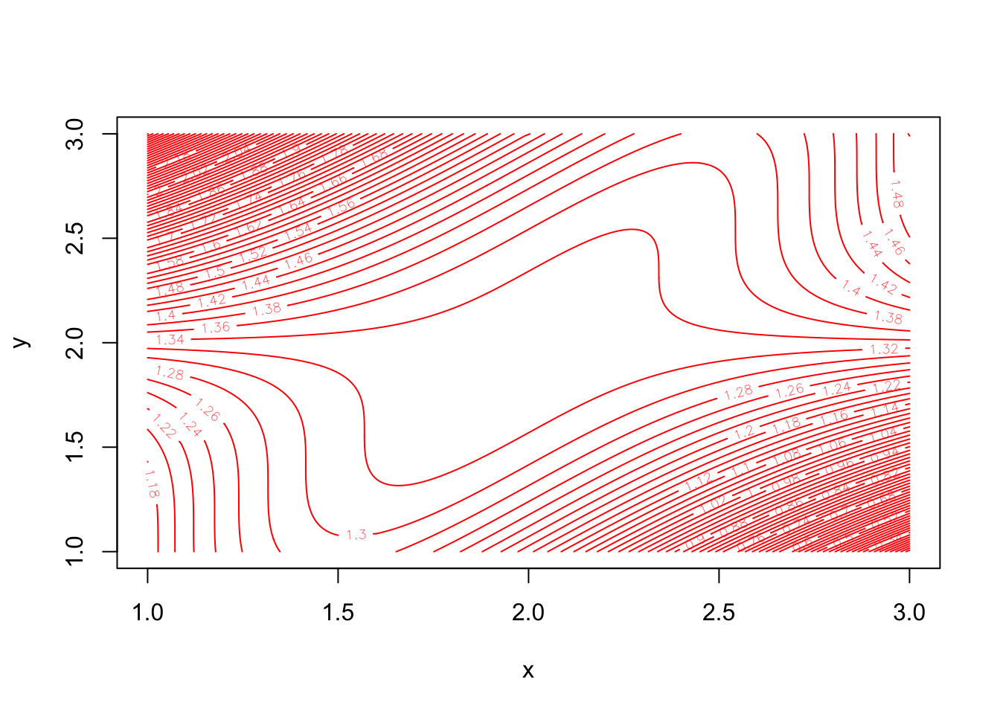
Figure 2.1: Contour Plot Bivariate Cubic
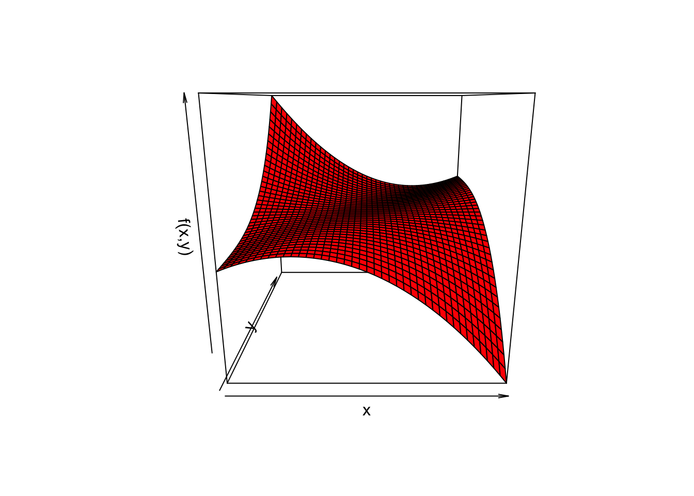
Figure 2.2: Perspective Plot Bivariate Cubic
The derivatives are \[\begin{align*} \mathcal{D}_1f(x,y)&=(y-2)(x-\frac12(y+2)),\\ \mathcal{D}_2f(x,y)&=\frac12(x-y)^2, \end{align*}\] and \[ \mathcal{D}^2f(x,y)=\begin{bmatrix} y-2&x-y\\ x-y&y-x \end{bmatrix}. \] Start with \(y^{(0)}>2\). Minimizing over \(x\) for given \(y^{(k)}\) gives \[ x^{(k)}=\frac12(y^{(k)}+2), \] and minimizing over \(y\) for given \(x^{(k)}\) gives \[ y^{(k+1)}=x^{(k)}. \] It follows that \[\begin{align*} x^{(k+1)}-2&=\frac12(x^{(k)}-2),\\ y^{(k+1)}-2&=\frac12(y^{(k)}-2). \end{align*}\] Thus both \(x^{(k)}\) and \(y^{(k)}\) decrease to two with linear convergence rate \(\frac12\). The function \(f\) has a saddle point at \((2,2)\), and \[ \mathcal{D}^2f(2,2)= \begin{bmatrix}0&0\\0&0\end{bmatrix}. \]
###Convergence to Incorrect Solutions{#blockrelaxation:somecounterexamples:convergencetoincorrectsolutions}
Convergence needs not be towards a minimum, even if the function is convex. This example is an elaboration of the one in Abatzoglou and O’Donnell (1982).
Let \[ f(a,b)=\max_{x\in [0,1]}\mid x^2-bx-a\mid. \] To compute \(\min f(a,b)\) we do the usual Chebyshev calculations. If \(h(x)\mathop{=}\limits^{\Delta}bx+a\) and \(g(x)\mathop{=}\limits^{\Delta}x^2-h(x)\) we must have \(g(0)=\epsilon\), \(g(y)=-\epsilon\) for some \(0<y<1\) and \(g(1)=\epsilon\). Moreover \(g'(y)=0\). Thus \[\begin{align*} -a&=\epsilon,\\ y^2-by-a&=-\epsilon,\\ 1-b-a&=\epsilon,\\ 2y-b&=0. \end{align*}\] The solution is \(b=1\), \(y=\frac12\), \(a=-\frac18\), and \(\epsilon=\frac18\). Thus the best linear Chebyshev approximation to \(x^2\) on the unit interval is \(x-\frac{1}{8},\) which has function value \(f(-\frac18,1)=\frac18\),
Now use coordinate decent. Start with \(b^{(0)}=0.\) Then \[ a^{(0)}=\mathop{\mathbf{argmin}}\limits_{a} f(a,0)=\frac12. \] and \[ b^{(1)}=\mathop{\mathbf{argmin}}\limits_{b}f(\frac12,b)=0. \] Thus \(b^{(1)}=b^{(0)}\), and we have convergence after a single cycle to a point \((a,b)=(\frac12,0)\) for which \(f(\frac12,0)=\frac12\).This example can be analyzed in more in detail. First we compute the best constant (zero degree polynomial) approximation to \(h(x)\mathop{=}\limits^{\Delta}x^2-bx\). The function \(h\) is a convex quadratic with roots at zero and \(b\), with a mimimum equal to \(-\frac14 b^2\) at \(x=\frac12 b\).
We start with the simple rule that the best constant approximation is the average of the maximum and the minimum on the interval. We will redo the calculations later on, using a different and more general approach.
Case A: If \(b\leq 0\) then \(h\) is non-negative and increasing in the unit interval, and thus \(\mathop{\mathbf{argmin}}\limits_{a} f(a,b)=\frac12(h(0)+h(1))=\frac12(1-b)\).
Case B: If \(0\leq b\leq 1\) then \(h\) attains its minimum at \(\frac12 b\) in the unit interval, and its maximum at one, thus \[\mathop{\mathbf{argmin}}\limits_{a} f(a,b)=\frac12(h(\frac12 b)+h(1))=-\frac18 b^2-\frac12 b +\frac12\].
Case C: If \(1\leq b\leq 2\) then \(h\) still attains its minimum at \(\frac12 b\) in the unit interval, but now the maximum is at zero, and thus \(\mathop{\mathbf{argmin}}\limits_{a} f(a,b)=\frac12(h(\frac12 b)+h(0))=-\frac18 b^2\).
Case D: If \(b\geq 2\) then \(h\) is non-positive and decreasing in the unit interval, and thus again \(\mathop{\mathbf{argmin}}\limits_{a} f(a,b)=\frac12(h(0)+h(1))=\frac12(1-b)\).
We can derive the same results, and more, by using a more general approach. First \[ f(a,b)= \max\left\{\max_{0\leq x\leq 1}(x^2-a-bx),-\min_{0\leq x\leq 1}(x^2-a-bx)\right\}. \] Since \(x^2-a-bx\) is convex, we see \[ f(a,b)= \max\left\{-a,1-a-b,-\min_{0\leq x\leq 1}(x^2-a-bx)\right\}. \] Now \(x^2-a-bx\) has a minimum at \(x=\frac12 b\) equal to \(-a-\frac14 b^2\). This is the minimum over the closed interval if \(0\leq b\leq 2\), otherwise the minimum occurs at one of the boundaries. Thus \[ \min_{0\leq x\leq 1}(x^2-a-bx)=\begin{cases} -a-\frac14 b^2&\text{ if }0\leq b\leq 2,\\ \min(-a,1-a-b)&\text{ otherwise},\end{cases} \] and \[ f(a,b)=\begin{cases} \max\{1-a-b,a+\frac14 b^2\}&\text{ if }0\leq b\leq 1,\\ \max\{-a,a+\frac14 b^2\}&\text{ if }1\leq b\leq 2,\\ \max\{|a|,|1-a-b|\}&\text{ otherwise}.\end{cases} \] It follows that \[ \mathop{\mathbf{argmin}}\limits_{a} f(a,b)=\begin{cases} \frac12-\frac12 b-\frac18b^2&\text{ if }0\leq b\leq 1,\\ -\frac18 b^2&\text{ if }1\leq b\leq 2,\\ \frac12(1-b)&\text{ otherwise}.\end{cases} \] It is more complicated to compute \(\mathop{\mathbf{argmin}}\limits_{b} f(a,b)\), because the corresponding Chebyshev approximation problem does not satisfy the Haar condition, and the solution may not be unique.
We make the necessary calculations, starting from the left. Define \(g_1(b)\mathop{=}\limits^{\Delta}\max\{|a|,|1-a-b|\}\). For \(b\leq 0\) we have \(f(a,b)=g_1(b)\). Define \(b_-\mathop{=}\limits^{\Delta}(1-a)-|a|\) and \(b_+\mathop{=}\limits^{\Delta}(1-a)+|a|\). Then \[ g_1(b)= \begin{cases} (1-a)-b&\text{ if }b\leq b_-,\\ |a|&\text{ if }b_1<b<b+,\\ b-(1-a)&\text{ if }b\geq b_+. \end{cases} \] Note that \(b_+>0\) for all \(a\). If \(b_-<0\) then \(g_1\) has a minimum equal to \(-b_-\) for all \(b\) in \([b_-,0]\). Now \(b_-<0\) if and only if \(a>\frac12\). Thus for \(a>\frac12\) we have \[ \mathbf{Arg}\mathop{\mathbf{min}}\limits_{b}f(a,b)=[(1-a)-|a|,0]. \]
Switch to \(g_2(b)\mathop{=}\limits^{\Delta}\max\{1-a-b,a+\frac14 b^2\}\). For \(0\leq b\leq 1\) we have \(f(a,b)=g_2(b)\). We have \(1-a-b>a+\frac14 b^2\) if and only if \(\frac14 b^2+b+(2a-1)<0\). The discriminant of this quadratic is \(2(1-a)\), which means that if \(a>1\) we have \(g_2(b)=a+\frac14 b^2\) everywhere. If \(a<1\) define \(b_-\) and \(b_+\) as the two roots \(-2\pm 2\sqrt{2(1-a)}\) of the quadratic. Now \[ g_2(b)= \begin{cases} 1-a-b&\text{ if }b_-\leq b\leq b_+,\\ a+\frac14 b^2&\text{ otherwise}. \end{cases} \] Clearly \(b_-<0\). If \(a>\frac12\) then also \(b_+<0\) and thus \(g_2(b)=a+\frac14 b^2\) on \([0,1]\). If \(0<b_+<1\) then \(g_2\) has a minimum at \(b_+\). Thus if \(-\frac18<a<\frac12\) we have \[ \mathop{\mathbf{argmin}}\limits_{b} f(a,b)=2+2\sqrt{2(1-a)}. \]
Next \(g_3(b)\mathop{=}\limits^{\Delta}\max\{-a,a+\frac14 b^2\}\), which is equal to \(f(a,b)\) for \(1\le b\leq 2\). If \(a>0\) then \(g_3(b)=a+\frac14 b^2\) everywhere. If \(a<0\) define \(b_-\) and \(b_+\) as \(\pm\sqrt{-8a}\). Then \[ g_3(b)= \begin{cases} -a&\text{ if }b_-\leq b\leq b_+,\\ a+\frac14 b^2&\text{ otherwise}. \end{cases} \] If \(1<b_+<2\) then we have a minimum of \(g_3\) at \(b_+\). Thus if \(-\frac12<a<-\frac18\) we find \[ \mathop{\mathbf{argmin}}\limits_{b} f(a,b)=\sqrt{-8a}. \]
And finally we get back to \(g_1\) again at the right hand side of the real line. We have a minimum if \(b_+>2\), i.e. \(a<-\frac12\). In that case \[ \mathbf{Arg}\mathop{\mathbf{min}}\limits_{b} f(a,b)=[2,(1-a)+|a|] \]
So, in summary, \[ \mathbf{Arg}\mathop{\mathbf{min}}\limits_{b} f(a,b)=\begin{cases} [(1-a)-|a|,0]&\text{ if }a>\frac12,\\ \{2+2\sqrt{2(1-a)}\}&\text{ if }-\frac18<a<\frac12,\\ \{\sqrt{-8a}\}&\text{ if }-\frac12<a<-\frac18,\\ [2,(1-a)+|a|]&\text{ if }a<-\frac12. \end{cases} \] We now have enough information to write a simple coordinate descent algorithm. Of course such an algorithm would have to include a rule to select from the set of minimizers if the minimers are not unique. In ourR implementation in ccd.R we allow for different rules. If the minimizers are an interval, we always choose the smallest point, or always to largest point, or always the midpoint, or a uniform draw from the interval. We shall see in our example that these
different options have a large influence on the approximation the algorithm converges too, in fact even on what the algorithm considers to be desirable points.
We give the function that transforms \[b^{(k)}\] into \[b^{(k+1)}\] with the four different selection rules in Figure 1.
The function is in red, the line \(b^{(k+1)}=b^{(k)}\) in blue. Thus over most of the region of interest the algorithm does not change the slope, which means it converges in a single iteration to an incorrect solution. It needs more iterations only for the midpoint and random selection rules if started outside \([0,2].\)
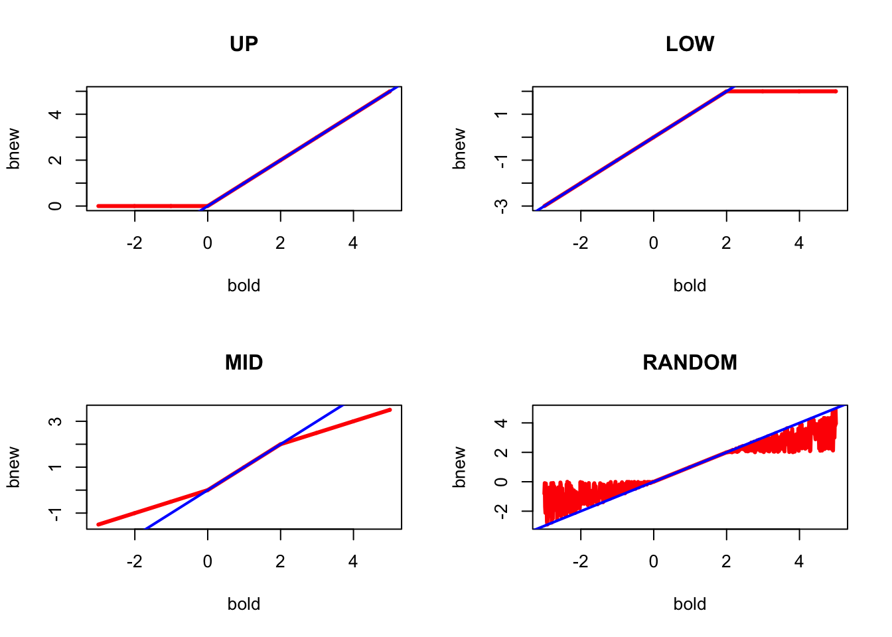
###Non-convergence and Cycling{#blockrelaxation:somecounterexamples:nonconvergenceandcycling}
Coordinate descent may not converge at all, even if the function is differentiable.
There is a nice example, due to Powell (1973). It is somewhat surprising that Powell does not indicate what the source of the problem is, using Zangwill’s convergence theory. The reason seems to be that the mathematical programming community has decided, at an early stage, that linearly convergent algorithms are not interesting and/or useful. The recent developments in statistical computing suggest that this is simply not true.
Powell’s example involves three variables, and the function \[ \psi(\omega)=\frac{1}{2}\omega'A\omega+\hbox{dist}^2(\omega,\mathcal{K}), \] where \[ a_{ij}=\begin{cases} -1& \text{if $i\not=j$,}\\ 0& \text{if $i=j$,} \end{cases} \] and where \(\mathcal{K}\) is the cube \[ \mathcal{K}=\{\omega\mid -1\leq\omega_i\leq +1\}, \]
The derivatives are \[ \mathcal{D}\psi=A\omega+2(\omega-\mathcal{P}_\mathcal{K}(\omega)). \] In the interior of the cube \(\mathcal{D}\psi=A\omega,\) which means that the only stationary point in the interior is the saddle point at \(\omega=0.\) In general at a stationary point we have \((A+2\mathcal{I})\omega=\mathcal{P}_\mathcal{K}(\omega)),\) which means that we must have \(u'\mathcal{P}_\mathcal{K}(\omega))=0.\) The only points where the derivatives vanish are saddle points. Thus the only place where there can be minima is on the surface of the cube.
Also for \(x=y=z=t>1\) we see that \(\psi(x,y,z)=-3t^2+3(t-1)^2= 3-6t,\) which is unbounded. For \(x=y=t>1\) and \(z=-t\) we find \[ \psi(x,y,z)=-t^2+3(t-1)^2=2t^2-6t+3. \] This has its minimum \(-1.5\) at \(t=1.5\) and it has a root at \(t=\frac{1}{2}(3+\sqrt{12})=4.9641.\)
Let us apply coordinate descent. A search along the x-axis finds the optimum at \(+1+\frac{1}{2}(y+z)\) if \(y+z>0\) and at \(-1+\frac{1}{2}(y+z)\) if \(y+z<0\). If \(y+z=0\) the minimizer is any point in \([-1,+1]\).
This guarantees that the partial derivative with respect to \(x\) is zero. The other updates are given by symmetry. Thus, if we start from \[ (-1-\epsilon,1+{\frac{1}{2}}\epsilon,-1-{\frac{1}{4}}\epsilon), \] with \(\epsilon\) some small positive number, then we generate the following sequence. \[ \begin{bmatrix} (+1+\frac{1}{8}\epsilon, &+1+\frac{1}{2}\epsilon,&-1-\frac{1}{4}\epsilon)\\ (+1+\frac{1}{8}\epsilon, &-1-\frac{1}{16}\epsilon,&-1-\frac{1}{4}\epsilon)\\ (+1+\frac{1}{8}\epsilon, &-1-\frac{1}{16}\epsilon,&+1+\frac{1}{32}\epsilon)\\ (-1-\frac{1}{64}\epsilon,&-1-\frac{1}{16}\epsilon,&+1+\frac{1}{32}\epsilon)\\ (-1-\frac{1}{64}\epsilon,&+1+\frac{1}{128}\epsilon,&+1+\frac{1}{32}\epsilon)\\ (-1-\frac{1}{64}\epsilon,&+1+\frac{1}{128}\epsilon,&-1-\frac{1}{256}\epsilon) \end{bmatrix} \]
But the sixth point is of the same form as the starting point, with \(\epsilon\) replaced by \(\frac{\epsilon}{64}.\) Thus the algorithm will cycle around six edges of the cube. At these edges the gradient of the function is bounded away from zero, in fact two of the partials are zero, the others are \(\pm 2.\) The function value is \(+1.\) The other two edges of the cube, i.e. \((+1,+1,+1)\) and \((-1,-1,-1)\) are the ones we are looking for, because there the function value is \(-3,\) the global minimum. At these two points all three partials are \(\pm 2.\)
Powell gives some additional examples which show the same sort of cycling behaviour, but are somewhat smoother.
###Sublinear Convergence{#blockrelaxation:somecounterexamples:sublinearconvergence}
Convergence can be sublinear.
\[\begin{align*} \psi(\omega,\xi)&=(\omega-\xi)^2+\omega^4,\notag \\ \mathcal{D}_1\psi(\omega,\xi)&=2(\omega-\xi)+4\omega^3,\notag\\ \mathcal{D}_2\psi(\omega,\xi)&=-2(\omega-\xi),\notag\\ \mathcal{D}_{11}\psi(\omega,\xi)&=2+12\omega^2,\notag\\ \mathcal{D}_{12}\psi(\omega,\xi)&=-2,\notag\\ \mathcal{D}_{22}\psi(\omega,\xi)&=2.\notag \end{align*}\]
It follows that coordinate descent updates \(\omega^{(k)}\) by solving the cubic \(\omega-\omega^{(k)}+2\omega^3=0.\) The sequence converges to zero, and by l’Hopitål’s rule \[ \lim_{k\rightarrow\infty}{\frac{\omega^{(k+1)}}{\omega^{(k)}}}=1. \] This leads to very slow convergence. The reason is that the matrix of second derivatives of \(\psi\) is singular at the origin.
#Coordinate Descent{#coordinatedescent}
##Introduction{#coordinatedescent:introduction}
We discuss coordinate descent and ascent in a separate chapter, because it is a very important special case of block relaxation, with many really interesting examples.
##Convergence rate{#coordinatedescent:convergencerate}
The product form of the derivative of the algorithmic map for coordinate descent is \[ \mathcal{M}(x)=\left[I-\frac{e_pe_p'\mathcal{D}^2f(x)} {e_p'\mathcal{D}^2f(x)e_p}\right] \times\cdots\times \left[I-\frac{e_1e_1'\mathcal{D}^2f(x)}{e_1'\mathcal{D}^2f(x)e_1}\right], \] where the \(e_s\) are unit vectors (all elements zero, except for element \(s\), which is equal to one).
##Examples{#coordinatedescent:examples}
###The Cartesian Folium{#coordinatedescent:examples:thecartesianfolium}
The ``folium cartesii’’ (letter of Descartes to Mersenne, August 23, 1638) is the function \[f:\mathbb{R}^2\rightarrow\mathbb{R}\] defined by \[ f(x,y)=x^3+y^3-3xy. \]
The gradient is \[ \mathcal{D}f(x,y)=\begin{bmatrix}3x^2-3y\\3y^2-3x\end{bmatrix}, \] and the Hessian is \[ \mathcal{D}^2f(x,y)=\begin{bmatrix}6x&-3\\-3&6y\end{bmatrix}. \] It follows that \(f(x,y)\) has a saddle point at \((0,0)\) and an isolated local minimum at \((1,1)\). These are the only two stationary points. At \((0,0)\) the eigenvalues of the Hessian are \(+3\) and \(-3\), at \((1,1)\) they are \(9\) and \(3\).
The Hessian is singular if and only if \((x,y)\) is on the hyperbola \(xy=\frac14\). It is positive definite if and only if \((x,y)\) is above the branch of the hyperbola in the positive orthant.
See Figure 1 for contour plots of sections of \(f\) on two different scales.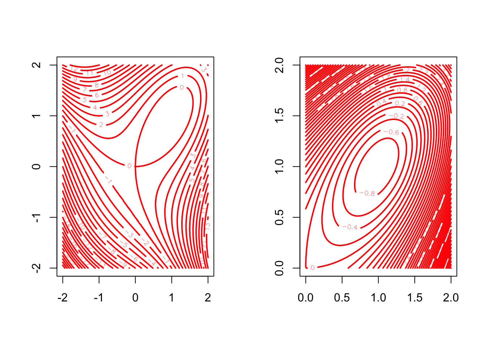
Now apply coordinate descent (J. De Leeuw (2007b)). The minimum over \(x\) for fixed \(y\) only exists if \(y>0\), in which case it is attained at \(\sqrt{y}\). In the same way, the minimum over \(y\) for fixed \(x>0\) is attained at \(\sqrt{x}\). Thus the algorithm is simply \[\begin{align*} x^{(k+1)}&=\sqrt{y^{(k)}},\\ y^{(k+1)}&=\sqrt{x^{(k+1)}}, \end{align*}\] and the algorithmic map is \[ \mathcal{A}(x,y)=\begin{bmatrix}\sqrt{y}\\\sqrt[4]{y}\end{bmatrix}. \] The algorithm can only work if we start with \(y^{(0)}>0\). It then converges, linearly and monotonically, to \((1,1)\) with convergence rate \(\frac14\). If we start with \(y^{(0)}\leq 0\) then \(x^3+(y^{(0)})^3-3xy^{(0)}\) is unbounded below and thus coordinate descent fails.
###A Family of Quadratics{#coordinatedescent:examples:afamilyofquadratics}
This example shows some of the properties of coordinate relaxation. We want to minimize \[ \psi_{\lambda}(x,y)=\frac{1}{2}x^2+\frac{1}{2}y^2-\lambda xy. \] For each \(\lambda\) this is a quadratic in \(x\) and \(y\). If we fix \(y\) and \(\lambda\), the resulting function is a convex quadratic in \(x\). And if we fix \(x\) and \(\lambda\), the resulting function is a convex quadratic in \(y\). Thus coordinate relaxation can always be carried out, with a unique minimum in each substep.
The partials are given by \[\begin{align*} \frac{\partial\psi_{\lambda}}{\partial x}&=x-\lambda y,\\ \frac{\partial\psi_{\lambda}}{\partial y}&=y-\lambda x, \end{align*}\] and the Hessian is the matrix \[ \begin{bmatrix} 1 & -\lambda\\ -\lambda & 1 \end{bmatrix}. \] Thus the eigenvalues of the Hessian are \(1+\lambda\) and \(1-\lambda\).
If \(-1<\lambda<+1\) then the function has a unique isolated minimum equal to zero at \((0,0)\). If \(\lambda=+1\) it has a minimum equal to zero on the line \(x-y=0\) and if \(\lambda=-1\) it has a minimum equal to zero on the line \(x+y=0\). If \(\lambda^{2}>1\) the unique stationary point at \((0,0)\) is a saddle point, and there are no minima or maxima.
Coordinate relaxation gives the algorithm \[\begin{align*} y^{(k+1)}&=\lambda x^{(k)}=\lambda^2 y^{(k)},\\ x^{(k+1)}&=\lambda y^{(k+1)}=\lambda^2 x^{(k)}, \end{align*}\] or \[\begin{align*} x^{(k)}&=\lambda^{2k}x^{(0)},\\ y^{(k)}&=\lambda^{2k-1}x^{(0)}. \end{align*}\] Thus we have convergence to \((0,0)\) if and only if \(\lambda^2<1.\) In that case convergence is linear, with rate \(\lambda^2,\) Convergence is immediate, to \((x^{(0)},x^{(0)})\) or \((x^{(0)},-x^{(0)})\), if \(\lambda^2=1.\)
For the function values we have \[ \psi^{(k)}=\frac{1}{2}(1-\lambda^{2})\lambda^{4k-2}[x^{(0)}]^{2}, \] If \(\lambda^2>1\) then the function values \(\psi^{(k)}\) decrease, and diverge to \(-\infty\). Also, \((x^{(k)},y^{(k)})\) diverges to infinity. By defining \(\tilde\psi=\exp\psi,\) we easily change the problem into an equivalent one with the same iterates, for which function values converge to zero, but since \((x^{(k)},y^{(k)})\) is the same sequence as before it still diverges to infinity.
Note that \[ \frac{\psi^{(k+1)}}{\psi^{(k)}}=\lambda^4, \] while \[ \frac{x^{(k+1)}}{x^{(k)}}=\frac{y^{(k+1)}}{y^{(k)}}= \lambda^2. \] Thus function values converge twice as fast as the coordinates of the solution vector.
###Loglinear Models{#coordinatedescent:examples:loglinearmodels}
Let \[ \mathcal{L}(\theta)=\sum_{k=1}^K n_k\log\lambda_k(\theta)-\lambda_k(\theta), \] be a Poisson-log-likelihood with \[ \lambda_k(\theta)=\exp\sum_{j=1}^m x_{kj}\theta_j. \] We see that \[ \mathcal{D}_j\mathcal{L}(\theta)=\sum_{k=1}^n n_kx_{kj}-\sum_{k=1}^n \lambda_k(\theta)x_{kj}, \] and \[ \mathcal{D}_{j\ell}\mathcal{L}(\theta)=-\sum_{k=1}^n\lambda_k(\theta)x_{kj}x_{k\ell}. \] Thus the log-likelihood is concave. Normally we would apply a safe-guarded version of Newton’s method, but here we want to illustrate CCA.
Now suppose \(X=\left\{x_{kj}\right\}\) is a design-type matrix, with elements equal to \(0\) or \(1.\) Let \[ \mathcal{K}_j\mathop{=}\limits^{\Delta}\left\{k\mid x_{kj}=1\right\}. \] Then the likelihood equations are \[ \sum_{k\in\mathcal{K}_j}n_k=\sum_{k\in\mathcal{K}_j}\lambda_k(\theta). \] Solving each of these in turn is CCA (since we are maximizing), which is also known in this context as the iterative propertional fitting or IPF algorithm.
We have, using \(e_j\) for the coordinate directions, \[ \lambda_k(\theta+\tau e_j)=\begin{cases} \lambda_k(\theta)& \text{if $k\not\in\mathcal{K}_j$,}\\ \mu\lambda_k(\theta)& \text{if $k\in\mathcal{K}_j$}, \end{cases} \] with \(\mu=\exp\tau.\) This explains the name of the algorithm, because the \(\lambda_k\) in \(\mathcal{K}_j\) are adjusted with the same proportionality factor.
Thus the optimal \(\mu\) is simply \[ \mu={\frac{\sum_{k\in\mathcal{K}_j}n_k}{\sum_{k\in\mathcal{K}_j}\lambda_k(\theta)}}. \]
This example can be extended to the case in which the elements of the design matrix are \(-1,0,\) and \(+1.\) We define \[ \mathcal{K}_j^+\mathop{=}\limits^{\Delta}\left\{k\mid x_{kj}=1\right\}, \] and \[ \mathcal{K}_j^-\mathop{=}\limits^{\Delta}\left\{k\mid x_{kj}=-1\right\}. \] We now have to solve the quadratic equation \[ \mu^2\sum_{k\in\mathcal{K}_j^+}\lambda_k(\theta)-\mu\Delta_j-\sum_{k\in\mathcal{K}_j^-}\lambda_k(\theta)=0, \] with \[ \Delta_j\mathop{=}\limits^{\Delta}\sum_{k\in\mathcal{K}_j^+}n_k-\sum_{k\in\mathcal{K}_j^-}n_k \] for the proportionality factor. If \(\mathcal{K}_j^-=\emptyset\) then \[ \mu={\frac{\sum_{k\in\mathcal{K}_j^+}n_k}{\sum_{k\in\mathcal{K}_j^+}\lambda_k(\theta)}} \] as before. If \(\mathcal{K}_j^+=\emptyset\) then \[ \mu={\frac{\sum_{k\in\mathcal{K}_j^-}\lambda_k(\theta)}{\sum_{k\in\mathcal{K}_j^-}n_k}} \] If the positive and negative index sets are both nonempty, then the quadratic always has one positive and one negative root, and we select the positive one.
Basically the same CCA/IPF technique can also be applied if the elements of \(X\) are arbitrary integers. To avoid trivialities we assume each column of \(X\) has at least one non-zero element. In that case solving for \(\mu\) amounts to solving a higher degree polynomial equation. Suppose the non-zero elements of column \(j\) of \(X\) are from a set \(\mathcal{I}_j\) of integers. Elements of \(\mathcal{I}_j\) can be positive or negative. Define \[\begin{align*} \overline{n}_{ij}&\mathop{=}\limits^{\Delta}\sum\{n_k\mid x_{kj}=i\},\\ \overline{\lambda}_{ij}(\theta)&\mathop{=}\limits^{\Delta} \sum\{\lambda_k(\theta)\mid x_{kj}=i\}. \end{align*}\] Also define \[ \Delta_j\mathop{=}\limits^{\Delta}\sum_{i\in\mathcal{I}_j}i\overline{n}_{ij}. \] To find the optimal \(\mu\) for coordinate \(j\) we must solve \(g_j(\mu)=\Delta_j\), where \[ g_j(\mu)\mathop{=}\limits^{\Delta}\sum_{i\in\mathcal{I}_j}\mu^i i\overline{\lambda}_{ij}(\theta). \] Note that \(\mathcal{D}g_j(\mu)>0\) for all \(\mu>0\), i.e. \(g_j\) is strictly increasing. Let \(i_j^+\) be the maximum of the \(i\in\mathcal{I}_j\) and let \(i_j^-\) be the minimum. We can distinguish three different behaviors of \(g_j\) on the positive reals.
- If \(i_j^->0\) then \(g_j\) increases from 0 to \(+\infty\).
- If \(i_j^+<0\) then \(g_j\) increases from \(-\infty\) to 0.
- If \(i_j^-<0\) and \(i_j^+>0\) then \(g_j\) increases from \(-\infty\) to \(+\infty\).
In all three cases there is a unique positive root of the equation \(g_j(\mu)=\Delta_j\). To solve we note that if \(i_j^->0\) we need to find the unique positive real root of a polynomial of degree \(i_j^+\). If \(i_j^+<0\) we solve the equation for \(\frac{1}{\mu}\), again finding the unique positive real root of a polynomial of degree \(-i_j^-\). In case 3, in which \(\mathcal{I}_j\) has both negative and positive elements, we multiply both sides of the equation by \(\mu^{-{i_j}^-}\) to get
\[\sum_{i\in\mathcal{I}_j}\mu^{i-{i_j}^-} i\overline{\lambda}_{ij}(\theta)=\Delta_j\mu^{-{i_j}^-},\]
which is a polynomial equation of degree \(i_j^+-i_j^-\), again with a single positive real root. I have written an R program for this general case.
The function polyLogLinF() does the computations, the function polyLogLin() is the driver for the iterations.
Consider the example with
> x
[,1] [,2] [,3] [,4]
[1,] 1 1 -1 0
[2,] 1 1 1 0
[3,] 1 1 -1 0
[4,] 1 2 1 0
[5,] 1 2 -1 0
[6,] 1 2 1 -1
[7,] 1 3 -1 -1
[8,] 1 3 1 -1
[9,] 1 3 -1 -1
[10,] 1 0 1 -1and n equal to 1:10. We find, for the final iterations,
Iteration: 34 fold: 4.83068380 fnew: 4.83068066
Iteration: 35 fold: 4.83068066 fnew: 4.83067878
Iteration: 36 fold: 4.83067878 fnew: 4.83067765
Iteration: 37 fold: 4.83067765 fnew: 4.83067697
$lbd
[1] 3.049407 2.988786 3.049407 2.925556 2.984896 7.968232 7.957861 7.799660
[9] 7.957861 8.316384
$f
[1] 4.830677
$theta
[1] 1.12628967 -0.02138247 -0.01004005 -1.00197798Note that if we say
polyLogLin(n,x+3)then we find the same solution, although much more slowly,
Iteration: 428 fold: 4.83072092 fnew: 4.83071986
Iteration: 429 fold: 4.83071986 fnew: 4.83071882
Iteration: 430 fold: 4.83071882 fnew: 4.83071780
Iteration: 431 fold: 4.83071780 fnew: 4.83071681
$lbd
[1] 3.049790 2.993221 3.049790 2.932093 2.987506 7.967771 7.952558 7.805050
[9] 7.952558 8.303460
$f
[1] 4.830717
$theta
[1] 1.053848982 -0.020633792 -0.009361352 -0.999688396###Rayleigh Quotient{#coordinatedescent:examples:rayleighquotient}
The problem is to minimize the Rayleigh quotient \[ \lambda(x)=\frac{x'Ax}{x'Bx} \] over all \(x\). Here \(A\) and \(B\) are known matrices, with \(B\) positive definite.
If we update \(x\) to \(\tilde x=x+\theta e_i,\) with \(e_i\) a unit vector, then \[ \lambda(\tilde x)= \frac{\theta^2a_{ii}+2\theta x'a_i+x'Ax} {\theta^2b_{ii}+2\theta x'b_i+x'Bx}. \] Think of this as a continous rational function \(\gamma\) of the single variable \(\theta\), which we have to minimize. Clearly \(\gamma\) has a horizontal asymptote, with \[ \lim_{\theta\rightarrow+\infty}\gamma(\theta)= \lim_{\theta\rightarrow-\infty}\gamma(\theta)=\frac{a_{ii}}{b_{ii}}. \] Also \[ \mathcal{D}\gamma(\theta)=\frac{2Q(\theta)}{P^2(\theta)}, \] with \[ P(\theta)\mathop{=}\limits^{\Delta}\theta^2b_{ii}+2\theta x'b_i+x'Bx, \] and \[ Q(\theta)\mathop{=}\limits^{\Delta}\theta^2(a_{ii}x'b_i-b_{ii}x'a_i) +\theta(a_{ii}x'Bx-b_{ii}x'Ax)+ (x'a_ix'Bx-x'b_ix'Ax). \] In addition \[ \mathcal{D}^2\gamma(\hat\theta)=2\frac{P^2(\theta)\mathcal{D}Q(\theta)-Q(\theta)\mathcal{D}P^2(\theta)}{P^4(\theta)}, \] and thus \(\mathbf{sign}(\mathcal{D}\gamma(\theta))= \mathbf{sign}(Q(\theta))\) and at values where \(Q(\theta)=0\) we have \(\mathbf{sign}(\mathcal{D}^2\gamma(\theta))= \mathbf{sign}(\mathcal{D}Q(\theta))\).
We now distinguish three cases. 1. First, \(\gamma\) can be a constant function, everywhere equal to \(\frac{a_{ii}}{b_{ii}}\). This happens only if \(x=0\) or \(x=e_i\), which makes \(Q(\theta)=0\) for all \(\theta\). In this case we do not update, and just go to the next \(i\). 2. Second, \(Q\) can have a zero quadratic term. If we make sure that \(\frac{x'Ax}{x'Bx}<\frac{a_{ii}}{b_{ii}}\) then the unique solution of the linear equation \(Q(\theta)=0\) satisfies \(\mathcal{D}^2\gamma(\theta)>0\), and consequently corresponds with the unique minimum of \(\gamma\). Updating \(x\) guarantees that we will have \(\frac{x'Ax}{x'Bx}<\frac{a_{ii}}{b_{ii}}\) for all subsequent iterations. If we happen to start with or wind up in a point with a zero quadratic term and with \(\frac{x'Ax}{x'Bx}>\frac{a_{ii}}{b_{ii}}\) then \(\gamma\) does not have a minimum and coordinate descent fails. 3. If \(Q\) is a proper quadratic then \(\gamma\) is either increasing at both infinities or decreasing at both infinities. In the first case, when \(Q\) is a convex quadratic, \(\gamma\) increases from the horizontal asymptote to the maximum, then decreases to the minimum, and then increases again to the horizontal asymptote. In the second case, with \(Q\) a concave quadratic, \(\gamma\) decreases from the horizontal asymptote to the minimum, then increases to the maximum, and then decreases again to the horizontal asymptote. In either case it has two extremes, one minimum and one maximum, corresponding to the roots of the quadratic \(Q\). This also shows that if \(Q\) is a proper quadratic, then it always has two distinct real roots.
Here is some simple code to illustrate the cases distinguished above. We have a simple function to compute \(\lambda\).Case 2, with the zero quadratic term, and Case 3, the proper quadratic, are illustrated with
a <- matrix (-1, 3, 3)
diag (a) <- 1
b <- diag (3)
x <- c(1, 1, -1)
zseq <- seq (-8, 8, length = 100)
png("myOne.png")
plot (zseq, fRayleigh (zseq, 1, x, a, b),type="l",cex=3,col="RED",xlab="theta",ylab="lambda")
abline(h=a[1,1] / b[1,1])
dev.off()
x <- c(1,0,1)
png("myTwo.png")
plot (zseq, fRayleigh (zseq, 2, x, a, b),type="l",cex=3,col="RED",xlab="theta",ylab="lambda")
abline(h=a[2,2] / b[2,2])
dev.off()For Case 2 we see that \[\gamma\] has no minimum, and CCD fails. For Case 3, which is of course the usual case, there are no problems.
\[ \fbox{Insert Figure 1 here} \] \[ \fbox{Insert Figure 2 here} \]
The coordinate descent method can obviously take sparseness into account, and it can easily be generalized to separable constraints on the elements of \(x,\) such as non-negativity. Note that it also can be used to maximize the Rayleigh quotient, simply by taking the other root of the quadratic. Or, alternatively, we can interchange \(A\) and \(B\).The second derivative of the Rayleigh quotient at a stationary point normalized by \(x'Bx=1\) is simply \[ \mathcal{D}^2\lambda(x)=2(A-\lambda(x)B). \] This is singular and thus the product form of the derative of the algorithmic map has largest eigenvalue equal to one, corresponding with the eigenvector \(x\). Singularity of the Hessian is due, of course, to the fact that \(\lambda\) is homogenous of degree zero, and rescaling \(x\) does not change the value of the objective function. We can use this to our advantage. Suppose we normalize \(x\) to \(x'Bx=1\), after each coordinate descent cycle. This will not change the function values computed by the algorithm, but is changes the algorithmic map. The derivative of the modified map is \[ \overline{\mathcal{M}}(x)=(I-yy'B)\mathcal{M}(x), \] which has the same eigenvalues and eigenvectors as \(\mathcal{M}(x)\), except for \(\overline{\mathcal{M}}(x)x=0\), while \(\mathcal{M}(x)x=1\).
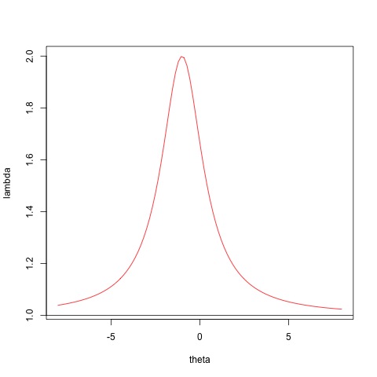
Figure 2.3: Case 2 – CCA Fails
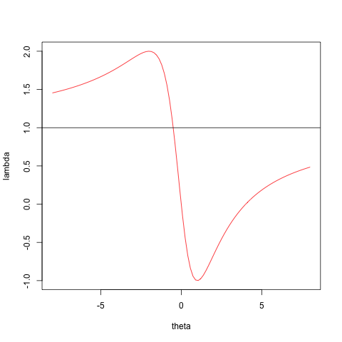
Figure 2.4: Case 3 – CCA Works
###Squared Distance Scaling{#coordinatedescent:examples:squareddistancescaling}
In ALSCAL [Takane, Young, De Leeuw, 1977] we find multidimensional scaling solutions by minimizing the loss function sstress, defined by \[ \sigma_2(X)\mathop{=}\limits^{\Delta}\frac12\sum_{i=1}^n\sum_{j=1}^nw_{ij}(\delta_{ij}-d_{ij}^2(X))^2. \] Thus known dissimilarities \(\delta_{ij}\) are approximated by squared Euclidean distances between points, which have coordinates in an \(n\times p\) matrix \(X\). Both dissimilarities \(\Delta=\{\delta_{ij}\}\) and the weights \(W=\{w_{ij}\}\) are non-negative, symmetric, and hollow. Thus \[ d_{ij}^2(X)=\sum_{s=1}^p (x_{is}-x_{js})^2. \]
Takane et al. discuss different block relaxation approaches to minimizing \(\sigma_2\). Because the loss function is a multivariate quartic the stationary equations obtained by setting the partials equal to zero are a system of \(np\) cubic equations in \(np\) unknowns. So, at least theoretically, we could use algebraic methods to solve the stationary equations and find the global minimum of sstress. This corresponds with the case in which there is only a single block of coordinates, but in the ALSCAL context other blocks are introduced by optimally transforming the dissimilarities and by incorporating weights for individual difference MDS models. At the other extreme of the block relaxation spectrum we could introduce \(np\) blocks for the \(np\) coordinates, which means we would use coordinate descent. Takane et al. ultimately decide to use a generalized block relaxation method with \(n\) blocks of the \(p\) coordinates of a single point, with a safeguarded Newton method used to minimize over a single block.
In this section we study coordinate descent in detail. If we modify coordinate \((k,t)\) then only the squared distances \(d_{ik}^2\) and \(d_{ki}^2\) with \(i\not= k\) will change. Adding \(\theta\) to \(x_{kt}\) with change \(d_{ik}^2\) to \(d_{ik}^2-2\theta(x_{it}-x_{kt})+\theta^2\). Thus the part of sstress that depends on \(\theta\) is \[ \sum_{i=1}^n w_{kj}((\delta_{kj}-d_{ik}^2)+2\theta(x_{it}-x_{kt})-\theta^2)^2. \] Differentiating this and setting the derivative to zero gives the cubic equation \[ \sum_{i=1}^n w_{kj}((\delta_{kj}-d_{ik}^2)+2\theta(x_{it}-x_{kt})-\theta^2)((x_{it}-x_{kt})-\theta)=0 \]
\[\begin{multline*} \sum_{i=1}^n w_{kj}(\delta_{kj}-d_{ik}^2)(x_{it}-x_{kt})+2\theta\sum_{i=1}^n w_{kj}(x_{it}-x_{kt})^2-\theta^2\sum_{i=1}^n w_{kj}(x_{it}-x_{kt})\\ -\theta\sum_{i=1}^n w_{kj}(\delta_{kj}-d_{ik}^2)+2\theta^2\sum_{i=1}^n w_{kj}(x_{it}-x_{kt})-\theta^3\sum_{i=1}^n w_{kj} \end{multline*}\]
###Least Squares Factor Analysis{#coordinatedescent:examples:leastsquaresfactoranalysis}
#Alternating Least Squares{#alternatingleastsquares}
##Introduction{#alternatingleastsquares:introduction}
An Alternating Least Squares or ALS algorithm is defined as a block relaxation algorithm applied to a least squares loss function. Least squares loss functions are somewhat loosely defined. We will discuss what we have in mind, before giving some of the history of ALS methods.
We start with have a functions \(f\) of the form \[ f(x)=\sum_{j=1}^m\sum_{\ell=1}^m w_{j\ell}g_j(x)g_\ell(x), \] where \(W\) is an \(m\times m\) fixed positive semi-definite matrix of weights, and we minimize \(f\) over \(x\in\mathcal{X}\).
One obvious property of least squares loss functions is that they are bounded below by zero, which means that a decreasing sequence of loss function values \(f^{(k)}=f(x^{(k)}),\) generated for example by an iterative algorithm, necessarily converges.
Alternating least squares methods by definition use block relaxation, so we introduce a block structure. As usual the block structure is designed to make the minimization subproblems relatively easy to solve. A first step towards simplicity is to \[ f(x_1,\cdots,x_p)=\sum_{j=1}^m\sum_{\ell=1}^mw_{j\ell}g_j(x_1,\cdots,x_p)g_\ell(x_1,\cdots,x_p), \] which must be minimized over \(x_s\in\mathcal{X}_s\), where \(\mathcal{X}=\mathcal{X}_1\otimes\cdots\otimes\mathcal{X}_p\). To make the problem interesting for block optimization we have separated the constraints on \(x\) into separate constraints on the \(n\) blocks \(x_i\).
In many ALS examples there is additional structure. A familar special case has the form \[ f(x_1,x_2)=\sum_{j=1}^m\sum_{\ell=1}^mw_{j\ell}(g_j(x_1)-h_j(x_2))(g_\ell(x_1)-h_\ell(x_2)) \] Of course \(x_1\) and \(x_2\) can be further partitioned into blocks if that is convenient. Even more structure is introduced into the ALS problem when the functions \(g_j\) and \(h_j\) are polynomials or multilinear functions.
As explained in section 1.1 the term Alternating Least Squares was first used in J. De Leeuw (1968). There certainly were ALS methods before 1968. Examples are the missing data methods in factorial analysis of variance pioneered by Yayes (1933), the iterative principal factor analysis method of Thomson (1934), or the MINRES method for factor analysis by Harman and Jones (1966). The systematic use of ALS techniques in psychometrics and multivariate analysis started after the pioneering work of Kruskal (1964a), Kruskal (1964b), Kruskal (1965) in nonmetric multidimensional scaling. De Leeuw, Young, and Takane started the ALSOS system of techniques and programs around 1973 (see F. W. Young, De Leeuw, and Takane (1980)), and De Leeuw, with many others, at Leiden University started the Gifi system around 1975 (see Gifi (1990)).
##Close Relatives{#alternatingleastsquares:closerelatives}
###ALSOS{#alternatingleastsquares:closerelatives:alsos}
ALSOS algorithms are ALS algorithms in which one or more of the blocks defines transformations of variables. \[ f(x,z)=\sum_{j=1}^m\sum_{\ell=1}^mw_{j\ell}g_j(x_1,\cdots,x_p,z)g_\ell(x_1,\cdots,x_p,z). \]
Suppose we have \(n\) observations on two sets of variables \(x_i\) and \(y_i.\) We want to fit a model of the form \[ F_\theta(\Phi(x_i))\approx G_\xi(\Psi(y_i)) \] where the unknowns are the structural parameters \(\theta\) and \(\xi\) and the transformations \(\Phi\) and \(\Psi.\) In ALS we measure loss-of-fit by \[ \sigma(\theta,\xi,\Phi,\Psi)= \sum_{i=1}^n[F_\theta(\Phi(x_i))-G_\xi(\Psi(y_i))]^2. \] This loss function is minimized by starting with initial estimates for the transformations, minimizing over the structural parameters, keeping the transformations fixed at their current values, and then minimizing over the transformations, with structural values kept fixed at their new values. These two minimizations are alternated, which produces a nonincreasing sequence of loss function values, bounded below by zero, and thus convergent. This is a version of the trivial convergence theorem.
The first ALS example is due to Kruskal (1965). We have a factorial ANOVA, with, say, two factors, and we minimize \[ \sigma(\phi,\mu,\alpha,\beta)= \sum_{i=1}^n\sum_{j=1}^m[\phi(y_{ij})-(\mu+\alpha_i+\beta_j)]^2. \] Kruskal required \(\phi\) to be monotonic. Minimizing loss for fixed \(\phi\) is just doing an analysis of variance, minimizing loss over \(\phi\) for fixed \(\mu,\alpha,\beta\) is doing a monotone regression. Obviously also some normalization requirement is needed to exclude trivial zero solutions.
This general idea was extended by De Leeuw, Young, and Takane around 1975 to \[ \sigma(\phi;\psi_1,\cdots,\psi_m)= \sum_{i=1}^n[\phi(y_i)-\sum_{s=1}^p\psi_j(x_{ij})]^2. \] This ALSOS work, in the period 1975-1980, is summarized in F. W. Young, De Leeuw, and Takane (1980). Subsequent work, culminating in the book by Gifi (1990) generalized this to ALSOS versions of principal component analysis, path analysis, canonical analysis, discriminant analysis, MANOVA, and so on. The classes of transformations over which loss was minimized were usually step-functions, splines, monotone functions, or low-degree polynomials. To illustrate the use of more sets in ALS, consider \[ \sigma(\psi_1,\cdots,\psi_m;\alpha,\beta)= \sum_{i=1}^n\sum_{j=1}^m (\psi_j(x_{ij})- \sum_{s=1}^p\alpha_{is}\beta_{js})^2. \] This is principal component analysis (or partial singular value decomposition) with optimal scaling. We can now cycle over three sets, the transformations, the component scores \(\alpha_{is}\) and the component loadings \(\beta_{js}.\) In the case of monotone transformations this alternates monotone regression with two linear least squares problems.
###ACE{#alternatingleastsquares:closerelatives:ace}
The ACE methods, developed by Breiman and Friedman (1985), minimize over all smooth functions.
A problem with ACE is that smoothers, at least most smoothers, often do not minimize a loss function, or the same loss function as is used for the remaining parameters.
In any case, ACE is less general than ALS, because not all least squares problems can be interpreted as computing conditional expectations.
Another obviously related area in statistics is the Generalized Additive Models discussed extensively by Hastie and Tibshirani (1990).
###NIPALS and PLS{#alternatingleastsquares:closerelatives:nipalsandpls}
##Rate of Convergence{#alternatingleastsquares:rateofconvergence}
The least squares loss function, in the most general form we consider here, is \[ f(x)=\frac12\sum_{j=1}^m\sum_{\ell=1}^m w_{j\ell}g_j(x)g_\ell(x), \] with \(W\) a fixed symmetric positive semi-definite matrix of weights.
Thus \[ \mathcal{D}f(x)=\sum_{j=1}^m\sum_{\ell=1}^m w_{j\ell}g_j(x)\mathcal{D}g_\ell(x), \] and \[ \mathcal{D}^2f(x)=\sum_{j=1}^m\sum_{\ell=1}^m w_{j\ell} \left\{g_j(x)\mathcal{D}^2g_\ell(x)+\mathcal{D}g_j(x)(\mathcal{D}g_\ell{x})'\right\}. \]
Note: Older piece follows (fix) 03/12/15
It is easy to apply the general results from the previous sections to ALS. The results show that it is important that the solutions to the subproblems are unique. The least squares loss function has some special structure in its second derivatives which we can often exploit in a detailed analysis. If \[ \sigma(\omega,\xi)=\sum_{i=1}^n (f_i(\omega)-g_i(\xi))^2, \] then \[ \mathcal{D}^2\sigma= \begin{bmatrix} S_1&0\\ 0&S_2 \end{bmatrix} + \begin{bmatrix} G'G&-G'H\\ -H'G&H'H \end{bmatrix}, \] with \(G\) and \(H\) the Jacobians of \(f\) and \(g,\) and with \(S_1\) and \(S_2\) weighted sums of the Hessians of the \(f_i\) and \(g_i,\) with weights equal to the least squares residuals at the solution. If \(S_1\) and \(S_2\) are small, because the residuals are small, or because the \(f_i\) and \(g_i\) are linear or almost linear, we see that the rate of ALS will be the canonical correlation between \(G\) and \(H.\)
##Examples{#alternatingleastsquares:examples}
###Homogeneity Analysis{#alternatingleastsquares:examples:homogeneityanalysis}
###Fixed Rank Approximation{#alternatingleastsquares:examples:fixedrankapproximation}
###Multilinear Fitting{#alternatingleastsquares:examples:multilinearfitting}
2.4.1 MCR-ALS
###Scaling and Splitting{#alternatingleastsquares:examples:scalingandsplitting}
Early on in the development of ALS algorithms some interesting complications where discovered. Let us consider canonical correlation analysis with optimal scaling. There we want to minimize \[ \sigma(X,Y,A,B)=\hbox{tr }(XA-YB)'(XA-YB), \] where the \(X\) and the \(Y\) are optimally scaled or transformed variables. This problem is analyzed in detail in Van der Burg and De Leeuw (1983). This seems like a perfectly straightforward ALS problem. It can be formulated as a problem with the two blocks \((X,Y)\) and \((A,B),\) or as a problem with the four blocks \(X,Y,A,B.\) But no matter how one formulates it, a normalization must be chosen to prevent trivial solutions. In the spirit of canonical analysis it makes sense to require \(A'X'XA=\mathcal{I}\) or \(B'Y'YB=\mathcal{I}.\) Both sets of conditions basically lead to the same solution, but in the intermediate iterations the normalization condition creates a problem, because it involves elements from two different blocks. Also, although \(A'X'XA=\mathcal{I}\) is a simple constraint on \(A\) for given \(X\), it is not such a simple constraint on \(X\) for given $A.
The solution to this dilemma, basically due to Takane, is to constrain either \((X,A)\) or \((Y,B),\) always update the unconstrained block, and switch normalizations after each update. Global convergence (at least of loss function values) is guaranteed by the following analysis.
Theorem 1: \[\min_A\min_{B'Y'YB=\mathcal{I}}\sigma(X,Y,A,B)= \min_{A'X'XA=\mathcal{I}}\min_B\sigma(X,Y,A,B)=\sum_{s=1}^p(1-\rho_s^2(X,Y)). \]
Proof: \[ \min_A\sigma(X,Y,A,B)=\text{ tr }B'Y'YB-B'Y'X(X'X)^{-1}X'YB, \] and minimizing the right-hand side over \(B'Y'YB=\mathcal{I}\) clearly proves the first part of the Theorem. The second part goes the same. QED
#Augmentation and Decomposition Methods
##Introduction
We take up the historical developments. Alternating Least Squares was useful for many problems, but it some cases it was not powerful enough to do the job. Or, to put it differently, the subproblems were still too complicated to be efficiently solved a large number of times. In order to solve some additional least squares problems, we can use augmentation. We first illustrate this with some examples.
The examples show that augmentation is somewhat of an art (like integration). The augmentation is in some cases not obvious, and there are no mechanical rules. The idea of adding variables that augment the problem to a simpler one is very general. It is also at the basis, for instance, of the Lagrange multiplier method.
##Definition
Formalizing augmentation is straightforward. Suppose \(f\) is a real valued function, defined for all \(x\in\mathcal{X}\), where \(\mathcal{X}\subseteq\mathbb{R}^n.\) Suppose there exists another real valued function \(g,\) defined on \(\mathcal{X}\otimes\mathcal{Y},\) where \(\mathcal{Y}\subseteq\mathbb{R}^m,\) such that \[ f(x)=\min_{y\in\mathcal{Y}}g(x,y). \] We also suppose that minimizing \(f\) over \(\mathcal{X}\) is hard while minimizing \(g\) over \(\mathcal{X}\) is easy for all \(y\in\mathcal{Y}\). And we suppose that minimizing \(g\) over \(y\in\mathcal{Y}\) is also easy for all \(x\in\mathcal{X}.\) This last assumption is not too far-fatched, because we already know what the value at the minimum is.
I am not going to define hard and easy. What may be easy for you, may be hard for me.
Anyway, by augmenting the function we are in the block-relaxation situation again, and we can apply our general results on global convergence and linear convergence. The results can be adapted to the augmentation situation.
Note: augmentation duality.
\[ h(y)=\min_{x\in\mathcal{X}}g(x,y) \] then \[ \min_{x\in\mathcal{X}}f(x)=\min_{x\in\mathcal{X}}\min_{y\in\mathcal{Y}}g(x,y)=\min_{y\in\mathcal{Y}}\min_{x\in\mathcal{X}}g(x,y)=\min_{y\in\mathcal{Y}}h(y). \]
##Rate of Convergenc
Because of the structure of \(f\) we know that \(\mathcal{D}f(x)=\mathcal{D}_1g(x,y(x))\), where \(y(x)\) is defined implicitly by \(f(x)=g(x,y(x))\), or more explicitly by \[ y(x)=\mathop{\mathbf{argmin}}\limits_{y\in\mathcal{Y}} g(x,y), \] or, in the unconstrained and differentiable case, \[ \mathcal{D}_2g(x,y(x))=0. \] Differentiating again gives \[ \mathcal{D}^2f(x)=\mathcal{D}_{11}g(x,y(x))-\mathcal{D}_{12}g(x,y(x)) [\mathcal{D}_{22}g(x,y(x))]^{-1}\mathcal{D}_{21}g(x,y(x)), \]
It follows that \[ \mathcal{M}(x)=\mathcal{I}-[\mathcal{D}_{11}g(x,y(x))]^{-1}\mathcal{D}^2f(x). \] This shows how the iteration matrix does not depend (directly) on the derivatives of \(g\) with respect to \(y\), and can be interpreted as one minus the curvature of the function at the minimum, relative to the curvature of the augmentation function.
##Half-Quadratic Methods
Half-quadratic or HQ methods are used heavily in image restoration and reconstructions problems. They were introduced in two different but related forms in Geman and Reynolds [1992] and Geman and Yang [1995].
\[ f(x)=\|Ax-z\|_2^2+\beta\sum_{i\in\mathcal{I}}\phi(u_i'x-v_i) \] potential funcion, regularization function. edge-preserving requires non-quadratic potential function typically \(U\) is a discrete version of a differential operator, such as a first or second-order difference matrix \[ g(x,y)=\|Ax-z\|_2^2+\beta\sum_{i=1}^r\frac{b_i}{2}\|\mathcal{D}_ix\|_2^2+k(b_i) \] \[ k(b):=\sup_{t\in\mathcal{R}}\left\{-\frac12bt^2+h(t)\right\}. \] By convex conjugacy \[ h(t)=\inf_{b\in\mathcal{R}}\left\{\frac12bt^2+k(b)\right\} \] and the infimum is attained at \[ b=\begin{cases}h''(0^+)&\text{ if }t=0,\\ \frac{h'(t)}{t}&\text{ if }t\not= 0. \end{cases} \]
##Examples
###Yates Augmentation
A linear least squares problem is balanced if the design matrix \(A\) is orthogonal. In the balanced case the problem of minimizing \[ f(x)=(b-Ax)'(b-Ax)\tag{1} \] is easily solved, with solution \(x=A'b\). Computing \(x\) does not involve any matrix inversion. In the case of a balanced factorial design it simply involves computing means of rows, columns, slices, and so on.
If some elements of \(b\) are missing then we can partition \(A\) and \(b\) into a missing and non-missing part as in \[ A=\begin{bmatrix}A_1\\A_2\end{bmatrix}\qquad b=\begin{bmatrix}b_1\\b_2\end{bmatrix}, \] with \(A_1\) and \(b_1\) the non-missing part, and minimize \[ f(x)=(b_1-A_1x)'(b_1-A_1x). \] Now \(A_1'A_1=I-A_2'A_2<I\), and the optimal \(x\) can no longer be computed with a simple matrix multiplication.
If one want to avoid matrix inversion, then we can use the basic approach suggested by Yayes (1933). We define the augmentation \(g\) by \[ g(x,z)=(b_1-A_1x)'(b_1-A_1x)+(z-A_2x)'(z-A_2x). \] Because \(f(x)=\min_z g(x,z)\) this leads to an easy block relaxation algorithm. \[\begin{align*} z^{(k+1)}&=A_2x^{(k)},\\ x^{(k+1)}&=A_1'b_1+A_2'z^{(k+1)}. \end{align*}\] This gives \[\begin{align*} z^{(k+1)}&=A_2A_1'b_1+A_2A_2'z^{(k)},\\ x^{(k+1)}&=A_1'b_1+A_2'A_2x^{(k)}. \end{align*}\] As we have shown in section blockrelaxation:twoblockleastsquares this implies an iteration radius equal to the largest eigenvalue of \(A_2'A_2\).
Note that Yates augmentation can be used to transform any linear least squares problem to a balanced problem, even if there are no missing data. In minimizing \(f(x)\) of \((1)\) we first check if \(A'A\lesssim I.\) If this is the case, there is no need to normalize. If we do not have \(A'A\lesssim I\) we start by dividing \(A\) by \(\tau(A)=\sqrt{\mathbf{tr}\ A'A}\). This new normalized \(A\), say \(\tilde A\), now satisfies \(\tilde A'\tilde A\lesssim I\). Then find any \(G\) such that \(\tilde A'\tilde A+G'G=I\), and iterate according to \[\begin{align*} z^{(k+1)}&=Gx^{(k)},\\ x^{(k+1)}&=\tilde A'b+G'z^{(k+1)}, \end{align*}\] which amounts to \[ x^{(k+1)}=\tilde A'b+(I-\tilde A'\tilde A)x^{(k)}. \] The iteration radius is \[ \kappa=1-\frac{\lambda_{\text{min}}(A'A)}{\mathbf{tr}\ A'A}. \] We can do better if we compute \(\tilde A\) by dividing \(A\) by its trace norm, i.e. its largest singular value. Then \[ \kappa=1-\frac{\lambda_{\text{min}}(A'A)}{\lambda_{\text{max}}(A'A)}. \] There isR code for Yates augmentation in the file yates.R.
###Optimal Scaling with ORDINALS
In LINEALS (section x.x.x) we try to find quantifications of the variables that linearize all bivariate regressions. J. De Leeuw (1988) has suggested to find standardized quantifications in such a way that the loss function \[ f(y)=\mathop{\sum\sum}\limits_{j\not=\ell}\left\{y_j'C_{jl}^{\ }D_\ell^{-1}C_{\ell j}^{\ }y_j^{\ }-y_j'C_{jl}^{\ }y_\ell^{\ }y_\ell'C_{\ell j}^{\ }y_j^{\ }\right\}\tag{1} \] is minimized.
A more general loss function is \[ g(y,z)=\mathop{\sum\sum}\limits_{j\not=\ell} (z_{jl}-D_j^{-1}C_{j\ell}y_\ell)'D_j(z_{jl}-D_j^{-1}C_{j\ell}y_\ell),\tag{2} \] which must be minimized over both \(y\) and \(z\). The \(z_{jl}\) are \(m(m-1)\) vectors, called regression targets, and target \(z_{jl}\) has \(k_j\) elements.
To see that this loss function generalizes \(\text{(1)}\) suppose we constrain \(z\) by requiring that \(z_{j\ell}\) is proportional to \(y_j\), i.e. \(z_{j\ell}=r_{jl}y_j.\) Then, using \(y_j'D_jy_j=1\), \[ g(y,R)=\mathop{\sum\sum}\limits_{j\not=\ell} r_{jl}^2-2\mathop{\sum\sum}\limits_{j\not=\ell} r_{j\ell}y_j'C_{j\ell}y_\ell+\mathop{\sum\sum}\limits_{j\not=\ell} y_\ell'C_{\ell j}D_j^{-1}C_{j\ell}y_\ell. \] This is minimized over \(R\) by \(r_{j\ell}=y_j'C_{j\ell}y_\ell\), and the minimum is precisely the loss function \(\text{(1)}\). Thus \(f(y)=\min_R g(y,R),\) and \(g\) is an augmentation of \(f\). Block relaxation for \(g\) alternates minimization over \(R\) for fixed \(y\), which we have shown to be easy, and minimization over \(y\) for fixed \(R\), which is a modified eigenvalue problem of the kind discussed in BRAS3, section x.x.x. This is not necessarily simpler than the direct minimum eigenvalue problem for minimizing \(f\) in section x.x.x.
The major advantage from augmenting \(f\) is that it now becomes simple to incorporate quite general restrictions on the \(z_{j\ell}.\) For example, they can be required to be monotone with the original data, or a spline transformation, or a monotone spline. Or a mixture of these options. Thus we can constrain each individual regression functions \(D_j^{-1}C_{j\ell}y_\ell\) to have one of a pre-determined number of shapes.
In ordinals.R we implement the three standard options of the Gifi system. A vector \(y_j\) is treated as nominal, ordinal, or numerical.
If it is nominal then it is unconstrained, except for the normalization.
In that case the \(z_{j\ell}\) are also unconstrained for all \(\ell\).
If \(y_j\) is treated as ordinal is must be monotone with the data, and so must all \(z_{j\ell}\). And a numerical \(y_j\) must be linear with the data, together with its targets \(z_{j\ell}\). Of course if all variables are numerical there is nothing to optimize, and we just compute correlations. If all variables are nominal there is nothing to optimize either, because we immediately get zero loss from any starting point.
###Least Squares Factor Analysis
In LS factor analysis we want to minimize \[ \sigma(A)=\sum_{i=1}^m\sum_{j=1}^m w_{ij}(r_{ij}-\sum_{s=1}^p a_{is}a_{js})^2, \] with \[ w_{ij}= \begin{cases} 0,& \text{if $i=j$,}\\ 1,& \text{if $i\not=j$.} \end{cases} \] We augment by adding the communalities, i.e. the diagonal elements of \(R\) as variables, and by using ALS over \(A\) and the communalities. For a complete \(R,\) minimizing over \(A\) just means computing the \(p\) dominant eigenvalues-eigenvectors. This algorithm dates back to the thirties, when it was proposed by Thomson and others.
Think of this as an algorithm for updating communalities. We have \[ H^{(k+1)}=\mathbf{diag}(I-R_p^{(k)}) \] where \(R_p^{(k)}\) is the best rank p approximation to \(R-H^{(k)}\).
###Squared Distance Scaling
Suppose we want to minimize \[ \sigma(X)=\sum_{i=1}^m\sum_{j=1}^m(\delta_{ij}-d_{ij}^2(X))^2, \] with \(d_{ij}^2(X)=(x_i-x_j)'(x_i-x_j)\) squared Euclidean distance. An augmentation algorithm for this problem, modestly called ELEGANT, was designed by J. De Leeuw (1975). That paper was never published and the manuscript is probably lost, but the algorithm was described, discussed, and applied by both Takane (1977) and Browne (1987).
We augment \(\sigma\) to \[ \sigma(X,\eta)= \sum_{i=1}^m\sum_{j=1}^m\sum_{k=1}^m\sum_{\ell=1}^m (\eta_{ijk\ell}-(x_i-x_j)'(x_k-x_\ell))^2, \] where we require \(\eta_{ijij}=\delta_{ij}\) while the other \(\eta_{ijk\ell}\) are free. Define \(C\mathop{=}\limits^{\Delta}XX'\) and assume that \(X\) is column-centered, i.e. \(C\) is doubly-centered. The augmentation works because \[ \sum_{i=1}^m\sum_{j=1}^m\sum_{k=1}^m\sum_{\ell=1}^m \left((x_i-x_j)'(x_k-x_\ell)\right)^2=4n^2\mathbf{tr}\ C^2. \] Also \[ \sum_{i=1}^m\sum_{j=1}^m\sum_{k=1}^m\sum_{\ell=1}^m\eta_{ijk\ell}(x_i-x_j)'(x_k-x_\ell)=\mathbf{tr}\ UC, \] where \[ u_{ij}\mathop{=}\limits^{\Delta}\sum_{k=1}^m\sum_{\ell=1}^m (\eta_{ikj\ell}-\eta_{i\ell kj}-\eta_{kij\ell}+\eta_{\ell i kj}). \] Thus we can minimize the augmented loss function over \(X\) for fixed \(\eta_{ijk\ell}\) by minimizing \(\mathbf{tr}\ (\frac{1}{4n^2}U-XX')^2\). This means computing the \(p\) largest eigenvalues and corresponding eigenvectors of \(U\).
Minimizing the augmented loss over the \(\eta_{ijk\ell}\) for fixed \(X\) is \[ \eta_{ijk\ell}^{(k)}= \begin{cases} \delta_{ij}&\text{ if } (i,j)=(k,\ell),\\ (x_i^{(k)}-x_j^{(k)})'(x_k^{(k)}-x_\ell^{(k)})&\text{ otherwise}. \end{cases} \] This is enough information to get the ALS algorithm going. The “elegance” so far is reducing a problem involving multivariate quartics to a sequence of eigenvalue problems. It is distinctly unelegant, however, that the computations need four-dimensional arrays. But it turns out these can easily be gotten rid of. We use \[ \sum_{i=1}^m\sum_{j=1}^m\sum_{k=1}^m\sum_{\ell=1}^m\eta_{ijk\ell}^{(k)}(x_i-x_j)'(x_k-x_\ell)= 2\mathbf{tr}\ C\left(2n^2C^{(k)}+ B(X^{(k)})\right), \] where \[ B(X^{(k)})\mathop{=}\limits^{\Delta}\sum_{i=1}^m\sum_{j=1}^m(\delta_{ij}-d_{ij}^2(X^{(k)}))A_{ij} \] and \(A_{ij}\mathop{=}\limits^{\Delta}(e_i-e_j)(e_i-e_j)'\). Thus we find \(X^{(k+1)}\) by computing eigenvalues and eigenvectors of \(C^{(k)}+\frac{1}{2n^2} B(X^{(k)})\) and no intermediate computation or storage of the \(\eta_{ijk\ell}\) is required.
###Linear Mixed Model
This example is taken from a paper of J. De Leeuw and Liu (1993), which describes the algorithm in detail. We simply give a list of results that show augmentation at work. We maximize a multinormal likelihood, not a least squares criterium.Result: If \(A=B+TCT',\) with \(B,C>0\), \(y'A^{-1}y=\min_x (y-Tx)'B^{-1}(y-Tx)+x'C^{-1}x.\)
Result: If \(A=B+TCT',\) with \(B,C>0\), \[ \log\det{A}=\log\det{B}+\log\det{C}+\log\det{C^{-1}+T'B^{-1}T}. \]
Result: If \(A=B+TCT'\) then \[\begin{multline*} \log\det{A}+y'A^{-1}y=\min_{x}\ \log\det{B}+\log\det{C}+\\ +\log\det{C^{-1}+T'B^{-1}T}+\\ +(y-Tx)'B^{-1}(y-Tx)+x'C^{-1}x. \end{multline*}\]
Result: If \(T>0\) then \[ \log\det{T}=\min_{S>0}\log\det{S}+\hbox{ tr }S^{-1}T-p, \] with the unique minimum attained at \(S=T.\)
We can use these four results to augment the original maximum likelihood problem.
\[\begin{multline*} \log\det{A}+y'A^{-1}y=\min_{x,S>0}\ \log\det{B}+\log\det{C}+\\ +\log\det{S}+\hbox{ tr }S^{-1}(C^{-1}+T'B^{-1}T)+\\ +(y-Tx)'B^{-1}(y-Tx)+x'C^{-1}x. \end{multline*}\]
Minimize over \(x,S,B,C\) using block-relaxation. The conditional minimizers are \[\begin{align*} S&=C^{-1}+T'B^{-1}T,\notag\\ C&=S^{-1}+xx',\notag\\ B&=TS^{-1}T'+(y-Tx)(y-Tx)',\notag\\ x&=(T'B^{-1}T+C^{-1})^{-1}T'B^{-1}y.\notag \end{align*}\]
##Decomposition Methods
The following theorem is so simple it’s almost embarassing. Nevertheless it seems to have some important applications to algorithm construction.
Theorem: Suppose \(G: X\otimes Y\Rightarrow Z\) and \(f\) is an extended real-valued function. Then \[ \inf_{z\in\overline{Z}} f(z)=\inf_{x\in X}\inf_{y\in Y} f(G(x,y)), \] where \(\overline{Z}=G(X,Y)\). Moreover if the infimum on the right is attained in \((\hat x,\hat y)\), then the infimum on the left is attained in \(\hat z=G(\hat x,\hat y)\).
Proof: In the eating (see below).QED
Here are some quick examples. First take \(G(x,y)=x-y\). Then \[\begin{align*} \inf_{z}f(z)&=\inf_{x\geq 0}\inf_{y\geq 0}f(x-y)=\\ &=\inf_{x}\inf_{y}f(x-y). \end{align*}\]
Now take \(G(x,\lambda)=\lambda x\), with \(\lambda\) a scalar and \(x\) a vector, \[\begin{align*} \inf_{z}f(z)&=\inf_{\lambda\geq 0}\inf_{x'x=1}f(\lambda x)=\\ &=\inf_{\lambda}\inf_{x'x=1}f(\lambda x)=\\ &=\inf_{\lambda}\inf_{x}f(\lambda x). \end{align*}\] If \(G(x,\lambda)=\frac{x}{\lambda}\), with \(\lambda\not= 0\) and \(x'x=1\), then \(\overline Z\) is the set of all vectors \(z\not= 0\). Thus \[ \inf_{z\not= 0}f(z)=\inf_{\lambda\not= 0}\inf_{x'x=1}f(\frac{x}{\lambda}). \] Somewhat less trivially, for a symmetric matrix argument \(A\), \[ \inf_{A}f(A)=\inf_{\mathbf{dg}(\Lambda)=\Lambda}\quad\inf_{K'K=I}\ f(K\Lambda K'). \] Observe we can always interchange the two infimum operations, because \(\inf_{x\in X}\inf_{y\in Y}=\inf_{y\in Y}\inf_{x\in X}\). Because \(f\) is extended real valued, the infimum always exists, although it may be \(-\infty\).
###Quadratic Form on a Sphere
We now discuss an actual example. Consider the problem of minimizing the function \[ f(z)=\frac{(z-b)'A(z-b)+c}{z'z}, \] over \(z\not= 0\), where we make no assumptions on the matrix \(A\), the vector \(b\), and the scalar \(c\). Instead of going the usual route of differentiating and solving the stationary equations, we use the decomposition approach.
Define \[ g(x,\lambda)=\frac{(\lambda x-b)'A(\lambda x-b)+c}{\lambda^{2}x'x}, \] or, letting \(\theta=\lambda^{-1}\), \[ g(x,\theta)=\frac{\theta^{2}(b'Ab+c)-2\theta b'Ax+x'Ax}{x'x}, \] Then \[ \inf_{z\not= 0} f(z)=\inf_{x'x=1}\inf_{\theta\geq 0} g(x,\theta), \] but also \[ \inf_{z\not= 0} f(z)=\inf_{x'x=1}\inf_{\theta} g(x,\theta). \] If \(x'x=1\) then \[ \inf_{\theta}g(x,\theta)=\inf_{\theta}\theta^{2}(b'Ab+c)-2\theta b'Ax+x'Ax. \] We distinguish three cases.
If \(b'Ab+c>0\) the minimum is attained at \[ \hat\theta=\frac{b'Ax}{b'Ab+c} \] and the minimum is equal to \(x'\overline Ax\), where \[ \overline A=A-\frac{Abb'A}{b'Ab+c}. \] It follows that in this case \(\min_{z} f(z)\) is the smallest eigenvalue of \(\overline A\), written as \(\kappa(\overline A)\). If \(\overline{x}\) is the corresponding unit-length eigenvector, then the minimizer of \(f(z)\) is \[ \hat z=\frac{b'Ab+c}{b'A'\overline x}\ \overline x. \]
If \(b'Ab+c<0\) the minimum is not attained and \(\inf_{\theta} g(x,\theta)=-\infty\) for each \(x\). Thus \(\inf_{z} f(z)=-\infty\) as well.
If \(b'Ab+c=0\) then we must distinguish two sub-cases. If \(b'Ax=0\) then \(\min_{\theta }g(x,\theta)=x'Ax\). If \(b'Ax\not=0\) then \(\inf_{\theta} g(x,\theta)=-\infty\) again. Thus if \(b'Ab+c=0\) we have \(\inf_{z} f(z)=-\infty\), unless both \(c=0\) and \(Ab=0\), in which sub-case we have \(\min_{z} f(z)\) equal to \(\kappa(A)\), the smallest eigenvalue of \(A\) and the minimizer equal to any corresponding eigenvector.
Of course if \(Ab=0\) we have \(\overline A=A\). Thus \[ \inf_{z} f(z)=\begin{cases} \kappa(\overline A)&\text{ if }(b'Ab+c>0)\text{ or }(Ab=0\text{ and }c=0),\\ -\infty&\text{otherwise}. \end{cases} \]
Now start with the alternative decomposition \[ \min_{z\not= 0}f(z)=\min_{x'x=1}\min_{\theta\geq 0}\theta^{2}(b'Ab+c)-2\theta b'Ax+x'Ax. \] We want to show that although the intermediate calculations are different, the result is the same.
If \(b'Ab+c>0\) and \(b'Ax\geq 0\) then \(\min_{\theta }g(x,\theta)=x'\overline Ax\), as before. But if \(b'Ab+c>0\) and \(b'Ax<0\) the minimum is attained at \(\hat\theta=0\), and \(\min_{\theta }g(x,\theta)=x'Ax\). Because \(\kappa(\overline A)\) is less than or equal to \(\kappa(A)\), we still have \(\min_{z} f(z)\) equal to the smallest eigenvalue of \(\overline A\).
If \(b'Ab+c<0\) we still have \(\inf_{z} f(z)=-\infty\).
If \(b'Ab+c=0\) we distinguish three sub-cases. If \(b'Ax=0\) then \(\min_{\theta }g(x,\theta)=x'Ax\), as before. If \(b'Ax\>0\) then \(\inf_{\theta} g(x,\theta)=-\infty\). And if \(b'Ax<0\) the minimum is attained at \(\hat\theta=0\) and equal to \(x'Ax\). Again we have \(\inf_{z} f(z)=-\infty\), unless both \(c=0\) and \(Ab=0\), when \(\min_{z} f(z)\) is equal to \(\kappa(A)\).
We have solved the problem by using the decompositions~ and~. But we can also interchange the order of the infimums and use \[ \inf_{z\not= 0} f(z)=\inf_{\theta\geq 0}\inf_{x'x=1}g(x,\theta), \] or \[ \inf_{z\not= 0} f(z)=\inf_{\theta}\inf_{x'x=1}g(x,\theta). \]
Let’s look at the problem \(\min_{x'x=1}g(x,\theta)\). For a minimum we must have \(x=\theta(A-\mu I)^{-1}Ab,\) where the Lagrange multiplier \(\mu\) is chosen such that \(\theta^{2}b'A(A-\mu I)^{-2}Ab=1\). At the minimum
\[\begin{multline*} \min_{x'x=1}g(x,\theta)=\\\theta^{2}[(b'Ab+c)-2b'A(A-\mu I)^{-1}Ab+b'A(A-\mu I)^{-1}A(A-\mu I)^{-1}Ab] \end{multline*}\]
###Multidimensional Unfolding
Now a data analysis example. In least-squares-squared metric unfolding (LSSMU) we must minimize \[ \sigma(X,Y)= \sum_{i=1}^{n}\sum_{j=1}^{m}w_{ij}(\delta_{ij}^{2}-[x_{i}'x_{i}^{}+y_{j}'y_{j}^{}-2x_{i}'y_{j}^{}])^{2}. \] over the \(n\times p\) and \(m\times p\) configuration matrices \(X\) and \(Y\). This has been typically handled by block decomposition. The \((n+m)p\) unknowns are partitioned into a number of subsets. Block relaxation algorithms then cycle through the subsets, minimizing over the parameters in the subset while keeping all parameters fixed at their current values. One cycle through the subsets is one iteration of the algorithm.
In ALSCAL (Takane, Young, and De Leeuw (1977))) coordinate descent is used, which means that the blocks consist of a single coordinate. There are \((n+m)p\) blocks. Solving for the optimal coordinate, with all other fixed, means minimizing a quartic, which in turn means finding the roots of a cubic. The algorithm converges to a stationary point which is a global minimum with respect to each coordinate separately. An alternative algorithm, proposed by Browne (1987), uses the \(n+m\) points as blocks. Each substep is again an easy unidimensional minimization. Their algorithm converges to a stationary point which is a global minimum with respect to each point. Generally it is considered to be desirable to have fewer blocks, both to increase the speed of convergence and to restrict the class of local minima we can converge to.
Let us use our basic theorem to construct a four-block algorithm for LSSMU. Minimizing~ is the same as minimizing \[ \sigma(X,Y,\alpha,\beta)= \sum_{i=1}^{n}\sum_{j=1}^{m}w_{ij}(\delta_{ij}^{2}-[\alpha_{i}^{2}+\beta_{j}^{2}-2\alpha_{i}\beta_{j}x_{i}'y_{j}^{}])^{2} \] over \(\alpha,\beta, X,\) and \(Y\), where the configuration matrices \(X\) and \(Y\) are constrained by \(\mathbf{diag}(XX')=I\) and \(\mathbf{diag}(YY')=I\).
The algorithm starts with values \(\Theta^{(0)}=(\alpha^{(0)},\beta^{(0)},X^{(0)},Y^{(0)})\) satisfying the constraints. Suppose we have arrived at \(\Theta^{(k)}\). We then update \[\begin{eqnarray} \alpha^{(k+1)}&=\mathop{\mathbf{argmin}}\limits_{\alpha}&\sigma(X^{(k)},Y^{(k)},\alpha,\beta^{(k)}),\\ \beta^{(k+1)}&=\mathop{\mathbf{argmin}}\limits_{\beta}&\sigma(X^{(k)},Y^{(k)},\alpha^{(k+1)},\beta),\\ X^{(k+1)}&=\mathop{\mathbf{argmin}}\limits_{\mathbf{diag}(XX')=I}&\sigma(X,Y^{(k)},\alpha^{(k+1)},\beta^{(k+1)}),\\ Y^{(k+1)}&=\mathop{\mathbf{argmin}}\limits_{\mathbf{diag}(YY')=I}&\sigma(X^{(k+1)},Y,\alpha^{(k+1)},\beta^{(k+1)}). \end{eqnarray}\] This gives \(\Theta^{(k+1)}\). It is understood that in each of the four substeps of~ we compute the global minimum, and if the global minimum happens to be nonunique we select any of them. We also remark that, as with any block relaxation method having more than two blocks, there are many variations on this basic scheme. We can travel through the substeps in a different order, we can change the order in each cycle, we can pass through the substeps in random order, we can cycle through the first two substeps a number of times before going to the third and fourth, and so on. Each of these strategies has its own overall convergence rate, and further research would be needed to determine what is best.
Let us look at the subproblems a bit more in detail to see how they can be best solved. Expanding~ and organizing terms by powers of \(\alpha\) gives \[\begin{align*} \sigma(X,Y,\alpha,\beta)&=\sum_{i=1}^{n}\alpha_{i}^{4}\sum_{j=1}^{m}w_{ij}+\\ &-\sum_{i=1}^{n}\alpha_{i}^{3}\sum_{j=1}^{m}w_{ij}\beta_{j}c_{ij}+\\ &+\sum_{i=1}^{n}\alpha_{i}^{2}\sum_{j=1}^{m}w_{ij}(4\beta_{j}^{2}c_{ij}^{2}+2\beta_{j}^{2}-2\delta_{ij}^{2})+\\ &-\sum_{i=1}^{n}\alpha_{i}^{2}\sum_{j=1}^{m}4w_{ij}\beta_{j}^{3}c_{ij}+\\ &+\sum_{i=1}^{n}\sum_{j=1}^{m}w_{ij}(\delta_{ij}^{4}+\beta_{j}^{4}+4\delta_{ij}^{2}c_{ij}-2\delta_{ij}^{2}\beta_{j}^{2}), \end{align*}\] where \(c_{ij}=x_{i}'y_{j}^{}\). This is a sum of \(n\) univariate quartic polynomials, which can be minimized separately to give the global minimum over \(\alpha\). Obviously the same applies to minimization over \(\beta\).
For minimization over \(X\) and \(Y\) we define \[\begin{align*} r_{ij}&=\frac{\delta_{ij}^{2}-[\alpha_{i}^{2}+\beta_{j}^{2}]}{2\alpha_{i}\beta_{j}},\\ w_{ij}&=4\alpha_{i}^{2}\beta_{j}^{2}w_{ij}. \end{align*}\] Then \[ \sigma(X,Y,\alpha,\beta)=\sum_{i=1}^{n}\sum_{j=1}^{m}w_{ij}[r_{ij}-x_{i}'y_{j}^{}]^{2}. \] Expanding and collecting terms gives \[ \sigma(X,Y,\alpha,\beta)=\sum_{i=1}^{n}\psi_{i}(x_{i}) \] with \[ \psi_{i}(x_{i})=f_{i}^{}-2x_{i}'g_{i}^{}+x_{i}'H_{i}^{}x_{i}^{}) \] and \[\begin{align*} f_{i}&=\sum_{j=1}^{m}w_{ij}^{}r_{ij}^{2},\\ g_{i}&=\sum_{j=1}^{m}w_{ij}r_{ij}y_{j},\\ H_{i}&=\sum_{j=1}^{m}w_{ij}^{}y_{j}^{}y_{j}'. \end{align*}\] Again this is the sum of \(n\) separate functions \(\psi_{i}\), quadratics in this case, which can be minimized separately for each \(x_{i}\). By symmetry, we have the same strategy to minimize over \(Y\).
Minimizing over \(x_{i}\), under the constraint \(x_{i}'x_{i}^{}=1\), leads to the secular equation problem discussed in the Appendix. Since typically \(p\) is two or at most three, the subproblems are very small indeed and can be solved efficiently.
#Majorization Methods
##Introduction
The next step (history again) was to find systematic ways to do augmentation (which is an art, remember). We start with examples.
An early occurrence of majorization, in the specific context of finding a suitable step size for descent methods, is in Ortega and Rheinboldt (1970b)). They call this approach the Majorization Principle, which exists alongside other step size principles such as the Curry-Altman Principle, the Goldstein Principle, and the Minimization Principle.
Suppose we have a current solution \(x^{(k)}\) and a descent direction \(p^{(k)}\). Consider the function \[ g(\alpha):=f(x^{(k)}-\alpha p^{(k)}). \] Suppose we can find a function \(h\) such that \(g(\alpha)\leq h(\alpha)\) for all \(0<\alpha<\overline{\alpha}\) and such that \(g(0)=h(0)\). Now set \[ \alpha^{(k)}:=\mathop{\mathbf{argmin}}_{0\leq\alpha\leq\overline{\alpha}}h(\alpha). \] Then the sandwich inequality says \[ g(\alpha^{(k)})\leq h(\alpha^{(k)})\leq h(0)=g(0), \] and thus \(f(x^{(k)}-\alpha^{(k)}p^{(k)})\leq f(x^{(k)}).\)
Ortega and Rheinboldt point out that if the derivative of \(f\) is Hölder continuous, i.e. if for some \(0<\lambda\leq 1\) \[ \|\mathcal{D}f(x)-\mathcal{D}f(y)\|\leq\gamma\|x-y\|^\lambda, \] then we can choose \[ h(\alpha)=h(0)-\alpha\langle p^{(k)},\mathcal{D}f(x^{(k)})\rangle+\frac{\gamma}{1+\lambda}(\alpha\|p^{(k)}\|)^{1+\lambda}, \] which implies \[ \alpha^{(k)}=\frac{1}{\|p^{(k)}\|}\left[\frac{\langle p^{(k)},\mathcal{D}f(x^{(k)})\rangle}{\gamma\|p^{(k)}\|}\right]^{\frac{1}{\lambda}}. \]
##Definitions
###Majorization at a Point
Suppose \(f\) and \(g\) are real-valued functions on \(\mathcal{X}\subseteq\mathbb{R}^{n}\). We say that \(g\) majorizes \(f\) over \(\mathcal{X}\) at \(y\in\mathcal{X}\) if
- \(g(x)\geq f(x)\) for all \(x\in\mathcal{X}\),
- \(g(y)=f(y)\).
If the first condition can be replaced by
- \(g(x)\) > \(f(x)\) for all \(x\in\mathcal{X}\) with \(x\not= y\),
we say that majorization at \(y\in\mathcal{X}\) is strict.
Equivalently majorization is strict if the second condition can be replaced by
- \(g(x)=f(x)\) if and only if \(x=y\).
Since we formulate all optimization problems we encounter as minimization problems, we only use majorization, not minorization. But just for completeness, if \(g\) majorizes \(f\) at \(y\) over \(\mathcal{X}\), then \(f\) minorizes \(g\) at \(y\) over \(\mathcal{X}\).
We will see plenty of examples as we go on, but for now a simple one suffices. Figure 1 shows the logarithm on \(\mathbb{R}^+\) strictly majorized at \(+1\) by the linear function \(g:x\rightarrow x-1.\)
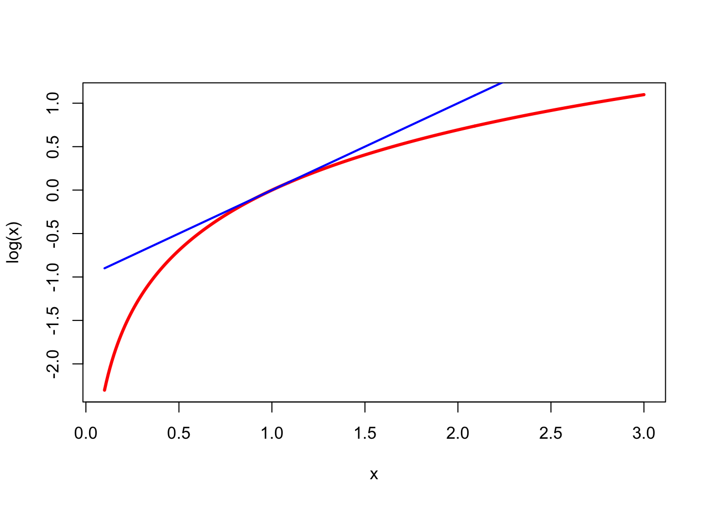
Note that the definition of majorization at a point always has to take the set \(\mathcal{X}\) into account. If \(g\) majorizes \(f\) over \(\mathcal{X}\) at \(y\), then it may very well not majorize over a larger set. But, of course, it does majorize \(f\) at \(y\) over any subset of \(\mathcal{X}\) containing \(y\).
In most of our examples and applications \(\mathcal{X}\) will be equal to \(\mathbb{R}\), \(\mathbb{R}^+\), or \(\mathbb{R}^n\) but in some cases we consider majorization over an interval or, more generally, a convex subset of \(\mathbb{R}^n.\) If we do not explicitly mention the set on which \(g\) majorizes \(f\), then we implicitly mean the whole domain of \(f\). But we’ll try to be as explicit as possible, because our treatment, unlike some earlier ones, does not just discuss majorization over the whole space where \(f\) is defined.
As an example, consider the cubic \(f:x\rightarrow\frac13 x^3-4x\) which is majorized at \(+1\) on the half-open interval \((-\infty,4]\) by the quadratic \(g: x\rightarrow\frac43-7x+2x^2\). This particular quadratic is constructed, by the way, by solving the equations \(f(1)=g(1), f'(1)=g'(1),\) and \(f(4)=g(4)\). On the other hand it is easy to see that a non-trivial cubic \(f\) cannot be majorized at any \(y\) by a quadratic \(g\) on the whole real line, because \(g-f\), which is again a non-trivial cubic, would have to be non-negative for all \(x,\) which is impossible.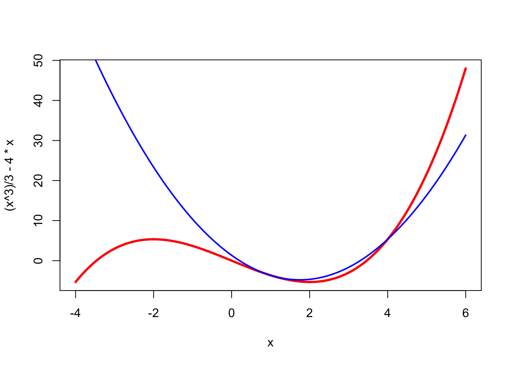
It follows directly from the definition that \(g\) majorizes \(f\) at \(y\) if and only if \(g-f\) has a global minimum over \(\mathcal{X}\), equal to zero, at \(y\). And majorization is strict if this minimum is unique. Thus a necessary and sufficient condition for majorization at \(y\in\mathcal{X}\) is \[ \min_{x\in\mathcal{X}}\ (g(x)-f(x))=g(y)-f(y)=0. \] Since a global minimum is also a local minimum, it follows that if \(g\) majorizes \(f\) at \(y\in\mathcal{X}\) then \(g-f\) has a local minimum , equal to zero, over \(\mathcal{X}\) at \(y\). This is a convenient necessary condition for majorization. A sufficient condition for \(g\) to majorize \(f\) at \(y\) is that \(g-f\) is a convex function with a minimum at \(y\) equal to zero. Because of convexity this minimum is then necessarily the global minimum.
If \(g\) majorizes \(f\) at \(y\in\mathcal{X}\) then the points \(y\in\mathcal{X}\) where \(g(y)=f(y)\) are called support points. If majorization is strict there is only one support point. There can, however, be arbitrarily many.
Consider \(f:x\rightarrow x^2-10\sin^2(x)\) and \(g:x\rightarrow x^2\). Then \(g\) majorizes \(f\) on the real line, with support points at all integer multiples of \(\pi\). This is illustrated in Figure 3.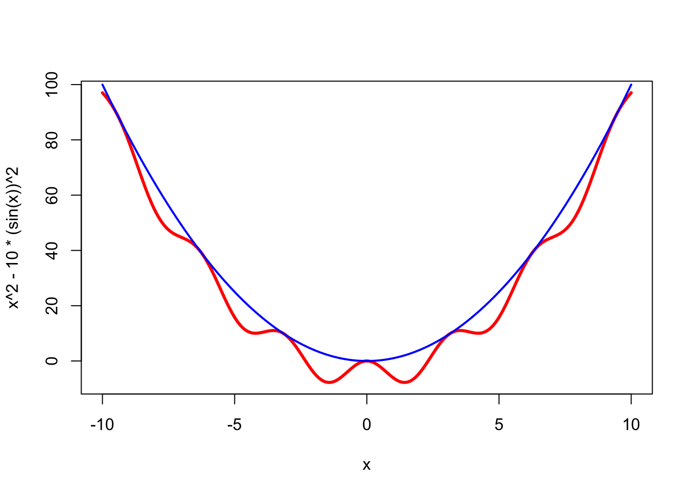
In fact if \(f:x\rightarrow\max(x,0)\) and \(g:x\rightarrow|x|\) then \(g\) majorizes \(f\) at all \(y\leq 0\), and thus there even is a continuum of support points. And actually \(f\) itself majorizes \(f\) at all \(y\in\mathcal{X}.\)
###Majorization on a Set
We can have different majorizations of \(f\) on \(\mathcal{X}\) at different points \(y_1,\cdots,y_n\in\mathcal{X}\). Now consider the situation in which we have a different majorization for each point \(y\in\mathcal{X}\).Suppose \(f\) is a real-valued function on \(\mathcal{X}\) and \(g\) is a real-valued function on \(\mathcal{X}\otimes\mathcal{X}\). We say that \(g\) is a majorization scheme for \(f\) on \(\mathcal{X}\) if
- \(g(x,y)\geq f(x)\) for all \(x,y\in\mathcal{X}\),
- \(g(y,y)=f(y)\) for all \(y\in\mathcal{X}\).
Majorization is strict if the first condition can be replaced by
- \(g(x,y)>f(x)\) for all \(x,y\in\mathcal{X}\) with \(x\not= y\).
Or, equivalently, if the second condition can be replaced by
- \(g(x,y)=f(x)\) if and only if \(x=y\).
We call \(g\) a majorization scheme for \(f\) on \(\mathcal{X}\), because \(g\) automatically gives a majorization for \(f\) for every \(y\in\mathcal{X}\). Thus a majorization of \(f\) on \(\mathcal{X}\) at \(y\) is a real-valued function \(g\) on \(\mathcal{X}\), a majorization scheme for \(f\) on \(\mathcal{X}\) is a real-valued function on \(\mathcal{X}\otimes\mathcal{X}\).
Because \(g(x,y)\geq g(x,x)=f(x)\) for all \(x,y\in\mathcal{X}\) we see that \[ f(x)=\min_{y\in\mathcal{X}}g(x,y) \] for all \(x\in\mathcal{X}\). Thus \(g\) majorizes \(f\) if and only if \(f(x)=\min_{y\in\mathcal{X}} g(x,y)\) and the minimum is attained for \(y=x.\) Strict majorization means the minimum is unique. It follows that the majorization relation between functions is a special case of the augmentation relation.
As an example of a majorization scheme for \(f:x\rightarrow -\log(1+\exp(-x))\) we use \[ g(x,y)=f(y)+f'(y)(x-y)+\frac18(x-y)^2. \] Also define the function \(h\) by \(h(x,y)=f(x)\).
Function \(g\) is plotted in figure 2.5 in blue, function \(h\) is in red.
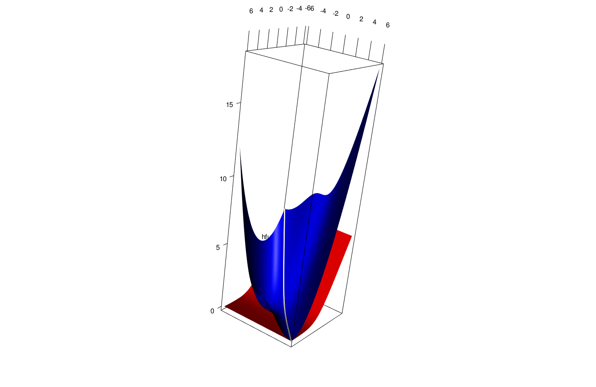
Figure 2.5: Majorization Scheme for log(1+exp(x))
Note that the intersection of the graph of both \(g\) and \(h\) with the diagonal vertical plane \(x=y\) is the set of \((x,y,z)\) such that \(x=y\) and \(z=g(x,x)=h(x,x)=f(x)\). This is the white line in the plot.
Graphs of the intersection of the graphs of \(g\) and \(h\) with the vertical planes \(y=c\) parallel to the \(x\)-axes at \(y=-5,-2,0,2,5\) are in Ffigure @ref(fig.interplanes). The red lines are the intersections with \(h\), i.e. the function \(f\), the blue lines are the quadratics majorizing \(f\) at \(y=-5,-2,0,2,5\).
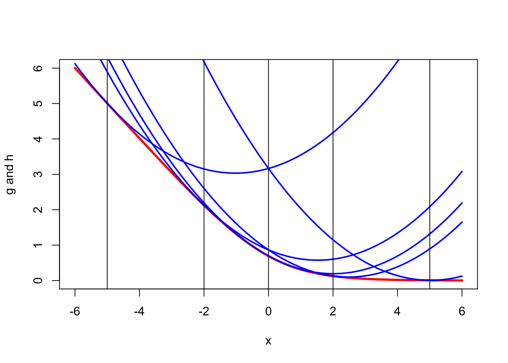
Figure 2.6: Intersections of \(g\) with \(y=c\) planes
Graphs of intersection of the graphs of \(g\) and \(h\) with the vertical planes \(x=c\) parallel to the \(y\)-axes at \(x=-5,-2,0,2,5\) are in figure @ref{fig.logitother}. They illustrate that \(\min_y g(x,y)=f(x)\). The horizontal red lines are the intersections of the planes \(x=c\) with the graph of \(h\) at \(f(-5),f(-2),f(0),f(2),\) and \(f(5)\).
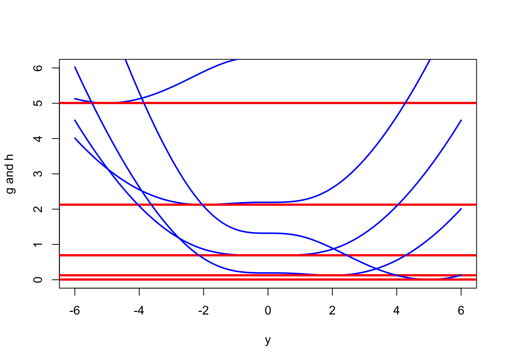
Figure 2.7: Intersections of \(g\) with \(x=c\) planes
logitcouple.R.
###Majorization Algorithm
The basic idea of a majorization algorithm is simple: it is the augmentation algorithm applied to the majorization function.
Suppose our current best approximation to the minimum of \(f\) is \(x^{(k)}\), and we have a \(g\) that majorizes \(f\) on \(\mathcal{X}\) in \(x^{(k)}\). If \(x^{(k)}\) already minimizes \(g\) we stop, otherwise we update \(x^{(k)}\) to \(x^{(k+1)}\) by minimizing \(g\) over \(\mathcal{X}\).
If we do not stop, we have the sandwich inequality \[ f(x^{(k+1)})\leq g(x^{(k+1)})<g(x^{(k)})=f(x^{(k)}), \] and in the case of strict majorization even \[ f(x^{(k+1)})<g(x^{(k+1)})<g(x^{(k)})=f(x^{(k)}). \]
We then select a new function \(g\) that majorizes \(f\) on \(\mathcal{X}\) at \(x^{(k+1)}\). Repeating these steps produces a decreasing sequence of function values, and the usual compactness and continuity conditions guarantee convergence of both sequences \(x^{(k)}\) and \(f(x^{(k)})\).
Here is an artificial example, chosen because of its simplicity. Consider \(f(x)=x^4-10x^2.\) Because \(x^2\geq y^2+2y(x-y)=2yx-y^2\) we see that \(g(x,y)=x^4-20yx+10y^2\) is a suitable majorization function. The majorization algorithm is \(x^{(k+1)}=\sqrt[3]{5x^{(k)}}.\)
The first iterations of the algorithm are illustrated in Figure 1. We start with \(x^{(0)}=3,\) where \(f\) is \(-9\). Then \(g(x,3)\) is the blue function. It is minimized at \(x^{(1)}\approx 2.4662,\) where \(g(x^{(1)},3)\approx -20.9795,\) and \(f(x^{(1)})\approx -23.8288.\) We then majorize by using the green function \(g(x,x^{(1)})\), which has its minimum at about \(2.3103,\) equal to about \(-24.6430.\) The corresponding value of \(f\) at this point is about \(-24.8861.\) Thus we are rapidly getting close to the local minimum at \(\sqrt{5}\approx 2.2361,\) with value \(-25.\) The linear convergence rate at the stationary point is \(\frac{1}{3}.\)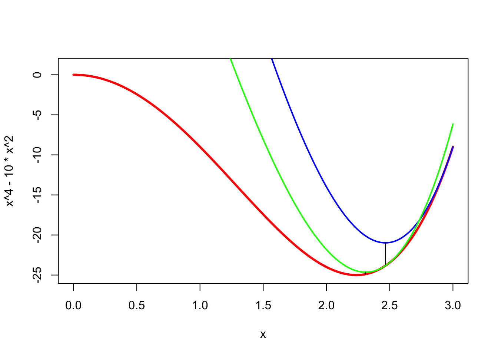
Table 1 show the iterations to convergence, with an estimate of the iteration radius in the last column.
## Iteration: 1 fold: -9.00000000 fnew: -23.82883884 xold: 3.00000000 xnew: 2.46621207 ratio: 0.00000000
## Iteration: 2 fold: -23.82883884 fnew: -24.88612919 xold: 2.46621207 xnew: 2.31029165 ratio: 0.32250955
## Iteration: 3 fold: -24.88612919 fnew: -24.98789057 xold: 2.31029165 xnew: 2.26054039 ratio: 0.32971167
## Iteration: 4 fold: -24.98789057 fnew: -24.99867394 xold: 2.26054039 xnew: 2.24419587 ratio: 0.33212463
## Iteration: 5 fold: -24.99867394 fnew: -24.99985337 xold: 2.24419587 xnew: 2.23877400 ratio: 0.33293027
## Iteration: 6 fold: -24.99985337 fnew: -24.99998373 xold: 2.23877400 xnew: 2.23696962 ratio: 0.33319896
## Iteration: 7 fold: -24.99998373 fnew: -24.99999819 xold: 2.23696962 xnew: 2.23636848 ratio: 0.33328854
## Iteration: 8 fold: -24.99999819 fnew: -24.99999980 xold: 2.23636848 xnew: 2.23616814 ratio: 0.33331840
## Iteration: 9 fold: -24.99999980 fnew: -24.99999998 xold: 2.23616814 xnew: 2.23610137 ratio: 0.33332836
## Iteration: 10 fold: -24.99999998 fnew: -25.00000000 xold: 2.23610137 xnew: 2.23607911 ratio: 0.33333167
## Iteration: 11 fold: -25.00000000 fnew: -25.00000000 xold: 2.23607911 xnew: 2.23607169 ratio: 0.33333278
## Iteration: 12 fold: -25.00000000 fnew: -25.00000000 xold: 2.23607169 xnew: 2.23606921 ratio: 0.33333315
## Iteration: 13 fold: -25.00000000 fnew: -25.00000000 xold: 2.23606921 xnew: 2.23606839 ratio: 0.33333327
## Iteration: 14 fold: -25.00000000 fnew: -25.00000000 xold: 2.23606839 xnew: 2.23606811 ratio: 0.33333331
## Iteration: 15 fold: -25.00000000 fnew: -25.00000000 xold: 2.23606811 xnew: 2.23606802 ratio: 0.33333333We also show the cobwebplot (see section 14.11.2) for the iterations, which illustrates the decrease of the difference between subsequent iterates.
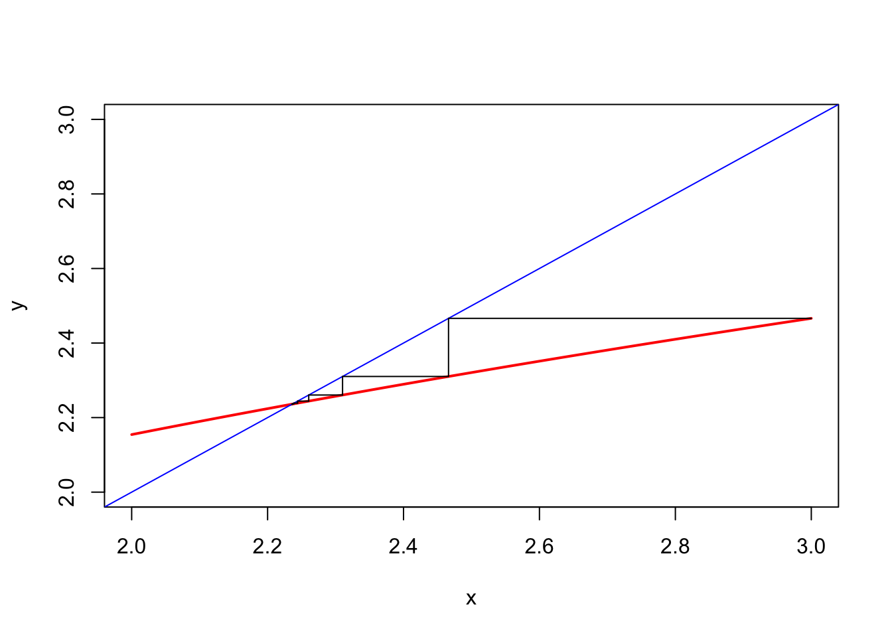
###Alternative Definitions
Suppose \(f\) and \(g\) are arbitrary real-valued functions on \(\mathcal{X}\). Define \[\begin{align*} \mathcal{S}_-(f,g):=&\{x\in\mathcal{X}\mid f(x)\leq g(x)\},\\ \mathcal{S}_0(f,g):=&\{x\in\mathcal{X}\mid f(x)=g(x)\}. \end{align*}\] Thus \(\mathcal{S}_0(f,g)\subseteq\mathcal{S}_-(f,g).\) Then if \[\begin{align*} x&\in\mathcal{S}_0(f,g),\\ y&\in\mathop{\mathbf{argmin}}_{x\in\mathcal{S}_-(f,g)}g(x), \end{align*}\] we have \[ f(y)\leq g(y)\leq g(x)=f(x). \]
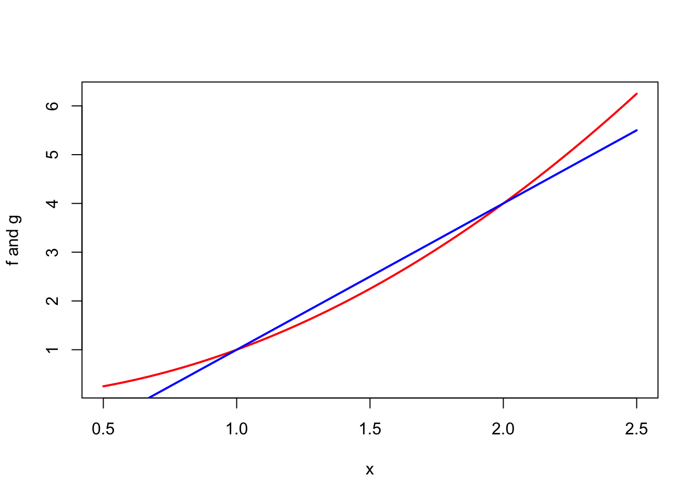
##Relatives
###The Concave-Convex Procedure
The Concave-Convex Procedure (CCCP) was first proposed by Yuille and Rangarajan (2003). Its global convergence was studied using the Zangwill theory by Sriperumbudur and Lanckriet (2012), and its rate of convergence using block relaxation theory by Yen et al. (2012). The CCCP was discussed in a wider optimization context by Lipp and Boyd (2015).
The starting point of Yuille and Rangarajan, in the context of energy functions for discrete dynamical systems, is the decomposition of a function \(f\) with bounded Hessian into a sum of a convex and a concave function. As we shall show in section 9.2.1 on differences of convex functions any function on a compact set with continuous second derivatives can be decomposed in this way. If \(f=u+v\) with \(u\) convex and \(v\) concave, then the CCCP is the algorithm \[ \mathcal{D}u(x^{(k+1)})=-\mathcal{D}v(x^{(k)}). \] Now, by tangential majorization, \(f(x)\leq g(x,y)\) with \[ g(x,y) = u(x)+v(y)+(x-y)'\mathcal{D}v(y). \] The function \(g\) is convex in \(x\), and consequently the majorization algorithm in this case is exactly the CCCP.
###Generalized Weiszfeld Methods
We discuss Weiszfeld’s algorithm for the single facility location problem, or equivalently for the spatial median problem, in section 7.3.2. But, in an important early article, Voss and Eckhardt (1980) pointed out that Weiszfeld’s algorithm is a member of a much more general class of algorithms, whch they called Generalized Weiszfeld Methods.
The problem Voß and Eckhardt consider is to minimize a twice continuously differentiable \(f\) over a polyhedron \(\mathcal{X}\subseteq\mathbb{R}^n\), defined by a number of linear inequalities. They assume that \(f\) is bounded from below on \(\mathcal{X}\) and that the sublevel sets \(\{x\mid f(x)\leq\gamma\}\) have a empty of bounded intersection with \(\mathcal{X}\). They define the quadratic approximation \[ g(x,y)=f(y)+(x-y)'\mathcal{D}f(y)+\frac12(x-y)'A(y)(x-y) \] for which they assume that \(g(x,y)\geq f(x)\) for all \(x\in\mathcal{X}.\) In addition the spectral norm \(\|A(y)\|\) is must be bounded from above on \(\mathcal{X}\) by \(A_\infty\), and the smallest eigenvalue of \(A(y)\) must be bounded from below on \(\mathcal{X}\) by a positive number \(\gamma_0\). Their algorithm is \[ x^{(k+1)}=\mathop{\mathbf{argmin}}\limits_{x\in\mathcal{X}} g(x,x^{(k)}). \]
This, of course, is a majorization algorithm. In fact, it is an example of the quadratic mjaorization algorithms we discuss in detail in chapter 10. Voß and Eckhardt proceed to prove global convergence, which actually follows directly from Zangwill’s theory, and local linear convergence, which follows from Ostrowski’s theorem.
###The EM Algorithm
###The Lower-Bound Principle
2.4.2 Dinkelbach Majorization
Suppose \(f\) is defined on \(X\) and \(g\) on \(X\otimes X\). Then we say that \(g\) G-majorizes \(f\) at \(y\in X\) if \[\begin{align*} f(x)&\leq g(x,y),\\ f(y)&= g(y,y), \end{align*}\] We say that \(g\) G-majorizes \(f\) on \(X\) if it majorizes \(f\) for each \(y\in X\).
Suppose \(f\) is defined on \(X\) and \(h\) on \(X\otimes X\). Then we say that \(h\) H-majorizes \(f\) at \(y\in X\) if \[\begin{align*} f(x)-f(y)&\leq h(x,y),\\ h(y,y)&=0. \end{align*}\]
Theorem: If \(h\) H-majorizes \(f\) at \(y\), then \(g\) defined by \(g(x,y)=f(y)+h(x,y)\) G-majorizes \(f\) at \(y\). Conversely, if \(g\) G-majorizes \(f\) at \(y\), then \(h\) defined by \(h(x,y)=g(x,y)-f(y)\) H-majorizes \(f\) at \(y\).
Suppose \(f\) is defined on \(X\) and \(h\) on \(X\otimes X\). Then we say that \(h\) D-majorizes \(f\) at \(y\in X\) if \[\begin{align*} h(x,y) < 0 &\Rightarrow f(x)<f(y),\\ h(y,y)&=0. \end{align*}\]
Theorem If \(h\) H-majorizes \(f\) at \(y\), then \(h\) D-majorizes \(f\) at \(y\).
The difference between D-majorization and H-majorization is that if \(h(x,y)>0\) we can have \(f(x)-f(y)>h(x,y)\).
Quick note: D-majorization is also \[ g(x,y)=f(y)+h(x,y)<f(y)=g(y,y)\Rightarrow f(x)<f(y) \]
If \(f(x)=a(x)/b(x)\), with \(b(x)>0\) for all \(x\in X\), then \(h(x,y)=a(x)-f(y)b(x)\) D-majorizes \(f(x)\) at \(y\).
##Further Results
###Rate of Convergence
Majorization is a special case of our results for augmentation previous theory, because \(\mathcal{X}=\mathcal{Y}\) and because \(y(x)=x\).
This implies that \(\mathcal{D}_2(x,x)=0\) for all \(x,\) and consequently \(\mathcal{D}_{12}=-\mathcal{D}_{22}.\) Thus \(\mathcal{M}(x)=-\mathcal{D}_{11}^{-1}\mathcal{D}_{12}^{\ }.\)
Again, to some extent, finding a majorization function is an art. Many of the classical inequalities can be used (Cauchy-Schwarz, Jensen, H"older, Young, AM-GM, and so on).
###Univariate and Separable Functions
Many of our examples are majorizations of a real-valued function \(f\) of a single real variable over the real line \(\mathbb{R}.\) This is partly for mathematical convenience, because many results are simpler in the univariate case. And partly for didactic reasons, because plots and tables are more easy to visualize and interpret.
As pointed out by J. De Leeuw and Lange (2009) looking at the univariate case is obviously restrictive, but not as restrictive as it seems. Many of the functions in optimization and statistics are separable, which means they are of the form \[ f(x)=\sum_{i=1}^n f_i(x_i), \] and majorizing each of the univariate \(f_i\) gives a majorization of \(f\). Note that if \(f(x)=\prod_{i=1}^n f_i(x)\), where the \(f_i\) are positive, can be turned into a separable problem by taking logarithms.
In addition it is often possible to majorize a non-separable function by a separable one. Suppose, for example, that \[ f(x)=\frac12\sum_{i=1}^n\sum_{j=1}^n w_{ij}f_i(x_i)f_j(x_j), \] where \(W=\{w_{ij}\}\) is positive semi-definite. Suppose we can find a diagonal \(D\) such that \(W\lesssim D\) then for any two vectors \(u\) and \(v\) in \(\mathbb{R}^n\)
\[\begin{multline*} u'Wu=(v+(u-v))'W(v+(u-v))\leq \\v'Wv+(u-v)'Wv+(u-v)'D(u-v)=\\ (u-z)'D(u-z)+v'(W-WD^{-1}W)v, \end{multline*}\]
where \(z\mathop{=}\limits^{\Delta}(I-D^{-1}W)v.\) Thus \[ f(x)\leq\frac12\sum_{i=1}^n d_i(f_i(x)-z_i(y))^2+ \frac12\sum_{i=1}^n\sum_{j=1}^nh_{ij}f_i(y)f_j(y), \] with \(H\mathop{=}\limits^{\Delta}W-WD^{-1}W.\) The majorizer we have constructed is separable.
###Differentiable Functions
We first show that differentiable majorizations of differentiable functions must have certain properties at the support point.Theorem: Suppose \(f\) and \(g\) are differentiable at \(y\). If \(g\) majorizes \(f\) at \(y\), then
- \(g(y)=f(y)\),
- \(g'(y)=f'(y)\),
If \(f\) and \(g\) are twice differentiable at \(y\), then in addition
- \(g''(y)\geq f''(y)\),
and if \(g\) majorizes \(f\) strictly
- \(g''(y)>f''(y)\).
The conditions in the theorem are only necessary because they are local, they only say something about the value of \(g\) and its derivatives at \(y\). But majorization is a global relation to make global statements we need conditions like convexity. We already know that if \(g-f\) is convex with a minimum at \(y\) equal to zero, then \(g\) majorizes \(f\) at \(y\). For differentiable \(f\) and \(g\) this means that if \(f-g\) is convex then \(g\) majorizes \(f\) at \(y\) if and only if \(f(y)=g(y)\) and \(f'(y)=g'(y)\). And for twice-differentiable \(f\) and \(g\) with \(f''(x)\geq 0\) for all \(x\) again \(g\) majorizes \(f\) at \(y\) if and only if \(f(y)=g(y)\) and \(f'(y)=g'(y)\).
In the case of majorization at a single \(y\) we have \(f'(y)=g'(y)\) for differentiable functions. If \(g\) majorizes \(f\) on \(\mathcal{Y}\subseteq\mathcal{X}\) then \(g(x,y)-f(x)\geq 0\) for all \(x\in\mathcal{X}\) and all \(y\in\mathcal{Y}\). Thus \[ 0=g(y,y)-f(y)=\min_{x\in\mathcal{X}}g(x,y)-f(x) \] for each \(y\in\mathcal{Y}\). In addition \[ f(x)=g(x,x)=\min_{y\in\mathcal{Y}}g(x,y). \]In the case of majorization at a single \(y\) we had \(f'(y)=g'(y)\) for differentiable functions. In general the function \(f\) defined by \(f(x)=\min_{y\in\mathcal{Y}} g(x,y)\) is not differentiable. If the partials \(\mathcal{D}_1g\) are continuous then the derivative at \(x\) in the direction \(z\) satisfies \[ df_z(x)=\min_y\{z'D_1g(x,y)\mid f(x)=g(x,y)\}. \] In the case of strict majorization this gives \[ \mathcal{D}f(x)=\mathcal{D}_1g(x,x). \]
Theorem can be generalized in many directions if differentiability fails. If \(f\) has a left and right derivatives in \(y\), for instance, and \(g\) is differentiable, then \[ f'_R(y)\leq g'(y)\leq f'_L(y). \]
If \(f\) is convex, then \(f'_L(y) \leq f'_R(y)\), and \(f'(y)\) must exist in order for a differentiable \(g\) to majorize \(f\) at \(y\). In this case \(g'(y)=f'(y)\).
For nonconvex \(f\) more general differential inclusions are possible using the four Dini derivatives of \(f\) at \(y\) [see, for example, McShane, 1944, Chapter V].
Locally Lipschitz functions, Proximinal and Frechet and Clarke subgradients, sandwich and squeeze theorems
One-sided Chebyshev. Find \(g\in\mathcal{G}\) such that \(g\geq f\), \(g(y)=f(y)\) and \(\sup_x|g(x)-f(x)|\) is minimized. For instance \(\mathcal{G}\) can be the convex functions, or the polynomials of a certain degree, or piecewise linear functions or splines.
###Composition
Theorem: [Sum of functions] Suppose \(h\) is defined on \(\mathcal{X}\otimes\mathcal{U}\) and \(f(x)=\int_U h(x,u)dF(u)\). Suppose \(k\) is defined on \(\mathcal{X}\otimes\mathcal{X}\otimes\mathcal{U}\) and satisfies \[ h(x,u)=k(x,x,u)=\min_{y\in\mathcal{X}} k(x,y,u) \] for all \(x\in\mathcal{X}\) and \(u\in\mathcal{U}\). Then \(g\) defined by \[ g(x,y)=\int_U k(x,y,u)dF(u) \] satisfies \[ f(x)=\min_{y\in\mathcal{X}} g(x,y) \]
Proof: \(h(x,u)=k(x,x,u)\leq k(x,y,u)\). Integrate to get \(f(x)=g(x,x)\leq g(x,y)\). QEDTheorem: [Inf of functions] Suppose \(f=\inf_{u} v(\bullet,u)\) and let \(X(u)=\{x|f(x)=v(x,u)\}\). Suppose \(y\in X(u)\) and \(g\) majorizes \(v(\bullet,u)\) at \(y\). Then \(g\) majorizes \(f\) at \(y\).
Proof: \(g(x)\geq v(x,u)\geq\inf_{u} v(x,u)=f(x)\), and because \(y\in X(u)\) also \(g(y)=v(y,u)=f(y)\). QEDObserve the theorem is not true for \(sup\), and also we cannot say that if \(w(\bullet,u )\) majorizes \(v(\bullet,u)\) for all \(u\) at \(y\), then \(g=\inf_{u} w(\bullet,u)\) majorizes \(f\) at \(y\).
Theorem: [Composition of functions] If \(g\) majorizes \(f\) at \(y\) and \(\gamma:\mathbb{R}\rightarrow \mathbb{R}\) is non-decreasing, then \(\gamma\circ g\) majorizes \(\gamma\circ f\) at \(y\). If, in addition, \(\gamma\) majorizes the non-decreasing \(\eta:\mathbb{R}\rightarrow \mathbb{R}\) at \(g(y)\), then \(\gamma\circ g\) majorizes \(\eta\circ f\).
Proof: \(g(x)\geq f(x)\) and thus \(\gamma(g(x))\geq\gamma(f(x))\). Also \(g(y)=f(y)\) and thus \(\gamma(g(y))=\gamma(f(y))\). For the second part we have \(\gamma(g(x))\geq\eta(g(x))\geq\eta(f(x))\) and \(\gamma(g(y))=\eta(g(y))=\eta(f(y))\). QEDTheorem: Suppose \(f=\min_{k} f_{k}\) and let \(S_{i}\) be the set where \(f=f_{i}\). If \(y\in S_{i}\) and \(g\) majorizes \(f_{i}\) at \(y\), then \(g\) majorizes \(f\) at \(y\).
Proof: First \(g(x)\geq f_{i}(x)\geq\min_{k} f_{k}(x)=f(x)\). Because \(y\in S_{i}\) also \(g(y)=f_{i}(y)=f(y)\). QEDThis implies that if \(f=\min_{k} f_{k}\) has a quadratic majorizer at each \(y\), if each of the \(f_{k}\) has a quadratic majorizer at each \(y\).
###Majorization Duality
Because \(g(x,y)\geq g(x,x)=f(x)\) for all \(x,y\in\mathcal{X}\) we have seen that \[ f(x)=\min_{y\in\mathcal{X}}g(x,y) \] for all \(x\in\mathcal{X}\). Thus \[ \min_{x\in\mathcal{X}}f(x)=\min_{x\in\mathcal{X}}\min_{y\in\mathcal{X}}g(x,y)=\min_{y\in\mathcal{X}}h(y). \] where \[ h:y\rightarrow \min_{x\in\mathcal{X}}g(x,y). \]
Suppose, for example, that our majorization on \(\mathcal{X}\) is of the form \[ g(x,y)=f(y)+(x-y)'\mathcal{D}f(y)+\frac12(x-y)'A(y)(x-y), \] with \(A(y)\) positive definite for all \(y\). This can be rewritten as \[\begin{align*} g(x,y)&=f(y)-\frac12(\mathcal{D}f(y))'A^{-1}(y)\mathcal{D}f(y)+\\ &+(x-z(y))'A(y)(x-z(y)), \end{align*}\] with \(z(y)\mathop{=}\limits^{\Delta}y-A^{-1}(y)\mathcal{D}f(y)\), and thus \[\begin{align*} h(y)=\min_{x\in\mathcal{X}}g(x,y)&=f(y)-\frac12(\mathcal{D}f(y))'(A(y))^+\mathcal{D}f(y)+\\&+\min_{x\in\mathcal{X}}(x-z(y))'A(y)(x-z(y)). \end{align*}\]
###Necessary Conditions by Majorization
Suppose \(g\) on \(\mathcal{X}\otimes\mathcal{X}\) majorizes \(f\) on \(\mathcal{X}\). We show that a necessary condition for \(\hat x\) to be a minimizer of \(f\) on \(\mathcal{X}\) is that \(\hat x\) minimizes the majorization function \(g(\bullet,\hat x)\) on \(\mathcal{X}\).
Theorem: If \[ \hat x\in\mathbf{Arg}\mathop{\mathbf{min}}\limits_{x\in\mathcal{X}}f(x), \] then \[ \hat x\in\mathbf{Arg}\mathop{\mathbf{min}}\limits_{x\in\mathcal{X}}g(x,\hat x). \]
Proof: Suppose \(\overline x\in\mathcal{X}\) is such that \(g(\overline x,\hat x)<g(\hat x,\hat x).\) Then \[ f(\overline x)\leq g(\overline x,\hat x)< g(\hat x,\hat x)=f(\hat x), \] which contradicts that \(\hat x\) minimizes \(f\). QED
As an example, suppose that we have a quadratic majorization of the form \[ f(x)\leq f(y)+ (x-y)'\mathcal{D}f(y)+\frac12(x-y)'A(x-y), \] with \(A\) positive definite. If \(\hat x\) minimizes \(f\) over \(\mathcal{X}\), then we must have \[ \hat x\in\mathbf{Arg}\mathop{\mathbf{min}}\limits_{x\in\mathcal{X}}\ (x-\hat z)'A(x-\hat z), \] with \(\hat z\mathop{=}\limits^{\Delta}\hat x-A^{-1}\mathcal{D}f(\hat x)\). Thus \(\hat x\) must be the weighted least squares projection of \(\hat z\) on \(\mathcal{X}\). If \(\mathcal{X}\) is all of \(\mathbb{R}^n\) then we must have \(\hat x=\hat z\), which means \(\mathcal{D}f(\hat x)=0\).
For a concave function \(f\) on a bounded set we have \(g(x,y)=f(y)+(x-y)'\mathcal{D}f(y)\), and thus the necessary condition for a minimum is \[ \hat x\in\mathbf{Arg}\mathop{\mathbf{min}}\limits_{x\in\mathcal{X}}x'\mathcal{D}f(\hat x). \]
###Majorizing Constraints
Consider the nonlinear programming problem of minimizing \(f_0\) over \(x\in\mathcal{X}\) under the functional constraints \(f_i(x)\leq 0\) for \(i=1,\cdots,n\).
Suppose \(g_i\) majorizes \(f_i\) on \(\mathcal{X}\). Consider the algorithm \[ x^{(k+1)}\in\mathop{\mathbf{argmin}}\limits_{x\in\mathcal{X}}\{g_0(x,x^{(k)})\mid g_i(x,x^{(k)})\leq 0\}. \] Lipp and Boyd [2014] propose this algorthm for the case in which the \(f_i\) are DC (differences of convex functions), as a generalization of the Convex-Concave procedure of II.1.3.2. We show the algorithm is stable. Remember that \(x\in\mathcal{X}\) is feasible if it satisfies the functional constraints.
Result: If \(x^{(k)}\) is feasible, then \(x^{(k+1)}\) is feasible and \(f_0(x^{(k+1)})\leq f_0(x^{(k)})\).
Proof: By majorization, for \(i=1,\cdots,n\) we have \[ f_i(x^{(k+1)})\leq g_i(x^{(k+1)},x^{(k)})\leq 0. \] Second, the sandwich inequality says \[ f_0(x^{(k+1)})\leq g_0(x^{(k+1)},x^{(k)})\leq g_0(x^{(k)},x^{(k)})=f_0(x^{(k)}). \] QED
Note that it may not be necessary to majorize all functions \(f_i\). Or, in other words, for some we can choose the trivial majorization \(g_i(x,y)=f_i(x)\).
###Majorizing Value Functions
Suppose \(f(x)=\max_{y\in\mathcal{Y}} g(x,y)\) and \(g(x,y)=\min_{z\in\mathcal{X}} h(x,y,z)\), i.e. \(h(x,y,z)\geq g(x,y)\) for all \(x,z\in\mathcal{X}\) and \(y\in\mathcal{Y}\) and \(h(x,y,x)=g(x,y)\) for all \(x\in\mathcal{X}\) and \(y\in\mathcal{Y}\). Then, by weak duality, \[ f(x)=\max_{y\in\mathcal{Y}}\min_{z\in\mathcal{X}} h(x,y,z)\leq\min_{z\in\mathcal{X}}\max_{y\in\mathcal{Y}} h(x,y,z)=\min_{z\in\mathcal{X}} k(x,z), \] where \[ k(x,z)\mathop{=}\limits^{\Delta}\max_{y\in\mathcal{Y}}h(x,y,z). \] Note that \[ k(x,x)=\max_{y\in\mathcal{Y}}h(x,y,x)=\max_{y\in\mathcal{Y}}g(x,y)=f(x), \] which means that actually \[ f(x)=\min_{z\in\mathcal{X}} k(x,z) \] and thus \(k\) majorizes \(f\) in \(z\).Note: See how the following fits in 03/07/15. Or does it ?
Suppose the problem we want to solve is minimizing \(g(x,y)\) over \(x\in X\) and \(y\in Y\). If both minimizing \(g(x,y)\) over \(x\in X\) for fixed \(y\in Y\) and minimizing \(g(x,y)\) over \(y\in Y\) for fixed \(x\in X\) is easy, then we often use block-relaxation, alternating the two conditional minimization problems until convergence.
But now suppose only one of the two problems, say minimizing \(g(x,y)\) over \(y\in Y\) for fixed \(x\in X\), is easy. Define \[ f(x)=\min_{y\in Y} g(x,y) \] and let \(y(x)\) be any \(y\in Y\) such that \(f(x)=g(x,y(x))\).
Suppose we have a majorizing function \(h(x,z)\) for \(f(x)\). Thus \[\begin{align*} f(x)&\leq h(x,z)\qquad\forall x,z\in X,\\ f(x)&= h(x,x)\qquad\forall x\in X. \end{align*}\] Suppose our current best solution for \(x\) is \(\tilde x\), with corresponding \(\tilde y=y(\tilde x)\). Let \(x^+\) be any minimizer of \(h(x,\tilde x)\) over \(x\in X\). Now \[ g(x^+,y(x^+))=f(x^+)\leq h(x^+,\tilde x)\leq h(\tilde x,\tilde x)=f(\tilde x)=g(\tilde x,y(\tilde x)) \] which means that \((x^+,y(x^+))\) gives a lower loss function value than \((\tilde x,y(\tilde x))\). Thus we have, under the usual conditions, a convergent algorithm.Note: See how the following fits in 03/13/15. Or does it ?
Suppose \(g(x)=\min_{y\in\mathcal{Y}}f(x,y)\) and \(f(x,y)=\min_{z\in\mathcal{X}}h(x,z,y)\). Define \(k(x,z)\mathop{=}\limits^{\Delta}\min_{y\in\mathcal{Y}}h(x,z,y)\). Then \[ g(x)=\min_{y\in\mathcal{Y}} f(x,y)=\min_{y\in\mathcal{Y}}\min_{z\in\mathcal{X}}h(x,z,y)=\min_{z\in\mathcal{X}}\min_{y\in\mathcal{Y}}\min_{z\in\mathcal{X}}h(x,z,y)=\min_{z\in\mathcal{X}}k(x,z). \] \[ k(x,x)=\min_{y\in\mathcal{Y}}h(x,x,y)=\min_{y\in\mathcal{Y}}f(x,y)=g(x) \] Not necessary that \(\mathcal{Y}=\mathcal{X}\). Only \(h\) has to majorize \(f\) for \(k\) to majorize, \(f\) can be anything. This may be in the composition section.
##Some Examples
###The Reciprocal
Minimizing the function \(f(x)=ax-\log(x)\), where \(a>0\) is a constant, over \(x>0\) is trivial. The first and second derivatives of \(f\) are \[ f'(x)=a-\frac{1}{x}, \] and \[ f''(x)=\frac{1}{x^2}. \] We see from \(f''(x)>0\) that \(f\) is strictly convex on the positive reals. It has its unique minimum for \(a-1/x=0\), i.e. for \(x=1/a\), and the minimum value is \(1+\log(a)\).
Thus iterative algorithms to minimize the function, which can also be thought of as iterative algorithms to compute the reciprocal of a positive number \(a\), are of little interest in themselves. But it is of some interest to compare various algorithms, such as different majorization methods, in terms of robustness, speed of convergence, and so on.
Here are plots of the function \(f\) for \(a=1/3\) and for \(a=3/2\).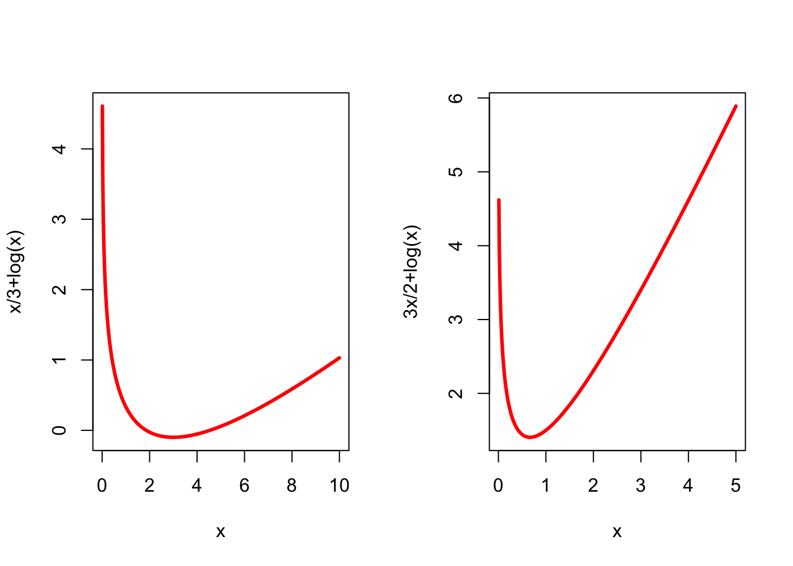
Because \(-\log(x)=\log(1/x)\) the concavity of the logarithm shows that \[ \log(\frac{1}{x})\leq\log(\frac{1}{y})+y\left(\frac{1}{x}-\frac{1}{y}\right), \] or \[ -\log(x)\leq-\log(y)+\frac{y}{x}-1. \] Thus \[ g(x,y)=ax-\log(y)+\frac{y}{x}-1 \] majorizes \(f\), and minimizing the majorizer gives the very simple algorithm \[ x^{(k+1)}= \sqrt{\frac{x^{(k)}}{a}}. \] The derivative of the update function \(h(x)\mathop{=}\limits^{\Delta}\sqrt{x/a}\) at \(1/a\) is \(1/2\). Thus our majorization iterations have linear convergence, with ratio \(1/2\). If \(x^{(0)}<1/a\) the algorithm generates an increasing sequence converging to \(1/a\). If \(x^{(0)}>1/a\) we have a decreasing sequence converging to \(1/a\). Because \(ax^{(k+1)}=\sqrt{ax^{(k)}}\) we have the explicit expression \[ x^{(k)}=a^{\left(\frac{1}{2^k}-1\right)}\left(x^{(0)}\right)^{\left(\frac{1}{2^k}\right)}. \]
Here we show the majorization for \(a=3/2\) and \(y\) equal to \(1/10, 1\) and \(3/2\).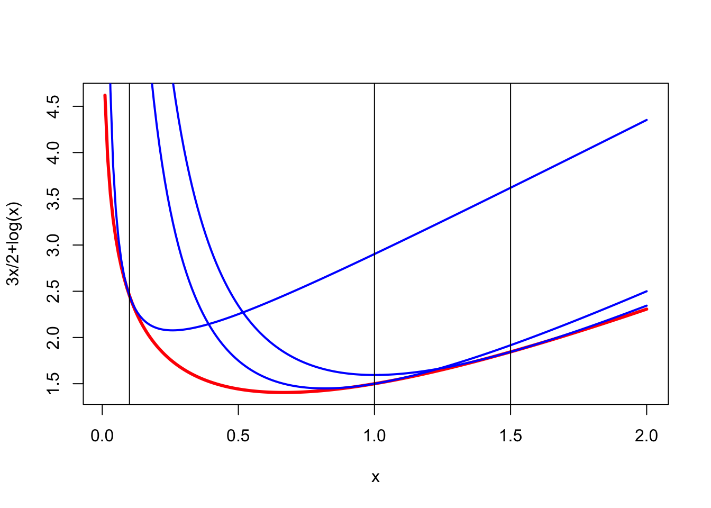
###Cubics and Quartics
Suppose \(f\) is a cubic, which is non-trivial in the sense that its third derivative is non-zero. Thus \(f\) has no minimum or maximum, because it is unbounded below and above. This immediately shows there can be no linear or quadratic majorizer \(g\) of \(f\), because if there was then \(g-f\) would be a non-trivial cubic, which does not have a minimum.
For a quadratic \(g\) to majorize a non-trivial quartic \(f\) at \(y\) we must have
\[\begin{multline*} f(y)+f'(y)(x-y)+\frac12f''(y)(x-y)^2+\frac16f'''(y)(x-y)^3+\frac{1}{24}f^{iv}(x-y)^4\leq\\ f(y)+f'(y)(x-y)+\frac12c(x-y)^2, \end{multline*}\]
for all \(x\). Of course \(f^{iv}(y)\) is a constant, independent of \(y\), for a quartic. This can be written as \(\frac12(x-y)^2q(x)\leq 0\) for all \(x\), where \[ q(x)\mathop{=}\limits^{\Delta}(f''(y)-c)+\frac13f'''(y)(x-y)+\frac{1}{12}f^{iv}(y)(x-y)^2. \] If \(f^{iv}>0\) no quadratic majorization exists. If \(f^{iv}<0\) we complete the square to \[ q(x)=\frac{1}{12}f^{iv}\left(x-y+2\frac{f'''(y)}{f^{iv}}\right)^2+\left(f''(y)-\frac13\frac{(f'''(y))^2}{f^{iv}}-c\right), \] and see we must have \[ c\geq c(y)\mathop{=}\limits^{\Delta}f''(y)-\frac13\frac{(f'''(y))^2}{f^{iv}}. \]
Example 1: In our first example we use the polynomial \(f(x)=1+5x+5x^2-5x^3-6x^4\), and we show quadratic majorizers using \(c=c(y)\) for \(y\) equal to \(-.75, -.25, +.25,\) and \(+.75\).
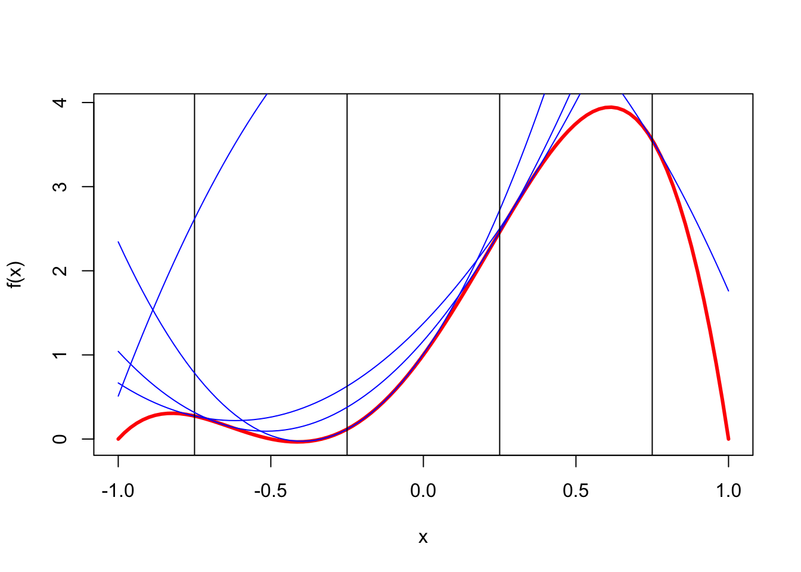
Note that the quadratic majorizer for \(y=.75\) is concave, which means it does not have a minimum and we cannot carry out a majorization step. All four majorizers have two support points, one at \(y\) and the other at \(y-2\frac{f'''(y)}{f^{iv}(y)}\), which is the solution of \(q(x)=0\) if \(c=c(y)\). The
R code for drawing the figures is in quarticCubicMe.R. Note the function quarticCubicMe does not return anything, it is merely used for its graphical side effects.
The majorization algorithm corresponding to our quadratic majorization is \[ x^{(k+1)}=x^{(k)}-\frac{f'(x^{(k)})}{c(x^{(k)})}. \] If it converges to a stationary point at \(x\) with \(f'(x)=0\) and \(f''(x)\geq 0\) then the iteration radius is \[ \kappa(x)=1-\frac{f''(x)}{c(x)}. \] Note that in the quartic case both \(f''\) and \(c\) are quadratics, so the convergence rate \(\lambda\) is a ratio of two quadratics. If \(f''(x)>0\) and \(f'''(x)\not= 0\) then \(0<\lambda(x)<1\). If \(f'''(x)=0\) then \(\lambda(x)=0\) and we have superlinear convergence. If \(f''(x)=0\) and \(f'''(x)\not= 0\) we have \(\lambda(x)=1\) and convergence is sublinear.
Example 2: We illustrate this with the quartic \[ f(x)=+\frac56 x+\frac34 x^2+\frac16 x^3-\frac{1}{24}x^4 \] which has both \(f'(-1)=0\) and \(f''(-1)=0\). Quadratic majorizers are shown in Figure 2.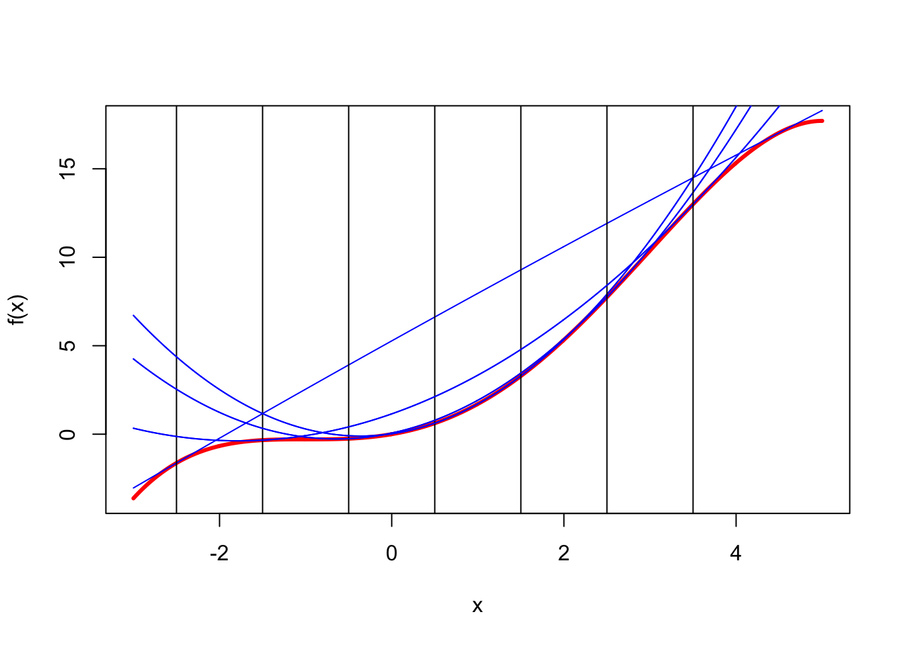
The iterative majorization algorithm in itQuartic.R, which stops if we have reached a solution to within 1e-10, has not converged after 100,000 iterations.
Iteration: 100000 xold: -0.99998667 xnew: -0.99998667 fold: -0.29166667 fnew: -0.29166667 lbd: 0.99998000
$x
[1] -0.9999867
$lbd
[1] 0.99998Example 3: The next quartic has \(f'(1)=0\) and \(f'''(1)=0\). This implies that \(f(1+x)=f(1-x)\) for all \(x\), which in turn implies that quadratic majorizers using \(c=c(y)\) have their minima or maxima at 1. We identify the polynomial by requiring \(f(0)=0\), \(f''(1)=1\) and \(f^{iv}(1)=1\). This gives \[ f(x)=-\frac56 x+\frac14 x^2+\frac16 x^3-\frac{1}{24} x^4. \] Quadratic majorizers are in Figure 3.
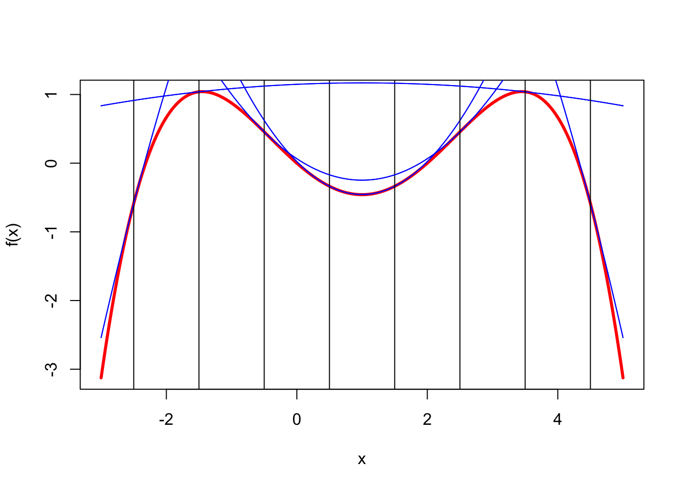
In this case the majorization algorithm converges to the solution \(x=1\) in a single iteration, no matter where we start. This is true even if the quadratic is concave, because then the update actually goes to the maximum of the majorizing quadratic (which means that, strictly speaking, we do not make a majorization step).
If we want to majorize a quartic \(f\) by a cubic \[ g(x)=f(y)+f'(y)(x-y)+\frac12 c(x-y)^2+\frac16 d(x-y)^3, \] then we can use the same reasoning as before to come up with \[ c\geq c_d(y)\mathop{=}\limits^{\Delta}f''(y)-\frac13\frac{(f'''(y)-d)^2}{f^{iv}}. \] In each iteration we have to minimize the cubic \(g\) over \(x\). This needs to be qualified, of course, because the cubic does not have a minimum. So we modify the rule to choosing the local minimum of the cubic, if there is one. Differentiating the implicit function for the update \(x^+\) gives \[ \mathcal{D}x^+(y)=1-\frac{f''(y)}{c+d(x^+(y)-y)}, \] and thus at a fixed point \(x\) the iteration radius, using \(c=c_d(y)\), it is \[ \lambda(x)=1-\frac{f''(x)}{c_d(x)}. \] We have fast convergence if \(d\) is close to \(f'''(x)\), and superlinear convergence if \(d=f'''(x)\).
Example 4: In Figure 4 we use the quartic \(1+5x+5x^2-5x^3-6x^4\) again to illustrate cubic majorization with \(d\) cleverly chosen to be \(f'''(x_\infty)\). The cubic majorization functions are much closer than the quadratic ones in Figure 1.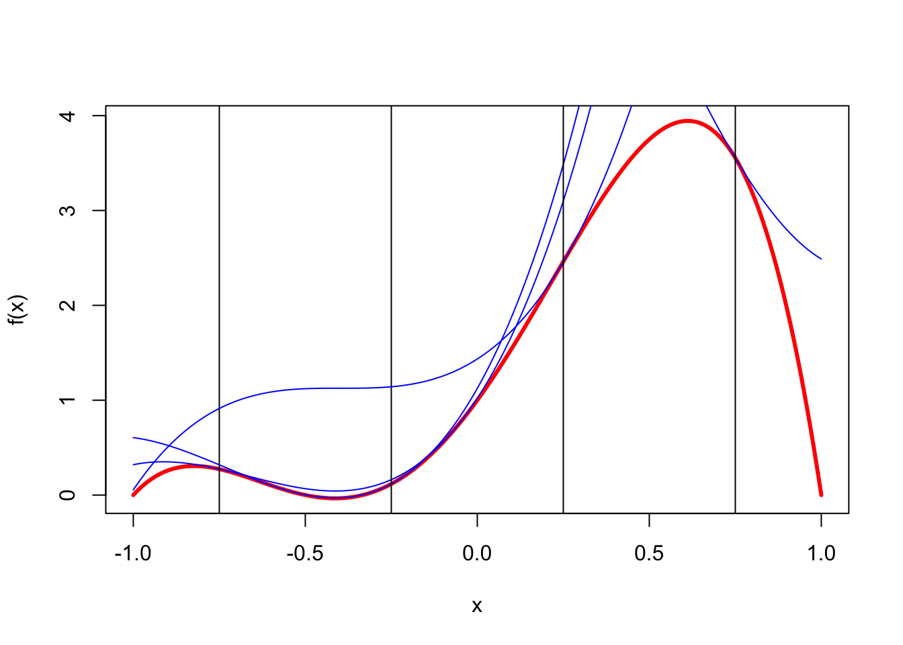
Table 1 shows different iteration counts for different values of \(d.\) In this case we have \(f'''(x)=29.50256\), where \(x=-0.4132122\).
\[ \begin{matrix} \hline d&iterations&rate\\ \hline \ 0&11&0.16627\\ \ 5&11&0.12093\\ 10&10&0.08016\\ 15&09&0.04598\\ 20&08&0.02027\\ 25&06&0.00462\\ 30&04&0.00005\\ \hline \end{matrix} \]
###Normal PDF and CDF
For a nice regular example we use the celebrated functions \[\begin{align*} \phi(x)& = \frac{1}{\sqrt{2\pi}}e^{-z^2/2},\\ \Phi(x)& = \int_{-\infty}^{x} \phi(z)\,dz. \end{align*}\] Of course \(\Phi'(x)=\phi(x).\) And consequently \[\begin{align*} \Phi''(x)&=\phi'(x)=-x\phi(x), \\ \Phi'''(x)&=\phi''(x)=-(1-x^{2})\phi(x),\\ \Phi^{iv}(x)&=\phi'''(x)=-x(x^{2}-3)\phi(x). \end{align*}\] To obtain quadratic majorizers we must bound the second derivatives. We can bound \(\Phi''(x)\) by setting its derivative equal to zero. We have \(\Phi'''(x)=0\) for \(x=\pm 1\), and thus \(|\Phi''(x)|\leq\phi(1)\). In the same way \(\phi'''(x)=0\) for \(x=0\) and \(x=\pm\sqrt{3}\). At those values \(|\phi''(x)|\leq 2\phi(\sqrt{3}).\) More precisely, it follows that \[\begin{align*} 0&\leq\Phi'(x)=\phi(x)\leq \phi(0),\\ -\phi(1)&\leq\Phi''(x)=\phi'(x)\leq\phi(1),\\ -\phi(0)&\leq\Phi'''(x)=\phi''(x)\leq 2\phi(\sqrt{3}). \end{align*}\] Thus we have the quadratic majorizers \[ \Phi(x)\leq\Phi(y)+\phi(y)(x-y)+\frac12\phi(1)(x-y)^{2}, \] and \[ \phi(x)\leq\phi(y)-y\phi(y)(x-y)+\phi(\sqrt{3})(x-y)^{2}. \] The majorizers are illustrated for both \(\Phi\) and \(\phi\) at the points \(y=0\) and \(y=-3\) in Figure 1.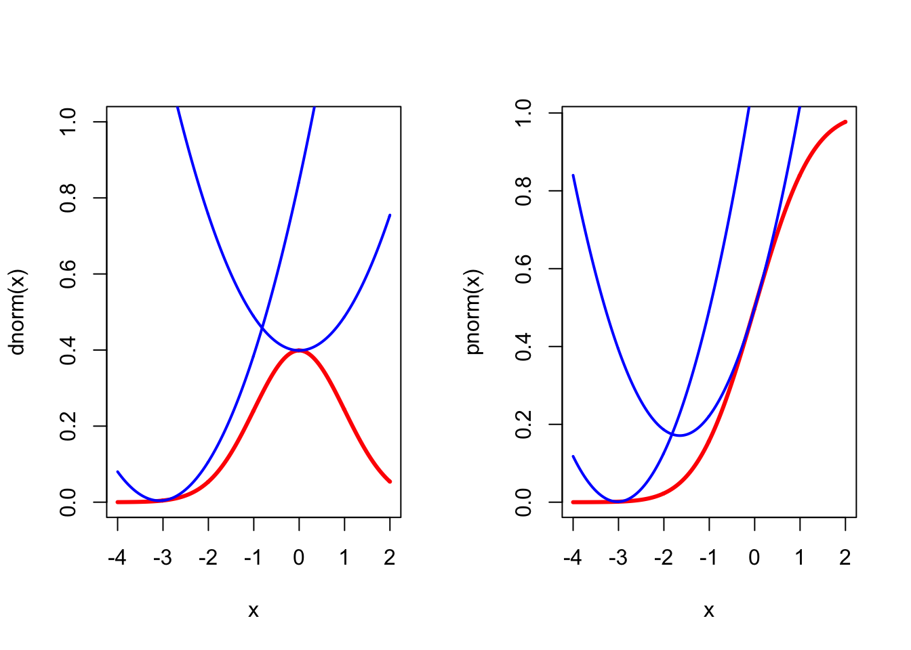
The inequalities in this section may be useful in majorizing multivariate functions involving \(\phi\) and \(\Phi\). They are mainly intended, however, to illustrate construction of quadratic majorizers in the smooth case.
###Logistic PDF and CDF
#Majorization Inequalities
##Introduction
2.5 The AM/GM Inequality
###Absolute Values
###Absolute Values
Suppose the problem we have to solve is to minimize \[ f(x)=\sum_{i=1}^nw_i|h_i(x)| \] over \(x\in\mathcal{X}.\) Here \(h_i(x)\) is supposed to be differentiable. In statistics it typically is a residual, for instance \(h_i(x)=y_i-z_i'x.\) Suppose, for the time being, that \(h_i(x)\not= 0\). Then we have the majorization \[ \sum_{i=1}^nw_i|h_i(x)|\leq \frac{1}{2}\sum_{i=1}^n\frac{w_i}{|h_i(y)|} (h^2_i(x)+h^2_i(y)), \] and we must minimize \[ g(x,y):=\sum_{i=1}^n\frac{w_i}{|h_i(y)|}h^2_i(x), \] which is a weighted least squares problem.
The simplest case of this is the one-dimensional example is \(h_i(x)=y_i-x\), which means we want to compute the weighted median. The algorithm is simply \[ x^{(k+1)}=\frac{\sum_{i=1}^n u_i(x^{(k)})y_i}{\sum_{i=1}^n u_i(x^{(k)})}, \] where \[ u_i(x)=\frac{w_i}{\mid y_i-x\mid}. \]
We have assumed, so far, in this example that \(h_i(y)\not= 0\). If \(h_i(y)=0\) at some point in the iterative process then the majorization function does not exist, and we cannot compute the upgrade. One easy way out of this problem is to minimize \[ f_\epsilon(x)=\sum_{i=1}^nw_i\sqrt{h_i^2(x)+\epsilon^2} \] for small values of \(\epsilon\). Clearly if \(\epsilon_1>\epsilon_2\) then \[ \min_x f_{\epsilon_1}(x)=f_{\epsilon_1}(x_1)>f_{\epsilon_2}(x_1)\geq\min_x f_{\epsilon_2}(x). \] It follows that
The function \(f_\epsilon\) is differentiable. We find \[ \mathcal{D}f_\epsilon(x)=\sum_{i=1}^n w_i\frac{h_i(x)}{\sqrt{h_i^2(x)+\epsilon^2}}\mathcal{D}h_i(x), \] and \[ \mathcal{D}^2f_\epsilon(x)=\sum_{i=1}^n w_i\frac{1}{\sqrt{h_i^2(x)+\epsilon^2}} \left\{\frac{\epsilon^2}{h_i^2(x)+\epsilon^2}\left(\mathcal{D}h_i(x)\right)^2+h_i(x)\mathcal{D}^2h_i(x)\right\}. \] With obvious modifications the same formulas apply if \(x\) is a vector of unknowns, for instance if \(h(x)=y-Zx\).
By the implicit function theorem the function \(x(\epsilon)\) defined by \(\mathcal{D}f_\epsilon(x(\epsilon))=0\) is differentiable, with derivative \[ \mathcal{D}x(\epsilon)=\epsilon\frac{\sum_{i=1}^nw_i\left[h_i^2(x(\epsilon))^2+\epsilon^2\right]^{-\frac32}h_i(x(\epsilon))\mathcal{D}h_i(x(\epsilon))}{\mathcal{D}^2f_\epsilon(x(\epsilon))} \]
For the weighted median the iterates are still the same weighted averages, but now with weights \[ u_i(x,\epsilon)=\frac{w_i}{\sqrt{(y_i-x)^2+\epsilon^2}}. \] Differentiating the algorithmic map gives the convergence ratio \[ \kappa_\epsilon(x)\mathop{=}\limits^{\Delta}\frac{\sum_{i=1}^n u_i(x,\epsilon)\frac{(y_i-x)^2}{(y_i-x)^2+\epsilon^2}}{\sum_{i=1}^n u_i(x,\epsilon)}. \] Clearly \[ \min_i\frac{(y_i-x)^2}{(y_i-x)^2+\epsilon^2}\leq\kappa_\epsilon(x)\leq\max_i\frac{(y_i-x)^2}{(y_i-x)^2+\epsilon^2}, \] which implies \(\kappa_\epsilon(x)< 1.\) If \(y_i\not=x\) for all \(i\), then \(\lim_{\epsilon\rightarrow 0}\kappa_\epsilon(x)=1\) and convergence is asymptotically sublinear.
2.5.1 Gini Mean Difference
Alternatively, we can minimize the Gini Mean Difference of the \(f_i(\theta).\) Now
\[\begin{multline*} \sum_{i=1}^n\sum_{j=1}^n\mid f_i(\theta)-f_j(\theta)\mid \leq\\ \sum_{i=1}^n\sum_{j=1}^n\frac{1}{\mid f_i(\xi)-f_j(\xi)\mid} (f_i(\theta)-f_j(\theta))^2 + \text{terms}, \end{multline*}\]
which can be rewritten as \[ \cdots=\sum_{i=1}^n\sum_{j=1}^n w_{ij}(\xi)f_i(\theta)f_j(\theta)+\text{terms}, \] minimization of which is a weighted least squares problem.
###Location Problems
The Fermat-Weber problem is to find a point \(x\in\mathbb{R}^m\) such that the sum of the Euclidean distances to \(m\) given points \(y_1,\cdots,y_m\) is minimized. Thus our loss function is \[ f(x)=\sum_{j=1}^m w_jd(x,y_j), \] where the \(w_j\) are positive weights. Other names are the single facility location problem or the spatial median problem.
An early iterative algorithm to solve the Fermat-Weber problem was proposed by Weiszfeld (1937). For a translation see Weiszfeld and Plastria (2009).
Here we show how to use the arithmetic mean-geometric mean inequality for majorization. Suppose our problem is to minimize \[ f(X)=\sum_{i=1}^n\sum_{j=1}^n w_{ij}d_{ij}(X), \] where the \(w_{ij}\) are non-negative weights, and the \(d_{ij}(X)\) are again Euclidean distances. This is a location problem. To make it interesting, we suppose that some of the points (facilities) are fixed, others are the variables we have to minimize over. Observe that this is a convex, but non-differentiable, optimization problem.
We use the AM-GM inequality in the form \[ d_{ij}(X)d_{ij}(Y)\leq\frac{1}{2}(d_{ij}^2(X)+d_{ij}^2(Y)). \] If \(d_{ij}(Y)>0\) then \[ d_{ij}(X)\leq\frac{1}{2}\frac{d_{ij}^2(X)+d_{ij}^2(Y)} {d_{ij}(Y)}. \] Using the notation from Example a.a we now find \[ \phi(X)\leq\frac{1}{2}(\hbox{tr }X'B(Y)X+\hbox{tr }Y'B(Y)Y), \] which gives us a quadratic majorization.
If \(X\) is partitioned into \(X_1\) and \(X_2,\) with rows which are fixed and rows which are to be determined (facilities which have to be located), and \(B\) is partitioned correspondingly, then the algorithm we find is \[ X_2^{(k+1)}=B_{22}(X^{(k)})^{-1}B_{21}(X^{(k)})X_1. \]
2.5.2 The Lasso and the Bridge
##Polar Norms and the Cauchy-Schwarz Inequality
2.5.3 Rayleigh Quotient
Rewrite for minimizing 02/22/15, by maximizing x’Bx over x’Ax=1.
We go back to maximizing the Rayleigh quotient \[ \lambda(x)=\frac{x'Ax}{x'Bx}, \] where we now assume that both \(A\) and \(B\) are positive definite. Maximizing \(\lambda\) is equivalent to maximizing \(\sqrt{x'Ax}\) on the condition that \(\sqrt{x'Bx}=1\). By Cauchy-Schwartz \[ \sqrt{x'Ax}\geq\frac{1}{\sqrt{y'Ay}}x'Ay, \] and thus for the majorization we maximize \(x'Ax\) over \(x'Bx=1.\) This defines an algorithmic map which sets the update of \(x\) proportional to \(B^{-1}Ax,\) i.e. we have a shown global convergence of the power method to compute the largest generalized eigenvalue.
We can also establish the linear convergence rate quite easily, using Ostrowski (1966). For definiteness we normalize in each iteration, and set \[ \mathcal{A}(\omega)=\frac{B^{-1}A\omega}{\|B^{-1}A\omega\|}. \] At a point \(\omega\) which has \(B^{-1}A\omega=\lambda_1\omega,\) and \(\omega'\omega=1\) we have \[ \mathcal{M}(\omega)=\frac{1}{\lambda_1}(I-\omega\omega')B^{-1}A. \] It follows that \(\mathcal{M}\) has eigenvalues \(0\) and \(\frac{\lambda_s}{\lambda_1}\), with \(\lambda_s\) the ``remaining’’ eigenvalues of \(B^{-1}A.\) Thus if \(\lambda_1\) is the largest eigenvalue, we find a linear rate of \(\rho=\frac{\lambda_1}{\lambda_2}.\)
There are several things in this analysis which may go wrong, and they are all quite instructive.
2.5.4 The Majorization Method for MDS
The first is an algorithm for multidimensional scaling, developed by J. De Leeuw (1977). We want to minimize \[ \sigma(X)=\frac{1}{2}\sum_{i=1}^m\sum_{j=1}^m w_{ij}(\delta_{ij}-d_{ij}(X))^2, \] with \(d_{ij}(X)\) again Euclidean distance, i.e. \[ d_{ij}(X)=\sqrt{(x_i-x_j)'(x_i-x_j)}.ƒ \] We suppose weights \(w_{ij}\) and dissimilarities \(\delta_{ij}\) are symmetric and hollow (zero diagonal), and satisfy \[ \frac{1}{2}\sum_{i=1}^m\sum_{j=1}^m w_{ij}\delta_{ij}^2=1. \] We now define the following objects \[\begin{align} \eta^2(X)&\mathop{=}\limits^{\Delta}\sum_{i=1}^m\sum_{j=1}^m w_{ij}d_{ij}(X)^2,\\ \rho(X)&\mathop{=}\limits^{\Delta}\sum_{i=1}^m\sum_{j=1}^m w_{ij}\delta_{ij}d_{ij}(X). \end{align}\] Thus \[ \sigma(X)=1-2\rho(X)+\frac{1}{2}\eta^2(X). \] The next step is to use matrices. Let \[\begin{align} v_{ij}&= \begin{cases}-w_{ij}& \text{if $i\not= j,$}\\ \sum_{k\not=i}^m w_{ik}& \text{if $i=j$,} \end{cases}\\ b_{ij}(X)&= \begin{cases} -\frac{w_{ij}\delta_{ij}}{d_{ij}(X)}& \text{if $i\not= j,$}\\ \sum_{k\not=i}^m\frac{w_{ik}\delta_{ik}}{d_{ik}(X)}& \text{if $i=j$.} \end{cases} \end{align}\] Now \[\sigma(X)=1-\hbox{tr}X'B(X)X+\frac{1}{2}\text{tr}X'VX.\] By Cauchy-Schwarz, \[ d_{ij}(X)\geq\frac{(x_i-x_j)'(y_i-y_j)}{d_{ij}(Y)}, \] which implies \[ \hbox{tr}X'B(X)X\geq\hbox{tr}X'B(Y)Y. \] Now let \[ \overline X=V^+B(X)X. \] This is called the Guttman-transform of a matrix \(X.\) Using this transform we see that for all pairs of configurations \((X,Y)\) \[\begin{align} \sigma(X)&\leq 1-\hbox{tr }X'B(Y)Y+\frac{1}{2}\text{tr }X'VX=\\ &=1-\hbox{tr }XV\overline Y+\frac{1}{2}\text{tr }X'VX=\\ &=1-\frac{1}{2}\text{tr }\overline Y'V\overline Y+ \frac{1}{2}\text{tr }(X-\overline Y)'V(X-\overline Y), \end{align}\] while for all configurations \[X\] we have \[ \sigma(X)=1-\frac{1}{2}\text{tr }\overline X'V\overline X+ \frac{1}{2}\text{tr }(X-\overline X)'V(X-\overline X). \]
##Conjugates and Young’s Inequality
Example: Let \(0<r<2\), \(p=\frac{2}{r}\), and \(q=\frac{2}{2-r}\). Then the previous result, applied to \(x^r\) and \(y^{2-r}\), becomes \[ x^ry^{2-r}\leq\frac{r}{2}x^2+\frac{2-r}{2}y^2, \] which provides us with a quadratic majorization for \(x^r\) for all \(0<r<2.\) We have equality if and only if \(x=y\).
showMe <- function (b, r, up = 5) {
a <- seq (0, up, length = 100)
ar <- a ^ r
plot (a, ar, type = "l", col = "RED",
ylab="f(a)", lwd = 2)
br <- (r * (a ^ 2)) / 2 + (((2 - r) * (b ^ 2))/ 2)
br <- br / (b ^ (2 - r))
lines (a, br, col = "GREEN", lwd = 2)
abline (v = b, lwd = 2)
}Here is an example with \(y=2\) and \(r=1.5\).
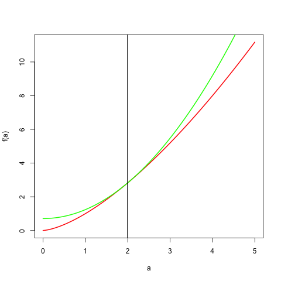
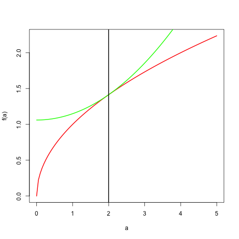
One important application of these results is majorization of powers of Euclidean distances \((\sqrt{x'Ax})^r\) by quadratic forms. We find, for \(0<r<2\), \[ (\sqrt{x'Ax})^r\leq\frac{1} {(\sqrt{y'Ay})^{(2-r)}}\left\{\frac{r}{2}x'Ax+\frac{2-r}{2}y'Ay\right\} \]
###Support Vector Machines